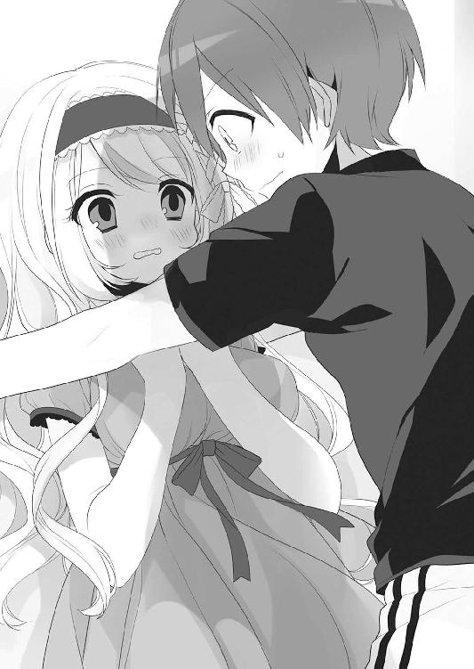

| オタク荘の腐ってやがるお嬢様たち2 (富士見ファンタジア文庫) | |
| 長岡 マキ子 | |
| (2014) | |

オタク荘の腐ってやがるお嬢様たち2
長岡マキ子

富士見ファンタジア文庫
本作品の全部または一部を無断で複製、転載、配信、送信したり、ホームページ上に転載することを禁止します。また、本作品の内容を無断で改変、改ざん等を行うことも禁止します。
本作品購入時にご承諾いただいた規約により、有償・無償にかかわらず本作品を第三者に譲渡することはできません。
本作品を示すサムネイルなどのイメージ画像は、再ダウンロード時に予告なく変更される場合があります。
本作品は縦書きでレイアウトされています。
また、ご覧になるリーディングシステムにより、表示の差が認められることがあります。
口絵・本文イラスト 森山しじみ

俺の人生にドラマなんてない。
たとえ一つ屋根の下に全校生徒憧れのお嬢様たちが住んでいたって、それはテレビの中の芸能人と同じで、たとえ薄くても、確かな隔たりの向こうに存在する人々だった。
あの日、御車響子と出会って......。
──この部屋で見たことは、わたしたち二人だけの秘密よ？
あの瞳にのぞきこまれたとき、すべてが変わった。
そして、今。
「先輩、ウチと付き合ってください」
俺の部屋の前に立った花垣汐実は、じっと俺を見つめている。
「............」
噓だろ？
こんな展開、俺の人生にあるはずがない。
１
深呼吸一つしたら、場面が切り替わって俺は布団の中で目を覚ます......そんな妄想をしてみたけど、目の前の花垣はまぎれもなく現実の存在のようで消える気配がない。
「付き合うって......どういうこと？」
俺の間抜けな質問で、彼女は少し苛立ったように目を逸らす。
「そのままですよ。前に先輩に言ったでしょ、ウチ、彼氏が欲しいんです」
「......彼氏......」
なんで、俺？
そう言おうとしたとき、以前の彼女の言葉を思い出した。
──ウチ、清聖のギャル友の中で一人だけ彼氏いないんで。一応中三のときから付き合ってる彼氏がいるってウソついてるんですけど、早くほんとの彼氏作んないと、ウソがバレるんで。ヤバイんで。先輩なら、オタクで腐男子だけど見た目はフツーだからいいかなって思ってたんですけど──。
「......もうわかったと思うけど......俺、腐男子じゃないよ。君の想像通り、君の本は頼まれて買いに行ったんだ。それでも......？」
花垣は答えない。自分が手にする二冊の同人誌にそっと目を落としただけだ。
俺は今日、御車響子の描いた同人漫画を彼女と一緒にイベントで売った。生徒会長の彼女には、プロＢＬ漫画家を目指すほどの腐女子であるという秘密がある。
花垣は、買い物に来た会場で偶然俺と彼女を見かけてそれを知ったらしく、今、俺に「会長の秘密を黙っている代わりに付き合ってください」と言っているのだった。
「......っていうか、その本、どうやって俺たちから......？」
間を繫ぐために口にしてみたものの、そんな経緯はどうだっていい。彼女が御車響子の描いた同人誌を持っているのは事実なんだから。
「......簡単ですよ。途中まで並んで、隣の人に『すいません、お腹痛くなっちゃったんでウチの分も買ってきてもらえますか』ってお金渡しただけです」
目を伏せたまま言って、彼女は再び俺を見つめた。
「......で、どうなんですか？ ウチと......付き合ってくれるんですか」
花垣汐実。
中三にして小説はやて新人賞を獲り、いきなり芥木賞にノミネートされたような、日本中の誰もがその名を知る天才少女小説家。ちょっとギャルっぽくて怖いけど、こんな才能ある美少女に「付き合って」と言われて、彼女もいないのに断る男は大馬鹿だ。
俺がもし、シングルマザーの母親に家出されて寮の仕事に忙殺される、冴えない落ちこぼれの男子その一でなければ......。
でも、即答できないのは、自分が彼女に釣り合わないせいだけじゃない。
──あの日、わたしの秘密を見られた相手がえーくんでよかった。
──えーくんって、わたしが生まれて初めて好きになった男の人に似ているわ。
「............」
こんなときに、なんで御車響子の顔が思い浮かぶんだ。釣り合わなさで言ったら、彼女だって同じじゃないか。
「......会長のこと」
ドキッとして、そう言った花垣を見た。彼女はなぜかそこで言葉を止め、俺の反応を確かめるようにじっと見つめている。
「......言ってもいいんですか？ ウチと付き合わないならバラすって言ってるでしょ」
「ダメだ！ それだけは......」
「じゃあ、ウチと付き合うんですか？」
「......それは......」
「バラしますよ!?」
「いや！ やめてくれ......！」
「じゃあ......っ！」
花垣はじれったそうに俺を見つめる。
──いいよ、付き合おう。
そんな風に簡単に言えるほど、俺は器用でもないし、女たらしでもない。それどころか、普通に話せる女子すら最近までいなかったくらいのモテなさなんだ。
「......俺......君のこと、よく知らないし......」
困り果てて言った言葉は、まぎれもない本心だった。
御車響子のことが頭に浮かぶのは、彼女は俺がこの一ヶ月で......いや、清聖に入学してから、母親以外で一番濃密に接触した女性だからだ。そうに違いない。
もしも花垣と親しくなったら彼女のことを誰よりも好きになるかもしれないけど、今のところ、俺は御車響子以外の女子のことなんてほとんど知らないわけだし、そんな状態で付き合うとか付き合わないとかの決断ができるわけがないだろ？
「......先輩、自分の置かれた立場わかってます？ これ、脅迫なんですよ？」
花垣は呆れた顔で俺を見ている。
「わかってるけど......」
たとえばこれが「口止め料に千円ください」とかだったら、とっくに薄い財布を開いてなけなしの金を払っている。でも、これは......恋愛にかかわる話は別じゃないか。
「......先輩って、思ったより融通の利かない人なんですね」
諦めたようなため息を吐いて、彼女は再び眉をつり上げた。
「わかりました。じゃあ、ウチと交際を前提にデートしてください」
「えっ!?」
「これは絶対です。これ聞いてくれなかったら、今すぐ学校戻ってこの同人誌コピーして全校に配りまくってやるから！」
「わかった！ わかったから、大きい声出すなって！」
寮の廊下には誰が出てくるかわからないし、この寮自体が学校の敷地内なので慌てる。
「まぢですか？ 交際前提ですよ......？」
花垣の瞳がギラン、と光る。
「あ、ああ......。とりあえず、付き合う前にどっか出かけようってことだろ？」
「どっかじゃないです、渋谷です。ギャルは渋谷って決まってるでしょ」
なんとかこの場を穏便に切り抜けたい俺に、花垣は口を尖らせて言い返す。
「明日でいいですか？ 祝日だし、朝食の用意もないですよね」
「あ......ああ」
「朝九時、ウチの部屋に迎えに来てください」
「わ、わかった」
「服装はお兄系で。先輩、メンズエックとか読みます？」
「は？」
「じゃあいいです。ウチ、Ｂ系は趣味じゃないけど、先輩そっちじゃなさそうだし」
俺を置いてけぼりにして矢継ぎ早に告げた花垣は、そこでなぜか急に頰を染めた。
「......じゃあ、楽しみにしてるんで」
俺から目を逸らし、独り言のように小さな声でぼそっと言ったかと思うと、花垣はさっと身を翻して廊下をパタパタ走って行ってしまった。
「......なんだったんだ......」
□
「......えーくん？」
そう声をかけられて、はっとして顔を上げた。
「ん？」
その夜、俺は寮の御車響子の部屋に行った。「お疲れさま」とコーラで乾杯して、彼女の初参加イベントの反省会をしているところだった。
「何を考えてらっしゃったの？」
「え？ ああ......」
あれから、ずっと花垣のことを考えている。事情は微妙だけれども、彼女いない歴十六年の俺が、美少女から「付き合って」と言われたんだ。舞い上がらない方がおかしい。
でも、イエスと即答できなかった理由には、少なからず御車響子の存在があるわけで。
「改めて、えーくんには何度お礼を言っても足りないわ。本当に......ありがとう」
そう言って、御車響子は大きな目を細めて上品に微笑みかけてくる。俺たちは六畳ワンルームの中央にある丸テーブルを挟んで向かい合っていた。
「ん......おう」
そんな目で見られると、俺はつい勘違いしそうになって、ぶっきらぼうになってしまう。同時に、花垣のことを思い出して胸の奥がもやもやした。
（言った方がいいんだろうか......）
──実は今度、花垣さんとデートすることになったんだ。
御車響子はなんと言うのだろう。
──そんな......いやよ！ わたし以外の子とデートなんかしないで！
言わない。御車響子はそんなこと言わない。
むしろ......。
──そうなの。楽しんで行ってらしてね、えーくん。
うん、断然こっちだ。
「............」
勝手な脳内シミュレーションでダメージを受けていると、俺に何か話しかけていた御車響子が、楽しげな様子で立ち上がった。
「そうそう、今日わたしの本を買ってくださった方たちが、早速感想をくださったの」
彼女は俺の方へ来て、部屋の隅にあるパソコンデスクの前の椅子に座った。
「えっ、感想って......メールとか？」
「ええ。ピクシブのメッセージから。登録している人同士でなら誰にでも送れるから」
そう答えながら、彼女は上半身だけパソコンの方を向いてマウスを操作する。畳に座ったままの俺が横を見ると、ちょうど目の高さに彼女の膝がある。ひらひらのお嬢様ワンピースの裾の一部が椅子に巻き込まれてめくれており、無防備に露出した白い太腿にドキッとした。
「ほらほら、見てくださる？」
彼女の弾んだ声がして、俺は慌てて目を逸らして立ち上がった。
「......ああ、ほんとだ」
開かれていたのはメッセージ受信ボックスで、今日の日付で「新刊読みました」「ご本買わせていただきました」などのタイトルのものが何通も見られる。
「よかったら、ちゃんとご覧になって。こんな嬉しい感想をもらえたのは、えーくんのお陰だもの」
そう言うと御車響子は席を立って、俺に椅子を譲ってくれた。かすかに彼女のぬくもりの残る革のシートに腰を下ろし、俺はメッセージをクリックして本文を読む。
「......すごいじゃん。みんなめちゃくちゃ褒めてくれてるよ」
「ええ......本当に嬉しいわ」
「『次も楽しみにしてます』だって。気が早いなあ」
別に俺が褒められているわけではないのに、自分のことみたいに嬉しい。調子に乗って次々に感想に目を通していたとき、あるメッセージを読んで「あれ？」と手を止めた。
次の新刊も楽しみにしています！ 今度は18禁だったりすると嬉しいです（笑）。
同じメッセージをクリックしてしまったかと思い、受信箱に戻って前のメッセージを確認する。
これからも応援しております。次は18禁も読んでみたいです......！
間違いではなかった。別々の差し出し人からのメッセージの最後に、同じようなことが書いてあったのだ。
「......18禁かぁ......。女の子も案外エロい同人誌が好きなんだな」
「えっ？」
俺の独り言のような言葉を聞きつけ、御車響子が画面に顔を近づける。ふわりとシャンプーの甘い香りがして、彼女のやわらかな金髪が頰に当たった。
「............」
彼女は画面を見て、俺が表示したメッセージを読んでいる。その瞳の真剣さを見て何事かと思うのと同時に、焦点が合わないくらい近くにある横顔にドキドキする。大きめのやわらかな胸が俺の腕に触れてしまっていることにも気づいていないみたいだ。
「18禁......18禁ね......」
モニターを見たまま、彼女は言い訳するように続ける。
「難しいわ......。わたしまだ十六だし。十八歳になったら考えてみるつもりだけど......」
「うん、それでいいよ。深く考えることないって」
ＢＬの18禁シーンなんて、いくら御車響子の作品でも見たくないので同意する。
「それより、ちょっとさ......」
嬉しいので避けることもできずにいた、俺の腕に押し当てられた彼女の胸を視線で示す。すると、御車響子はその美しい顔をはっとさせた。
「あっ......！ ごめんなさい」
飛びのくように身体を離して、一瞬にして赤く染まった頰で俯く。
「やだわ、わたし......」
火照った顔を両手で押さえて、彼女は再び元の丸テーブルの前に座った。きれいにスカートを整えて正座し、テーブルの上に置いた両手をそっと組む。オタクなことに夢中になって大胆なことをして、それに気がついて恥じらう。いつもの御車響子だ。しかし、その一連の動作がいつになく緊張して見えて、俺はパソコンのモニターから目を離して彼女の方に椅子ごと向き直った。
「......ねえ、えーくん」
テーブルに視線を落とし、彼女は硬い声で言う。
「初めての経験って、どうしてそれだとわかるのかしら......？」
「えっ？」
意味がわからなくて訊き返すと、彼女はちらっと俺を見て再び目を伏せた。
「たとえばね......、わたし、幼稚園の頃からずっと女子校で育ってきて......高校に入るまで、同じ年頃の男の子が身近にいなかったの。だから、わたしにとって男の人っていうのはファンタジーな存在で......エルフとかドラゴンとかと変わらない、空想の中で好きに弄べる生き物だったの」
結構すごいこと言うなと思ったが、とりあえず黙って彼女の話を聞いた。
「だから......もし、こんなわたしが現実の男の人に恋をしたとしても、それが恋だとわかる自信がないわ......。初恋ってみんな言うけど、どうして初めてのことなのに『これが恋だ』と気づけるのかしら」
「うーん......」
彼女の言っていることは、なんとなくわかる気がするけど。
「でも、初恋ってそんなもんかもしれないよ。俺だって、今にして思えばそうだったのかなあって感じだし......」
ユキ姉のことを思い出して言うと、御車響子はぐりんと首をねじ切れるほど回して俺を見た。
「えーくん、恋をしたことがおありなの......？」
彼女の視線は、興味津々といった風にこちらに向けられている。
「あっ、悪いけど相手は女の子だよ？」
「わかっているわ」
少し憤慨したように頰を膨らませて、彼女はやっぱり俺を見ている。
「どんな方？ お付き合いはなさったの？」
「えっ？」
「それとも......今も付き合ってらっしゃる......？」
質問の最後で、彼女は目を逸らした。
「え？ えーと......」
幼い頃の従姉への他愛もない感情で、減るものでもないから順番に回答しようかと思ったとき、彼女は急に「あっ」と口を開いた。
「やっぱりいいわ、ごめんなさい。はしたないことをお訊きしたわ......」
「別にいいよ。同人誌に必要なんだろ？」
当然そうだろうと思って訊いたのだが、彼女は一瞬面食らったようにぽかんとした。
「えっ......？」
「今度の本のテーマは『初恋』？」
腐女子の御車響子との交流も、もう一ヶ月になる。彼女の思考回路は大体わかってきた。当てられると思っていなかったのか、彼女は恥ずかしそうに顔を赤らめているけど。
「......そ、そうなの」
「やっぱり。だから『18禁が読みたい』ってメール見て、深刻な顔してたんだろ。テーマがテーマだし、リクエストには応えられそうにないから」
あまりに言い当てられて驚いているのか、御車響子は俯いたきりしばらく何も言わなかった。
「......そうね」
やっと答えて、彼女は顔を上げる。
「えーくんってすごいわ」
こちらを見て、大きな目を細めて上品な笑顔を向けてくる。
「わたし、えーくんとお友達になれて本当によかった」
ときめきかけた胸は、その言葉で冷水を浴びせられたかのように落ち着く。
（お友達......か）
何もおかしいことはない。そういう約束で始まった関係だ。彼女みたいな完璧お嬢様が俺みたいなのを「お友達」にしてくれただけでも有難い。そう思っていたのに、俺はいつから欲を出すようになってしまったのだろう。
やっぱり、花垣とのデートのことは言わなくて正解だったと思った。俺ばっかり翻弄されてバカみたいだ。
□
翌日になって、俺は言われた通り朝の九時に寮の二階へ上がった。
花垣の部屋は、御車響子の部屋の向かいの角部屋だ。オタク荘の住人は全体的に夜型で、休日前などは明け方近くまで階上から物音がするが、その分朝はとても静かだ。朝日の射し込む静まり返った廊下で、背後をわずかに意識しながら「花垣汐実」のプレートのついたドアを叩いた。
「......はい」
中からテンションの低そうな声が聞こえて、数秒待っているとドアノブが回る。開かれたドアの向こうにいた花垣を見て、俺は「あれ？」と思った。
彼女はワンピースを着ていた。ウエストで切り返されたデザインで、上は白いレース、下はシフォン素材で鮮やかな花柄のミニスカートだ。半袖の肩の部分が切り取られたように露出しているのが、ギャルの彼女的にはポイントなのかもしれない。
俺が「あれ？」と思ったのは、彼女の髪型が普段と違っていたからだ。いつも下ろしている明るめの茶髪がゆるく巻かれ、二つに分けて顔の横で結ばれている。
「............」
何か褒めるべきなのかもしれないけど、気の利いた言葉が思いつかない。一方、彼女も俺の格好をじっと観察していた。
俺は、またしても上だけ母親チョイスの服を着ていた。英字新聞を切り取ってパッチワークしたような柄がプリントされた半袖シャツで、袖と襟に細く入った赤いラインがおしゃれ度の高い、普段着としてはこっ恥ずかしい代物だ。
「ふーん......。先輩ってビームス系なんですね」
花垣は独り言のように感想を述べる。
「え？......へ、変......？」
「いえ。可愛くていいと思います」
さらっと言うと、花垣は俺を追い越して廊下を歩き出した。その後ろ姿を見て、俺は目を丸くする。
「......!?」
服の背中に穴が開いている。それはなんらかのアクシデントによってできたものでなく、そういうデザインなのは一目瞭然で......背中の中央がひし形にくりぬかれ、本来ならば下着や何かしらの布で覆われているはずの肌があられもなく露出しているのであった。
（下着は......ブラジャーはどうなってるんだ......）
一階へ下りてからもそればかり気になって、大玄関の鍵を開けるのを忘れたまま何度もガチャガチャと取手を引いてしまった。せめて普通に髪の毛を下ろしていれば気にならないのに......と思って、彼女が髪を二つ結びにしていたのは肌を見せるためかと気づいた。
（もしかして......誘われてるのか？）
デートのときにこんな格好をしてくるなんて、そうとしか思えない。駅までの道を歩きながら、たちまち不埒な妄想に意識を支配されかけて、気を逸らすために何か彼女に話しかける内容を考えた。
「......やっぱり、デートのときはいつもこんな感じなの？」
「え？ 何がですか？」
しまった。開いた背中のことばかり考えていて、服から話題が逸らせなかった。
「えっと、その......ファッション？ いつもと雰囲気違うから」
「そうですか？ ウチ、いつもこんな感じですけど」
「あ、そ、そう......か」
話が終わってしまった。
「......なんで」
次はなんの話をしようと冷や汗をかいていると、隣を歩く彼女がムスッとした声で言う。
「なんで、そんなこと訊くんですか？」
「えっ？」
「この髪型、変ですか？」
「えっ？ い、いや......」
そうじゃない。そこじゃないんだ。
「髪型は、別に変じゃないよ」
「......じゃあ、この服が変ですか？」
「いや、変っていうか......」
伝えるって難しい。俺の要領を得ない回答のせいで、二人の雰囲気も微妙になってしまった。
そうして会話もあまり弾まず、俺たちは一時間ほど電車に乗って渋谷へやってきた。
「まずは買い物しましょう。ちょうどマルキューが開店したところなんで」
ハチ公前の交差点から少し歩いたところに、１０９という数字のついた建物がある。そこがギャルと呼ばれる女性たちのメッカ的なファッションビルであることは、俺のような非リアでもほんのり知っていた。
「俺、こんなとこ来るの初めてだよ......」
中に入ると、フロア内には色々な女性向けの服飾ブランドが店を構えている。普通のセレクトショップと違って、マネキンがウイッグやつけまつげでメイクアップされていたり、大音量でトランス系の音楽が流れていたり、ギャルの聖地だけあってなかなか攻めのセンスだ。うろついている客たちも、半分近くがギャルっぽい派手め女子である。
「まだ、夏服～！ って気分じゃないですよねー。梅雨もあるし」
そんなことを言いながら、花垣は店内をふらふら歩いて商品を物色する。
「......先輩、どれがいいと思います？」
つい飽きてぼんやりと今夜の夕飯メニューのことなんかを考えていると、彼女に話しかけられた。
「えっ？ 俺、そういうセンス全然ないよ」
「別にいいです。先輩の趣味が知りたいだけだし」
面食らう俺を、花垣はどこか責めるような視線で見ている。
「......好みじゃなかったんでしょ、今日の服。だから、先輩が好きな服選んでください。参考にするから」
どうやら、さっきの俺の言動はそういう風に伝わったらしい。弁解するには機を逸してしまった感があるので、俺は不本意ながら頷いた。
「わかった」
そういうことならと改めて周りを見回したが、今いるフロアに陳列されている服はどれもピンと来ない。
そこで二人でふらふらと他のフロアを流して見て歩く。エスカレーターで五階に来たとき、俺は「あっ」と足を止めた。
「ここの服好きかも」
目についたのは、黒やメタリック系のテイストの店とは違って、ホワイトやパステルカラーの服の多い店だった。店名の真下にあるマネキンは、淡いピンク色のレース付きカーディガンに、花柄のレースが重なった白いスカートを着ている。
「......先輩ってコンサバ系が好みなんですね」
花垣が言って、自ら店に入って行く。俺もあとをついて行き、彼女が物色するハンガーに吊るされた服を脇から眺めた。
「なんか......全体的に、会長が着てそうですよね」
「えっ!?」
思ってもないことを言われて、つい動揺する。
「そ、そんなことないと思うよ。彼女のはもっとフリフリヒラヒラしてるっていうか」
そんな俺を、花垣は服を選ぶ手を止めて一瞥する。
「......ただのイメージなんで、実際どうかウチは知りませんけど。会長の私服なんて」
「あ、それとか！ 可愛いんじゃないかな」
そのとき彼女が手に取ったワンピースを見て叫んだのは、話題を変えるための苦し紛れではなく本当にそう思ったからだった。オフホワイトの半袖ブラウスと黒いギンガムチェックのフレアスカートがドッキングしたようなデザインで、ブラウスの襟や袖の周りに小ぶりなフリルが付いているのが女の子らしくて上品だ。
「ふうん......」
花垣はハンガーごと外して、その服を眺めた。
「こういうの着ないんですけど......試着してみようかな」
そう言うと、近くの店員を呼び止める。
「あっ、はい！ ご試着ですね～！」
店員にしては軽いノリのお姉さんは、花垣を奥の試着室へ誘導した。
「こちらです！ 着れたら見せてくださいね。彼氏さんはここで待っててくださいー」
「かっ......！」
俺は花垣と同時に叫んだ。
「............」
そっと黒目を動かして見ると、目が合った花垣は耳まで真っ赤にしていた。思わぬうぶな反応におやと思う間もなく、彼女は自ら試着室のドアを閉めた。
店員も去り、することのない俺は、その白いプラスチックの扉の前で待っていた。
「......先輩、います？」
少しして、試着室の中から花垣の声がした。
「すいません、手伝ってもらえます？」
「えっ!?」
「後ろのファスナーが上がらないんです」
「ええっ......!?」
そんなの店員さんにやってもらってくれ、と辺りをきょろきょろするが、さっきのお姉さんは、現在レジで別の客の会計中だ。他に店の人らしき人物は見当たらない。
「先輩、早く」
おろおろしていると、試着室のドアが細く開いて、花垣の片目がのぞいた。
「恥ずかしいから中入ってください」
「えっ、そんな......」
彼女にグイッと手を引っ張られて、半ば強引に試着室に引きずり込まれる。両手も広げられないくらいの狭さの個室の中で、着替え中の彼女と二人きりになった。
「ウチ、身体硬いんで......ここまでしか上がらなくて」
花垣は俺に背を向け、正面の鏡越しに俺を見た。その背中のファスナーは、腰の辺りまでしか上がっていない。そして、惜しみなく露出しているその背中は......やはり素肌だった。思ったよりきめの細かい綺麗な肌で、すべすべの手触りが予想できる。
（一体どんなブラジャーを......っていうか、まさか着けてないのか......？）
デートしている女の子がノーブラかもしれない。女子耐性のない俺にとって衝撃的すぎる妄想が確信に近づき、生唾を吞みながらファスナーに手をかけた。
「上げるよ」
昔から母親の着替えを日常的に手伝わされていたので、ファスナーを上げる行為自体に戸惑いはない。が、自分に「付き合って」と言ってくれている女の子（ノーブラ疑惑あり）の背中を前にして、よくわからない緊張で手が震えた。
「あれっ......おかしいな、上がらない......」
左手で服地をつかみ、右手でファスナーをつまんで引っ張り上げる。格闘しているうちに右手が素肌の背中に触れたり、左手が彼女の細い腰の感触を感じてしまったりと、動揺がエスカレートした。
「ちょっ......先輩!? ふざけてないで、ちゃんとやってください！」
もたもたしている俺に、花垣がじれったそうな声を上げる。
「やってる！ やってるよ！ でもなんか上がらな......あー生地嚙んでる......！」
「ハァ～!? 何やってるんですか、先輩！」
生地に食い込んだファスナーを戻そうと躍起になっていると、ドアの向こうからお姉さんの声がした。
「どうしましたー？ 着れましたか？」
「ちょっと待ってください......ッ！」
俺が答えると、お姉さんが「エッ!?」と叫ぶ。
「失礼します、開けますよー!?」
ガチャッと音がして、内側に開いたドアに尻を押される。
「うわっ！」
「キャーッ！」
よろけてつんのめった俺は目の前にある裸の背中に顔を突っ込み、花垣の悲鳴が上がる。倒れまいとして思わず彼女の身体に抱きついてしまったため、その華奢な腰が密着しているのを感じた。だけでなく......俺が回した腕は、彼女の細い身体の前面にまで到達していて、掌に丸くてやわらかい膨らみをわしづかみにしている感触があった。
「......!? あっ、ごめ......」
悪いのですぐ離したいけれども、ドアが開いてるので体勢を立て直せない。
「なっ、何してるんですかっ!?」
俺たちの様子を見た店員のお姉さんは、何を思ったのか動揺した声で叫んだ。
「いや、あの、これは......」
「そういうことは、よそでやってください！」
弁明しようと振り返った俺に、お姉さんは𠮟りつけるように言った。
「サイアク！ 先輩のせいで恥ずかしくて買い物できなかったじゃないですか！」
逃げるように試着室を出て、俺たちはその店をあとにした。ブーブー文句を言う花垣に、俺は「ごめん」と謝りながら心の中で反論する。
（でも、そっちが背中に何も着てないのが悪いんだろ......！）
「せっかく先輩に服選んでもらおうと思ったのに！」
「それなら、どっか別の店行く？」
「もういいです、まぢ恥ずかしい！ マルキュー出ますっ！」
そう言う花垣は頰を上気させ赤くしている。自分で自分を抱きしめるみたいに胸の辺りを腕で押さえていて、俺は試着室でのハプニングを思い出した。
（胸、やわらかかったな......）
とはいえ何か素肌とは違う感触もあったので、やはり下着は着けているのだろう。
（これはあれか、肌に貼り付ける、なんとかってブラジャー......）
「............」
彼女はどういうつもりなんだろう。俺みたいなほとんど話もしたことない年上の男に「付き合ってください」なんて言って、しかもそれは、友達への見栄や何かからついた噓をカムフラージュするための「早くほんとの彼氏作んないとヤバイんで」という理由で。かと思ったら、付き合う前の初めてのデートから、こんな挑発的な格好をしてきて。
たぶん、彼女にとって「彼氏」というのは、洋服を選ぶくらいの気軽さで、あ、今日はこれにしよう、なんて感覚で決められるものなんじゃないだろうか。今はたまたま彼氏がいないだけで、これまで何人かと付き合ってきたんだろうし、いつもこんなやり方で男をその気にさせてきたのかもしれない。俺だって、こんな格好の彼女から全力で迫られたら、御車響子を忘れて陥落してしまうに違いない。
（もしかしたら、俺は今日大人になってしまうかもしれない......）
そう思ってにわかに興奮していると、１０９を出た彼女はセンター街の方へ歩いて行く。
「どっ、どこ行くんだ？」
まさかあんなところでは......とやましい妄想に侵されたまま尋ねる俺に、未だ赤い頰をした花垣は答えた。
「プリクラ、撮りましょ。今日の記念に」
「......ああ、うん」
一瞬返答が遅れたのは、御車響子との池袋デートを思い出したからだ。
「プリクラって、普通のプリクラ？」
「え？ 当たり前じゃないですか」
花垣は訝しげな顔をしている。その言葉通り、彼女が入っていったのは普通のプリクラ店だった。入口にある「男性のみの入店お断り」の張り紙を見てなんだか緊張する。
「......こういう店入るの初めてなんだけど」
「ああ、プリ屋って女子がいないと入れないですもんね」
店内は狭いゲーセンのような雰囲気だが、本当にプリクラ機のみが奥まで並んでいる。中にいるのは女の子のグループばかりで、あちこちからいい匂いが漂ってきそうだ。
「これ、自然なのにちょー盛れるんですよ。これにしましょう」
ちょうど空いていた手前の機種を指して、花垣は慣れた手つきで分厚いビニールのカバーをめくる。
（ほんとにギャルなんだな......）
──わたし、プリクラ撮るの初めてなの。
御車響子のことを思い出して、同じオタクの腐女子でもこうも違うものかと感心するような気持ちになる。
二人で小銭を半分ずつ出してコイン投入口に入れ、画面が起動すると、花垣はやはり慣れた様子で操作する。「友達と撮る」「カップルで撮る」の表示で、彼女はちょっと手を止めて後者を選択した。すると、いきなり機械が喋り出した。
『まずは、二人でハートを作ってみよう♪』
「えっ!?」
「こうですよ、先輩」
戸惑う俺に、花垣は自分の片手を出してくる。親指を反らすように伸ばし、他の指をそろえて丸め、同じようにした相手の反対の手と合わせるとハートになるらしい。
「へ、へー......」
なんという恥ずかしさ。
その後も「にゃんこのポーズをしてみよう♪」などと無茶ブリされ、新たな黒歴史を生みだしたあと、機械の声は明るく言った。
『最後は、画面の前でちゅーしちゃおう♪』
「ええっ!?」
だが、叫んだのは俺だけだった。隣の花垣は画面を見たまま微動だにしない。
（そうか......）
俺は悟った。彼女にとって、こんなのは当たり前の指示なのだ。さっきからの彼女の慣れた振る舞いからわかりきっている。前の彼氏ともプリクラに来たらいつもこんな風に楽しんでいたのだろうし、この指示のことも知っていて「カップルで撮る」を選んだのだろう。ここで動揺を見せたら、俺はまた「先輩ダッサ！」などと思われるに違いない。彼女いない歴十六年がバレるぞ......。
「......ど......どうする？ やる？」
うお～どうしよう！ 見栄を張って言ってしまった......！
えっ、本当にどうしよう？ 目をつぶればいいのか......？ そう思っていた俺は、彼女の顔を見て言葉を失った。
「......えっ......まぢですか、先輩......？」
俺を見た花垣の顔が、困惑の表情で首の方から朱に染まる。慌ててそれを隠そうとしたのか、彼女は両手で頰を押さえた。
「えっ......!?」
困ったのは俺も同じだった。
「......えっと、その......」
まさか、こんなリアクションが返ってくるとは思わなかった。うろたえていると、画面の方から声がする。
『三、二、一......』
カシャッとシャッター音がして、俺たちは向き合って赤面したまま最後の撮影を終えてしまった。
「......あ......」
花垣は気まずそうに目を上げ、未だ赤い頰で口を開く。
「......すいません......」
「い、いや......」
「イヤだったってわけじゃないんですけど......」
恥ずかしくて仕方ないという様子で彼女は言った。
「ファ......ファーストキスの場所が、プリ機の中っていうのは、ちょっと......」
「えっ!? ファースト!?」
びっくりして、思わず彼女の声のトーンに不釣り合いの大声を出してしまった。
「えっ!? 噓だろ、彼氏は!?」
「......いっ、いないから付き合ってって言ったんじゃないですか！」
つられたように、花垣はヤケクソ気味な調子で声を張り上げる。
「そうじゃなくて、今までに、いただろ!? こうやって渋谷でデートしてたんだろ!?」
「はあ!? ウチ、そんなことひとっことも言ってませんけど!?」
「だって、買い物もプリクラも慣れてたし......！」
「買い物もプリも、女友達とだってできるでしょ!?」
「いや、でも......」
君たちギャルっていうのは、彼氏がいて当たり前なんだろ？ だから君も彼氏が欲しいと思ったんだろうし、毎週末渋谷で遊んでたら、女の子グループでいたってナンパとかたくさんされるんじゃないか......？ そんなことを、しどろもどろに伝えると、彼女はなぜか落ち込んだように押し黙った。
「......ウチ、中学の頃にはそんな暇なかったです。休みの日は小説書いてたし、オタクイベントもあるし、清聖に入って家を出たかったから、受験勉強もしなきゃならなかったし......。だから友達ともそんなに頻繁に遊べなくて」
言われてみたらそうだ。俺なんて、勉強もしていないのに寮母の仕事だけでいっぱいいっぱいなのに。
「それに、ナンパとかしてくる男の人なんてイヤじゃないですか......。もっと軽くない、しっかりした人がいいし、ウチのことも中身で見て欲しいし」
意外とちゃんとしたことを言う。俺の中の「ギャルの花垣汐実」像がにわかに崩れ始めた瞬間だった。
「でも、ほら......、そんな格好してるし......」
最後の反論材料として彼女の服を指差すと、花垣は顔中にクエスチョンマークを浮かべて自分の全身をチェックした。
「は？ 何か変ですか？」
「......背中、開いてる。肩も開いてるし」
「そういうデザインなんですよ。めっちゃ可愛くないですか？」
可愛い？
あまりに感覚が違うので、ぽかんと口が開いてしまった。
「今年はこういう肌見せが流行ってるんですよ。ギャルなら取り入れないと」
どこか自慢げに言う彼女の顔を見ながら、俺はおずおずと口を開いた。
「......ごめん......俺、流行とかそういうのよくわからないから、そういう格好されると、ただむやみに露出してるようにしか見えなくて......」
今度は花垣がぽかんとする番だ。
「通りすがりの人だったら『エロいなー』くらいの目で見れるけど、デートしてる相手がそういう服装してると、なんか......そういうことしてもいいのかなって思っちゃうし」
「そういうこと？」
花垣は首をかしげて俺を見る。
「いや、あの......」
穴が開くほど見つめられ、たまらず目を逸らしながら、口の中で「エロいこと......」と呟くように答えた。
「............」
花垣は何も言わない。おそるおそる視線を戻すと、彼女は口と目を大きく開いたはにわのような表情で、顔を真っ赤にして俺を見ていた。
「せっ......」
彼女の口がようやく動き、なじるように叫んだ。
「先輩のスケベ！ 信じらんないッ！ ウチのことそういう目で見てたんですか!?」
「えっ......いや、しょうがないだろ！ 世の中の男の半分以上はギャルなんてみんなビッチだと思ってるって！」
「ギャルはファッションですッ！ そういう偏見だいっきらい！ オタクだからダサいとか、ギャルだからビッチとか、ウチはそういうので生きたくないんです！ アニメや漫画は昔から好きだけど、オシャレだって好きだし！ 可愛いなってリスペクトできる女の子の系統が、たまたまギャル系だっただけで！」
下ろした両手の拳を固め、丸い肩をいからせて、花垣は怒った顔つきで俺に訴える。
「............」
ほんの少し、彼女がどういう子なのかわかってきた気がする。
不器用で、真面目。一見全然違うように見えるけど、根っこの部分は御車響子と似ているのかもしれない。それとも、オタクっていうのはそういうものなんだろうか。
「それは......誤解してごめん......」
素直に謝ると、彼女の顔から険しさが消えた。
「でも、男って......いや、別に俺に男の気持ちを代表して言う資格があるとも思わないけど、だけど......俺みたいに考える男は多いと思うよ」
花垣の眉間に、再び一筋の皺が寄る。
「君の内面を見たいって思ってても、君がそういう格好してると、エロいことで頭いっぱいになっちゃうし......。それに、もし俺と君が付き合うようになったとして、彼女がそんな服着て、大勢の通りすがりの男にエロい目で見られてたら、彼氏として俺はイヤだ」
その想定が言っていて気恥ずかしく、途中から目を逸らしてしまった。
「だから、朝会ったとき、服のこと訊いたのは......気に入らなかったからとかじゃなくて、そういう意味だってこと」
ぶっきらぼうになってしまったが、なんとか自分の言いたいことを言えた。あとは小説家の彼女の読解力に期待するしかない。
そう思って彼女の顔を見ると、花垣はびっくりしたような、ほんの少し嬉しそうな顔で、頰をピンク色に染めていた。
「......わ、わかった？ 俺の話」
不安になって訊くと、彼女は口を閉じてこくこくと頷く。
『できあがり♪』
そのとき、ばかに明るい声が近くで聞こえ、見るとプリクラの取り出し口にシールが落ちていた。俺たちが言い合いしている間に、落書きもショットの選択も時間切れになり、適当に選ばれた構図で印刷まで済んでしまったようだ。
出来上がったプリクラを取り出した花垣は、それをじっと見たかと思うと、何か思いついた様子でずんずん歩いて店を出た。
「えっ......あれ、プリクラ切らないの？」
「あとで切ります！」
そう言うと、彼女は店を出て、すぐ近くの洋服屋に入っていった。わけのわからぬまま付いていくと、彼女はレディースのコーナーでニット物を物色するように数秒眺めてから、白い長袖カーディガンを手に取ってレジへ運んだ。
「あ、袋いいです。今すぐ着るので」
そう言ってタグを切ってもらったカーディガンに、会計が終わってからレジの前で袖を通した。店から出た彼女は、俺の方を振り返る。
「ほら、これで隠れたでしょ？」
袖の丈が余って半分潜った両掌を顔の近くに上げ、目の縁を染めて斜めに視線を落とす。
「......もう見せませんから。先輩以外の男の人には」
「............」
思わず黙ってしまったのは、心臓を撃ち抜かれたからだ。本当に萌えたとき、人は無言になる。
（可愛い......！）
衝動的に「今すぐ付き合おうか」と言いたくなり、いや待てと自分に言い聞かせる。今のことで少し彼女の考え方は理解できたけど、やっぱり俺はまだ彼女をよく知らない。それはすなわち、彼女だって俺のことをよく知らないわけで......。
なんで俺なんだろう。いくら彼女が清純だったとしても、いや、だとしたらなおさら、俺との交際を望むのが「早くほんとの彼氏作んなきゃ噓がバレるんで。ヤバいんで」という理由なのはおかしいじゃないか？
「どうしたんですか、先輩」
「......えっ、いや、なんでもない」
不思議そうな花垣の顔を見ながら、俺も彼女を訝しく思っていた。
その後、俺たちは彼女の希望でパルコやディズニーストアを冷やかし、お昼になったので、近くのファミレスに入った。
花垣の様子の異変に気づいたのは、その席でのことだった。
「......電話、鳴ってるよ」
それは、今に始まったことではなかった。俺と彼女はそれぞれハンバーグとドリアのランチを終え、ドリンクバーで食後の一杯を飲んでいるところだった。二人用テーブルの向かいに座っている花垣は、テーブルの端に自分のスマートフォンを置いていた。食事中から断続的に着信があったのだが、彼女は一瞥するだけでずっと無視している。ついにはかかってきても画面の表示すら確かめなくなったので、確認を促したのだった。
「ああ、いいんです」
冷たい声で言って、彼女はやはりスマホを放っておく。
（もしかして、男か......？）
そんな疑惑が頭にこびりつき、彼女がドリンクバーのおかわりに立ったとき、つい身を乗り出して着信中のスマホ画面をのぞき見てしまった。
小説はやて編集部
そこには、そう表示されていた。
「担当さんからの電話なんじゃないのか？ 出た方がいいんじゃ......」
戻ってきた彼女に言うと、その表情がピリッと険しくなる。
「......別にいいんです。用件はわかってるし」
硬い声で言って、彼女は取ってきたオレンジジュースのストローに口を付けた。
「次回作のプロット、早く出せっていうんです。......前にいくつか出したとき、全部ボツにしたくせに。そんなに書きたい話があるわけじゃないけど、出せ出せって言うから無理して考えたのに」
プロットというのは、物語を創る前に書かれる、作品のあらすじのようなものだとオタク時代に聞いたことがある。
「ふーん......。大変なんだな......」
プロの小説家の世界なんて、俺には想像もつかない。相槌もつい他人事になった。
「でも、君はすごいよな。中学生のときに大人向けの小説でデビューするなんて」
花垣は俺の賛辞に耳を貸さず、テーブルに頰杖をついて黒目を横に向けている。
「......別に、すごくなんかないです。賞レースなんて運みたいなものだし」
「でも、才能とか実力がなかったら、運があっても受賞できないだろ」
「確かに、才能あったのかもしれませんね。......あの小説を書いた、一年前のウチは」
「............」
なんと言っていいのかわからず、俺はついに押し黙った。今の一連の花垣の発言は、どうやら俺のフォローを求めていたわけではなさそうで、大変大変と言って自慢するような意図も感じられない。
「......小説、書きたくないのか？」
テーブルの上のスマホは震え続けている。相手の方も、よくもこれだけかけてくるものだ。もしかしたら、痺れを切らすほど彼女が無視を続けているのかもしれないけど。
花垣は、俺の質問に答えなかった。自分のスマホから目を逸らすように天井に視線を上げ、頰杖をついたのと逆の手でストローを支えてジュースを飲む。
その様子を見ながら、俺は御車響子のことを思い出していた。
──ずっと前からわたし、ＢＬ漫画家になりたかったの！
キラキラした笑顔で夢を語りながら、プロを目指して努力している彼女。花垣は、今すでに、そんな彼女の目標の先に立っているのに。
「......君は、自分でなりたくてプロになったんじゃないのか？」
俺の問いに、今度は花垣もこちらを見た。
「......当たり前じゃないですか。アイドルのオーディションじゃないんだから、家族が勝手に原稿送るとかないでしょ」
「だったら、どうしてそんな風なんだ？」
彼女は一瞬口をつぐむ。
「......投稿時代は楽しかったですよ。自分の書きたい話、最後まで書きたいように書くことができて。って言っても、二作しかないですけど。二作目がデビュー作だったから。......あんな自由、ウチの作家人生にはもう二度とないかもしれないな......」
彼女の中には、俺には到底わからない苦悩が広がっている気がする。咄嗟に何も言えなくてどうしようと思っていると、花垣は震え続けるテーブルの上のスマホを、鞄にねじこむように入れて立ち上がった。
「行きましょ、先輩。ウチ、カラオケ行きたいな！」
彼女が向かったのは、井の頭通りにある有名チェーン店のカラオケボックスだった。
「俺、カラオケ苦手なんだけど......」
「じゃあ、ウチが歌います。お代もウチが払いますから、先輩は聴いててください」
独断的に言って、花垣は店に入っていく。受付を済ませて指定されたルームナンバーの個室に行くと、そこは四、五人が座れるくらいのソファがある部屋で、二人で使っても決して広すぎる空間ではない。いくらドアから廊下が透けて見えても、こんな密室で女の子と二人きりというのは緊張した。
「まずは東野カナですよね～！」
ソファの奥に座った花垣は、わざとらしくはしゃいでデンモクを操作する。すぐに、俺でも聴いたことがある有名なＪＰＯＰが流れ、彼女はマイクを握って歌い出した。
「上手いね」
彼女の歌は、普通に上手かった。音程を外さず、高音ものびやかで、お世辞抜きに聴いていて気持ちがいい。間奏に入ったときに褒めると、彼女はちょっとくすぐったそうに口角を上げる。
「まぢですか？......先輩の歌も聴きたいな～。入れてください」
「絶対やだ」
白状すると、俺は音痴だ。それもネタになるレベルの愉快な音痴ではなく、カラオケ店に行けば必ずどこかの個室から聞こえてくる、あの、ごく一般的な音痴だ。
「俺は聴いてるだけでいいから、歌いなよ」
差し出されたデンモクを押し返すと、彼女は渋々次の歌を選び始める。
その後も、花垣は会いたくて震えるとか、会いたいのに会えないといった歌詞のラブソングばかり何曲も披露し、俺は、いい加減会えよと思いながらミュージッククリップの流れる画面を眺めていた。けれども、そんな風に歌に集中できたのも途中までだった。
俺たちの前にあるテーブルには、受付で一杯ずつ頼まされたドリンクが載っている。花垣が飲んでいるメロンソーダの隣には彼女のスマホが置いてあり、それはファミレスのときと同様、断続的に震え続けていた。
「......ほんとに出なくていいの？」
彼女の選曲が追い付かなくて部屋の中が静かになったとき、思いきって言ってみた。
「大丈夫です。いつもですから」
花垣はデンモクを操作しながら目も上げずに答える。
「でも、こんなにかけてくるなんて......ちょっと変じゃないか？ もしかしたら、君が思ってる用件じゃなくて、何か緊急のことが起きてるのかも......」
俺の言葉で、彼女の手が止まる。
「とりあえず、一回出てみたら？」
少しの沈黙のあとで、彼女は顔を上げた。
「......先輩がそう言うなら......」
誰かに会いたいのか震え続けるスマホを握りしめ、花垣は部屋を出ていった。
十分ほどして、戻ってきた彼女は傍目にも荒れていた。
「あ～～まぢムカツクッ！ 超ありえない！」
ドカドカと大股で部屋に入ってきた彼女は、ドアを閉めると、その脇の壁に備え付けられた、フロントに繫がる電話を持ち上げた。
「もしもし!? コロンビアコロンビアとグランブルーとライチオレンジ一つずつ！」
メニューを見ながら聞き慣れない名前のものを次々注文し、彼女は俺の前を通って奥の席にトスッと座る。
「あ～もうサイテーッ！」
荒々しくデンモクをいじると、彼女は今までとは打って変わってロックな曲を入れた。
「ドブネーズミ......」
立ち上がって歌い始めたとき、店員が飲み物を持ってくる。いかにもだるそうに仕事をしている茶髪の若い男は、花垣と俺の顔をちらっと見て、ほとんど何も喋らずグラスを三つ置いていった。
扉が閉まり、いよいよサビというところで、彼女はマイクに向かって大声で叫んだ。
「担当のバカヤロ────ッ！」
マイクがキーンとハウリングして、俺は思わず耳を押さえる。その間に彼女はテーブルの上のグラスを摑み、ほとんどイッキ状態で飲み物を二杯立て続けに呷った。
啞然としながら見守っていると、彼女は立ったまま歌を再開する。その後もロックやメタル系の曲を連続で入れて声の限りに歌った彼女は、しばらくすると突然、電池が切れたようにストンと座った。
「......花垣さん？」
不審がって尋ねると、彼女は顔を上げて俺を見る。
「えっ!?」
その目つきがとろんとしている。頰の辺りがカラオケの間接照明でもわかるほどピンク色に染まり、その顔は平素にはない愛嬌に満ちていた。
まだ残っていた青いグラスを手に取って嗅ぐと、頭がくらっとするような芳香がある。
「酒か......！」
うちの母は家でウイスキーかウォッカしか飲まないから、カクテルの名前なんて知らなかった。
「せんぱぁ～い！ もっとこっちに来てくださいよう」
花垣は俺に手招きする。俺たちは元から一人分のスペースを空けて座っていただけで、離れ過ぎていたわけではない。戸惑っていると、彼女は再び曲を入れた。今度は、先ほどまでの歌と違ってバラード系のイントロだ。
「これは、ウチの好きなＢＬカップリングのイメージソングなんです」
「え......イメージソング......？ だ、誰が決めたの？」
「ウチです。ほんとにシンクロしてるんですよ」
意味がわからない。流れているのは有名なＪＰＯＰアーティストが歌う普通の歌だ。
「うっ......かわいそう......」
歌詞から察するに失恋の歌で、花垣は間奏で瞳を潤ませ、指先で涙を拭っている。
「......好きなカップリングの......イ、イメージソング？ なら......もっと幸せな曲にすればいいのでは......」
「ダメです。悲恋が似合う二人なんです。そういう運命の二人だから好きなんです」
「............」
女性の想像力ってすげぇ......。
呆気に取られていると、歌い終わった花垣がマイクを置いて、俺の隣に自ら寄ってきた。両手を自分の膝の上に置いて、酔いながらでも緊張しているのがわかる。
「......イタイでしょ、ウチ。自分でもわかってるんです。だから友達にも読者にも、ウチを知ってる人には誰にも内緒にしたいんです。でも、先輩には......」
すると、左肩にこつんと当たるものがあり、見れば花垣の頭が載っていた。女子高生には大人っぽく思える香水の香りがして、その中にほんのりアルコールの匂いが混ざる。
「先輩には......彼氏になってくれるかもしれない人には、ほんとのウチを知って、好きになってもらいたいなって......。そのせいで嫌われるかもしれなくても」
確かに、彼女がそういう考え方だったら、今まで男と付き合うのは難しかっただろう。俺がもし渋谷でナンパできるようなチャライケメンだったら、こんな中身の彼女、ドン引きするに決まっている。
「......大丈夫だよ。俺も他人のこと言えないくらい、昔は相当イタかったし」
思い出したくもない黒歴史時代の思い出を脳裏によぎらせて言うと、彼女は俺の肩から頭を浮かせてこちらに目を向けた。
「まぢですか？ どっち系？」
「......いわゆる中二病の、ヤバめなやつ」
「あはは、可愛いじゃないですか」
笑い声を立てて、花垣は再び俺の肩に頭を載せてくる。同時に左腕に両腕をからめられ、未だ下着の形状が不明のやわらかな膨らみが二の腕に押しつけられた。
「............」
緊張してしまって、俺からはもう喋ることができなかった。
「......先輩が、そういう人でよかった」
いつもと違って可愛げのある声で、花垣がぽつりと呟く。その言葉を聞きながら、俺はドキドキする一方で複雑な感情に陥る。
でも君、俺じゃなくてもいいんだろ？ 彼氏が欲しいだけなんだろ？
こんな美少女に言い寄られて、素直に「ラッキー」と飛びつけないなんて、我ながら面倒くさい性格だと思う。こういうところがあるから、俺は中学時代あんな暗黒面に堕ちたんじゃないかとも思う。でも......。
──あの日、わたしの秘密を見られた相手がえーくんでよかった。
御車響子はそう言ってくれた。だから、俺はこんなときでも彼女のことを考えてしまう。
やっぱり、俺は彼女のことが好きなのか......？
そこではっと我に返ったとき、左肩の重みが増しているのに気づいた。いつの間にか、からめられていた腕から力が抜け、やわらかい膨らみが俺の腕にさらに強く押しつけられて潰れている。
「......!? は、花垣さん......!?」
慌ててその顔を確認すると、彼女は両目をしっかり瞑り、すやすやと寝息を立てていたのだった......。
「まったく......。酒弱いなら一度にあんなに飲むなって......」
結局、しばらく待っていても彼女が正気を取り戻す気配はなかったので、酔っぱらった彼女を半ば引っ張るようにしてカラオケから連れ出した。地元の駅に着く頃には日もだいぶ西へ傾き、白々と夕方へ向かう空気の中、川沿いの土手道を寮へ向かって歩いた。
「うえ～気持ち悪い......」
歩き出してすぐに、花垣は道の端にしゃがみ込む。
「えっ!? 二日酔いにはまだ早いだろ、帰るよ」
「無理～。先輩、先帰ってください」
けれども、そんなことを言われて本当に先に帰れるほど、俺は冷血漢ではない。
「......ほら、行こう」
近づいていって、片手を差し出した。膝を抱えるようにしゃがんでいた花垣は、顔を上げてそれを見ると、おずおずと手を伸ばす。
花垣の手は指先がひんやり冷たく、強く握ったら折れそうに華奢だった。その手を引っ張り上げると、彼女はよろめきながら立ち上がって、危うい足元で再び歩き始める。
「......先輩って、誰にでもそんな風なんですか？」
しばらく無言で歩いてから、彼女がぽつりと言った。
「え？」
「相手が誰でも、女の子にこうやって......優しくするんですか？」
視線を横にやると、彼女は不安げなまなざしで俺を上目遣いに見ている。
「......こうやっても何も......母親以外の女性が目の前でいきなり飲酒して酔い潰れたのなんて初めてだから」
「......引きました？」
「まあ......ちょっと」
ここで噓をついてもしょうがないだろう。
「でも、何かヤケになるようなことがあったんだろ？ 担当さんとの電話で」
ほとんど止まりそうなスピードで歩いている俺たちを、後ろから自転車や通行人が次々に追い抜いていく。もうみんな連休でどこかへ行っているのか、休日の日中にしては人が少ない気がした。風もなく穏やかな天気で、見下ろす川の表面も静かだ。
「......ミステリーを書けって言われたんです」
少し経ってから、花垣はぽつりと言った。彼女はいつの間にか目を伏せていて、足元をのぞきこむように俯いて歩いている。
「ウチの担当、ミステリーが大好きなんです。ウチが新しいプロット出さないのをいいことに、自分で勝手に企画出して、編集長のオッケー取っちゃったって。シリーズ化前提で話が進んでるから、早く打ち合わせしようって」
「えっ......そんなことってアリなのか？ ミステリー書けるの？」
「書けるわけないじゃないですか！ 今まで何度も『ミステリーやりませんか？』って言われたけど、プロットだって思いつかないし」
「じゃあ、早く新しいプロット出して、その企画やめさせないと」
「ムリです......。書きたいものなんて何もないし」
「でも、君は望んでプロになったんだろ？」
なんだろう。この子と話していると、もやもやするものがある。それは俺が、夢に向かって一直線な御車響子の姿を思い出しているせいかもしれない。
「そうですけど......ちょっと早かったっていうか。中学生で二回目の投稿で、本格的に小説書き始めてからだって日が浅いのに、通るとなんて思わなかったじゃないですか。もっと色々書きたかったっていうか......。ウチが今一番書きたいのは、二次創作ＢＬなんです。それ以外ないんです。何か書けって言われても、空っぽになっちゃうんです」
「......だったら、書きたいものを書けばいいよ。担当さんに言って、今は同人活動に専念させてもらえばいい」
空っぽ、という言葉に、御車響子に出会う前の自分が重なった。
「でも、売れないし......。売れないのってしんどいじゃないですか」
「それでも、そういうときは、とにかく自分が『やりたい』って思えることをやるべきだと思うよ。それが正しいのか間違ってるのかわからなくても、そうしてみることで、俺も前向きになれた気がするし」
御車響子の同人活動を応援したいと思って、そんな必要あるのかとか、迷いもあったけど、でも、そのおかげで俺は久しぶりに生きがいを見つけることができた気がする。
そんな風に、彼女にも何か前向きな一歩を踏み出してもらいたい。
「......じゃあ」
そのとき、ふと花垣が立ち止まった。
「ウチ、同人活動以外にもう一つあるんですけど......やりたいこと」
俺の手を離し、彼女は俺と向き合う形になって一歩距離を取る。
「先輩と付き合いたいです」
その顔つきにさっきまでの危うさはなく、瞳の光もしっかりしている。彼女は少し目を伏せて、不安げに俺を見上げた。
「......ダメですか？」
俺が何も言えずにいると、花垣は再び視線を落として口を開いた。
「ウチ、ネットではずっと二次創作ＢＬ書いてたけど......人気カップリングじゃないから閲覧数も少なくて、誰にも感想とかもらったことなかったんです。......あの日、初めて出たイベントで、先輩から褒めてもらって......すっごく嬉しかった。だから、ちょっと変だなって思ったけど、先輩の言うこと信じちゃったんです」
あの日、俺はなんて言った？
──いや～、やっぱ俺の目に狂いはなかったんだ！ この作家の作品は他の同人作家とは一味違うと思っていたんだよ！ アマチュアにしてはレベルが高すぎる！
仕方がなかったとはいえ、一文字も読んでなかった分際でよくも言えたものだ。
「先輩に買い物を頼んだのは会長で......本当はあのとき、先輩はウチの同人小説なんか読んでなかったんですよね？ でも、今さらそれがわかっても、もうしょうがないんです。だって......好きになっちゃったから」
ため息をつくように言葉を吐き出し、花垣は赤い顔で俺を見つめる。
「『花垣汐実』の小説を褒めてくれる人はたくさんいるけど、ウチが本当に書きたくて、想いを込めて書いた同人小説を褒めてくれる人は誰もいなかった......。ただの思いこみだけど、ウチの全部を認めてもらえたって......勝手にそう思っちゃったんです。しかもそれが男の人で。だから、それから......」
俺から目を逸らし、彼女はそわそわしたように手を後ろで組んだ。
「先輩のこと、気になっちゃって......。寮の食事のときだけじゃなくて、礼拝の移動中とか、窓からグラウンドが見えるときとか、色んなところで先輩のこと探すようになって、気がついたら、めっちゃ好きになってました」
照れ隠しのように一息に言って、彼女は俯きがちに口をつぐんだ。
「えっ......って、えっ......!?」
突然の告白に、俺は意味がわからないくらい動揺していた。
「君は、友達についた『彼氏がいる』って噓を取り繕うために彼氏が欲しくて、俺がちょうどよかったって......」
「そんなの、方便に決まってるじゃないですか。だって気持ち悪いでしょ。ほとんど話したこともないのに、勝手に片想いなんて......。先輩、会長と仲いいみたいだし、どういう関係か探り入れたかったから......」
頰を染めたまま不貞腐れたように言い、花垣は俺を見る。
「......ウチ、本気ですから。彼氏が欲しいんじゃなくて、本気で先輩と付き合いたいって思ってます。だから......ちゃんと考えてください」
そして、思い出したように付け加えた。
「じゃないと、会長のオタク趣味バラしますからねっ！」
□
好きだと言われた。年下の、有名人の美少女に......。
その事実ばかりがぐるぐる頭を巡り、ドキドキして倒れそうだ。それからの帰り道では何を話したかも覚えておらず、気がつくと寮に帰ってきていた。
意識が我が身に引き戻されたのは、大玄関のドアを開けたときだった。
「あっ、えーくん！」
廊下の端、大玄関の上がり框のところに、フリルのワンピースを着た女の子が壁に背をつけて立っていた。それが御車響子だとわかった瞬間、俺の全身がギクリとして固まった。
「そろそろ帰ってくるんじゃないかとお待ちしていたの。お帰りなさい、あのね......」
続けて俺の背後から入ってくる人物に目を留め、彼女は言葉を止めた。
「............」
次の言葉を言いかけた形の唇のまま、御車響子は花垣を見て、俺に視線を移し、再び花垣に目を向けた。
「......あ、ごめんなさい。花垣さんもご用事からのお帰り？」
「いーえ」
むっつりとした声で、花垣が答える。
「霧島先輩とデートしてたんです」
「なっ!?」
あまりにも直截な言い方に、俺は思わず声を上げた。
「そうでしょ？ 先輩？」
花垣はそんな俺の腕に両腕をからめ、誘うように顔をのぞきこんでくる。その瞳を見ると、さっきの「会長のオタク趣味バラしてますからねっ！」が蘇り、俺はぎこちなく頷くしかない。
「そ、そう......だな......」
ちらりと御車響子に目をやると、彼女は放心したように俺たちを見ていた。
「......って言っても、ぶらぶらしてカラオケ行っただけだけど、な......」
「立派なデートですよー。先輩、自分から手もつないでくれたし」
「い！ いや、それは！ 花垣さんが道端にしゃがみ込んでるから......！」
「優しかったなぁ、先輩。超ときめいちゃいました！」
これみよがしに明るく言って、花垣は俺の腕にさらにぎゅっとしがみつく。
「や、やめろって......」
何を焦っているのか自分でもよくわからないけど、こんなところを御車響子に見られたくはなかった。
「違うんだ、これは......」
と誰に何を弁明しているのかわからない調子で言っていると、御車響子はストップモーションが解けたように口を開いた。
「......そうだったの」
その表情はいつものように柔和で上品だ。
「霧島くんに用事があったのだけど......じゃあ、あとにするわね」
「えっ？ 用事って......」
だが、俺の受け答えを待たずに、彼女は踵を返して階段の方へ向かってしまった。
「............」
階段を上がっていく後ろ姿を見守っていると、花垣がかじりついていた腕を引っ張ってきた。
「......何見てるんですか」
彼女は俺をにらむように見上げている。
「えっ、いや......」
「いいですか？ 会長の秘密はウチが握ってるってこと、忘れないでくださいね!?」
うろたえる俺に、花垣は念を押すように言ったのだった。
その夜の夕飯後、俺は御車響子の部屋を訪ねた。
「......えーくん！」
ドアを開けて迎えてくれた彼女は、俺を見て目を瞠った。
「どうなさったの？」
「どうって......さっき言ってただろ、俺に用事があったって」
「ああ......、覚えててくださったの、ありがとう。お入りになって」
彼女の口調がいつもよりよそよそしく感じるのは気のせいだろうか。部屋に入ると、俺は廊下に近い畳に腰を下ろした。御車響子は丸テーブルの前に行って正座する。
「......で、用事って......」
彼女が何も言わないので、こちらから切り出した。
「ええ......」
膝に置いた手をちょっともじもじさせながら、御車響子は上目遣いに俺を見る。
「......あの......、えーくんの彼女さんって、花垣さんなの......？」
「えっ!?」
思いがけない話題を振られ、訊き返した声が引っくり返った。
「いや......。っていうか、そもそも俺、彼女なんかいないし......」
間違ってないよな？ 花垣とは「交際前提のデート」をしただけで、まだ付き合うとは返事していない。
「............」
御車響子は、俺を見つめて大きくまばたきした。
「......それ......本当？」
美しい眉と目の間が開き、その顔に微笑が浮かびかけたとき、彼女は思い出したように口を開く。
「で、でもっ......花垣さん、おっしゃってたわ。『先輩、自分から手もつないでくれた』って」
「それは......実は彼女、カラオケで間違えてお酒頼んで酔っ払っちゃって、一人じゃ歩けない状態だったから」
若干の噓を織り交ぜて説明すると、彼女の口元がようやくほころんだ。
「......そう......。そうだったのね......」
「で、なんでそんなことを？ 用事って、まさかそれ？」
「あっ、いいえ。でも、お二人がデートなさっていたっていうから、ちょっと気になって」
「......えっ......？」
彼女の意味深な物言いに、もしや......そんなバカな......とドキッとする。
すると、御車響子は顔を赤くして俺を見た。
「ほ......ほら、わたし、えーくんに散々お世話になって......こうやって二人きりで色々することも多かったでしょう？ だから、もし......えーくんに恋人がいらっしゃって、しかも、それが同じ寮の花垣さんだったら......申し訳ないことをしたわと反省していたの」
「ああ......そういうことか」
少しがっかりした気持ちでいると、彼女はすっかり普段の様子に戻って話を続けた。
「それで、用事のことなのだけどね。わたしのサークル名を一緒に考えて欲しいの」
「えっ？ サークル名って......同人イベントに出るとき自分のスペースにつける屋号みたいなやつのこと？」
「ええ」
「だったら、もうあるんじゃなかった？ 一昨日のイベントのときの名前が」
確か「紅茶とハチミツ」とか、そんな感じの名前だった。ちなみに、彼女のＰＮは「恭田みく」で、ピクシブでは「みく」の名を使っている。
「ええ......。でも単純な名前だったから、同じサークル名の人がいて、搬入ミスを招いてしまったでしょう？」
「確かに」
「だから、今度は絶対に人とかぶらない名前にしようと思うの。まだイベントに出始めたばかりだし、この先ずっと使えるようなちゃんとした名前を付けたいわ」
なかなかの無理難題を言って、御車響子は俺を頼るように見つめてくる。
「そうだなあ......。でも『絶対にかぶらない名前』って難しいよ。ラノベのタイトルみたいな長いやつでいいならできるかもしれないけど、シンプルな言葉ならなおさら」
「そうね......」
「それに俺、女性サークルが実際どういう名前付けてるのかもよく知らないし」
そのとき、何やら彼女の目がキュピーンと光った気がした。
「......そうね。こういうときは、実際に色んなサークルを見た方がいいわよね」
独り言のように呟いた彼女は、輝く瞳で俺を見る。
「えーくん、明日はお時間ある......？」
「えっ!? う、うん......」
「よかったら、スパコミに行かない？」
そう来ると思いました......！
スパコミというのは、ゴールデンウィークに二日間にわたって行われる、女性向けの大規模なオールジャンル同人イベントだと、最近聞きかじって知っていた。
──ＧＷのイベントまでには、もうあんまり時間がないナリ～！ スパコミの二日目ナリ～！
菊川がそう言っていたことを思い出して、確認しなくてはと口を開く。
「明日って......何日目？」
「明日が初日よ。アニメとゲームの日だから、ついでにうたプソ本も買いたいわ」
それなら今度こそ会場で知人に会うことはないだろう。今日の感じでは、花垣も行く予定はない様子だった。
「......わかった。いいよ、スパコミ行こう」
「本当!? 嬉しいわ、ありがとう」
目を細め、御車響子は心から嬉しそうに微笑む。それは俺と一緒に出かけることに対してじゃなくて、同人イベントに行って新刊を買える嬉しさなんだろうけど......それでも、彼女と一緒にいられるなら俺も嬉しい。花垣のことがあるから、なんだか少し後ろめたい気もするが......。
「じゃあ明日ね」
御車響子に見送られて、俺は彼女の部屋を出た。そのときだった。
ピンポン！
聞き覚えのある着信音がして、ジャージのポケットの中のスマホが震えた。確認すると、それは花垣からのラインのトークだった。今日ファミレスにいたとき「先輩ラインやってます？」と交換したのだ。
なんだろう......と思って開いてみると、そこには次のように書いてあった。
先輩明日空いてます？
一緒にスパコミ行きませんか？
「えっ......」
なんというタイミングだろう。目の前にある花垣の部屋のドアを注視しながら、思わず忍び足で廊下を階段へ向かった。
（よりによって、なんで明日なんだ......！）
「これはしょうがないよな......。僅差だけど向こうが先約だし」
自分の部屋に帰ってから、花垣には明日は用事があるという旨をラインで送った。
そうですか......。
残念ですけど、じゃあ一人で行きます。
「行くんだ......」
頭を抱えながら、面倒なことにならなければいいけど......と思う。
そして、このイベント参加が、予想もしなかった方向で波乱含みの展開になることは、まだ俺の知るところではなかった。
２
翌日、俺と御車響子は三度ビッグサイトへやってきた。
例によって彼女の買い物を手伝うことになったが、一般参加は二回目ということもあって、前回のように手間取ることも少なくノルマを消化する。
「あっ、この前の！」
最後のサークルに来たとき、売り子のお姉さんが俺を見て声を上げた。
「ああ......！」
俺も覚えている。四月のイベントでティッシュのおまけをくれたサークル主だ。
「また来てくれたんですね！」
「あっ、はい......新刊を一冊」
「ありがとうございます！」
お金と交換に本を受け取る俺に、お姉さんはにこやかに話しかける。
「ほんとに嬉しいなあ～！ 女の子に買ってもらえるのももちろん嬉しいけど、男の人に気に入ってもらえたのがすごく嬉しいです」
「......そういうものなんですか？」
思わず訊いてしまったのは、昨日花垣の言っていたことを思い出したからだった。
──あの日、初めて出たイベントで、先輩から褒めてもらって......すっごく嬉しかった。だから、ちょっと変だなって思ったけど、信じちゃったんです。
お姉さんはうんうんと頷く。
「一部の困った人たちをのぞいて、私たち現実社会ではほんとに大人しくしてるのに、男性オタクに一方的に憎まれて『腐女子死ね』とかボロクソ言われてますから。自分の作品を認めてくれて、『面白かった』とか言われたら惚れちゃいますよ」
それを言うなら、腐女子を憎んでボロクソ言っているのも、男性オタクの中のごく一部では......とは思ったが、それよりも俺は自分自身を反省する気持ちが大きい。
──今さらそれがわかっても、もうしょうがないんです。だって......好きになっちゃったから。
あのとき、御車響子の秘密を守ったまま買い物を完遂するためには仕方のない噓だった。でも、そのために俺は花垣の気持ちを傷つけたのかもしれない......。
お姉さんに挨拶してスペースを離れ、俺はふらふらと会場をさまよった。御車響子から電話がかかってきていないということは、彼女はまだ買い物中だということだ。
（どうか花垣に会いませんように......）
そう願いながら足早に通路を歩いていたとき、正面から見覚えのある人物が歩いてきた。
「......あら。キミも来てたの？」
そう言って思いきり俺を見上げたのは、オフ仕様の八剣瀬芙玲だった。今日はこの前より買い物しているらしくて、両肩に紙袋を提げている。相変わらずマスクに伊達眼鏡という怪しさ満点のスタイルだ。
「あ、ああ......」
答えながら、御車響子や花垣がいないかと周囲をきょろきょろしてしまう。
「どうかした？」
「い、いや」
「ふーん......今日はうたプソとライバニと忍王を買ったのね。流行を攻めてはいないけど、手堅くて悪くないチョイスだわ」
「わっ、何やってんだ！」
八剣は、俺が肩から提げた紙袋を勝手にのぞいて早くも品定めしている。彼女の頭が胸元にあって、その距離の近さに慌てる俺に、彼女は無表情のまま片眉を上げて言った。
「もしかしてキミ、童貞？」
「な......っ!?」
そのうろたえぶりで、図らずも問いの答えを肯定してしまった。だが、八剣は馬鹿にする風でもなく口を開く。
「よかったわ。これで安心して部屋に行けるわね」
「えっ？」
「今日の戦利品、また借りに行くから。この前のもとてもよかった。それじゃ」
クールに言い放ち、八剣は俺の横をすり抜けて去っていった。
「はあ......」
不意打ちで驚いたけど、花垣じゃなくてよかった......。そう思って溜め息をついたときだった。
「......あの」
「うわっ!?」
後ろから突如話しかけられ、その聞き覚えのある声に全身が戦慄した。
が、よく考えれば。そのハープのような響きの美声は......。
「......えーくん......？」
振り返ると、御車響子が不思議そうな顔をして立っていた。
「今、ちょうどお買い物が終わったの。連絡しようと思ったら、えーくんをお見かけしたから。えーくんは？ まだ残っていたらわたしが行くわ」
「いや......俺もちょうど終わった......」
と答えるのもそぞろに、辺りを見回す。
「御車さん、今どっちから来た？」
「え？ あちらよ」
彼女が指差したのは、出入口の方向に繫がる通路だった。八剣が去っていったのは俺の真っ直ぐ後ろと思われるから、危ういところですれ違わなかったのだろう。
「......これからどうする？」
ほっとしつつ、どうせまた直帰だろうと思いながら一応訊いてみた。すると、御車響子は身体の前で合わせた両手をもじもじさせる。
「そうね......。よかったら、お昼食べていかない？」
「......えっ!?」
聞き間違いかと、その顔をまじまじと見てしまう。すると、彼女は頰を赤らめて両手を口元に当てた。
「あっ、もし何かこのあとご用事があるなら、別にいいんだけど......」
「いや、全然ない」
俺は安定の暇人だけれども、まさか彼女から昼食に誘われるとは思っていなかったので驚きが止まらない。
「......今日は、すぐ帰って新刊読まなくてもいいの？」
「いいわ。だって......本はいつでも読めるもの」
彼女にしてはまともなことを言って、御車響子は「そ、それに」と付け加える。
「今日もえーくんにお買い物を手伝っていただいて......そのお礼に、お昼くらいごちそうさせて欲しいもの」
その言葉を聞いて、なんだ、そうか......と高揚していた心が静まった。
この前、御車響子に池袋デートに誘われたのは、やはりイベントで買い物を手伝ったお礼ということだった。今回は、後日あんな風に改まったお礼をしなくて済むように昼食で済ますことにしたのか......と考えるのはさすがに人が悪すぎるかもしれないけど、でも要するにそういうことだろ？ 彼女にとって、この昼食にお礼以上の意味がないのなら。
「......そっか、ありがとう」
「いいえ、わたしこそ、本当にありがとう」
「じゃあ、行こうか」
とはいえ、どんな理由であっても、彼女が俺なんかとご飯を食べてくれるなら、それはこちらにとっては嬉しいことに違いない。そう思い気を取り直して歩き出したとき、俺の目は前方の通路を歩くギャルっぽい少女に釘づけになった。
それは紛れもなく花垣だった。彼女は島中の細い通路を、両側のサークルの本を品定めするように見ながら歩いている。
「あっ......」
その顔がこちらを向いて、一瞬目が合ったような気がした。
「......えーくん？ どうなさったの？」
歩き出さない俺を見て、御車響子が不思議そうに訊く。
「......ああ、いや。なんでもないんだ」
目が合ったと思ったのは俺だけのようで、花垣は何事もなかったかのように通路を歩いていく。
「やっぱり、あっちから出よう。その方がたぶんレストランに近いよ」
そう言って、御車響子の同意を待たずに、俺は花垣から遠ざかる方向へ歩き出した。
俺たちが入ったのは、東ホール三階にある中華レストランだった。奥には広々とした窓があって海を一望でき、景色を横目に食事できるよう四人掛けのテーブル席が設けられている。そこに席を取り、二人で向かい合って中華の定食を食べた。
「綺麗ね......。ビッグサイトの中にこんなロマンチックなお店があるなんて知らなかったわ」
麻婆豆腐と炒飯がメインの定食をあらかた食べ終わった御車響子は、レンゲを持つ手を止めて、窓の景色にしみじみ見入る。
店内は紙袋を抱えたオタクだらけなのだからそんなにロマンチックなわけがないが、海と埠頭が見える景色だけでそう思えるのは女の子らしい。その埠頭も、よく見れば同人誌の搬入出用の業者トラックで溢れ返ってだいぶ無残な有り様なんだけれども。
「確かに、見晴らしいいね。サンセットのときとか雰囲気良さそう」
でも、東京湾の地理を考えたら、そんな光景はありえない気がする。賢い御車響子がそのことに気づかないわけはないのに、彼女はそれを聞いてうっとりと目を細めた。
「まあ素敵......」
そう言って、テーブルの方へ視線を流して微笑する。
「いつか見たいわ......。えーくんと、こうやって」
「えっ......？」
その頰がちょっと照れ臭そうに染まっている気がして、どういう意味かと胸がときめいた。そのとき......。
「あら、メール」
テーブルがブブブッと震え、置いてあった彼女のスマホの画面が点灯する。
「珍しいわ......。わたし、お友達がいないからほとんどメールなんて来ないのに」
悲しいことをさらりと言って、彼女はスマホを手に取ってチェックする。
「......誰から？」
何気なく訊いてから、それがちょっと彼氏面した質問のような気がして勝手に焦る。
「あっ、別に言いたくなかったらいいんだけど。御車さんのプライベートだし......」
だが、俺の言い方が気に障ったのか、彼女は顔を上げない。スマホを見つめたまま、しばらく固まったように動かなかった。
「ご、ごめん......」
付き合ってもないのにメールの相手を気にするような勘違い束縛男と思われたか？
だが、俺のそんな一連の心配がまったくもって杞憂だったことを、彼女が顔を上げて、俺にスマホを差し出したときに知った。
「......これ、見てくださる？」
彼女が見せてきた画面には、ピクシブの受信ボックスが表示されていた。ピクシブでメッセージを受信すると登録してあるメールアドレスに通知があるので、今のメールはそういうことだったらしい。
「......なんだこれ。今また別の人からメッセージ来たみたいだけど」
そのタイトルを見てみると......。
「『あなたの同人誌がパクられています』だって......？」
メッセージの本文を読んでみると、今日サークル参加しているとある大手サークルが出した「突発新刊」の内容が、御車響子が一昨日のイベントで出した新刊の一つと酷似しているというのだ。他の人から来たメッセージを読んでも、内容は大体同じだ。
「パクリって......なんだかよくわからないわ。もし事実だとしても、わたしの本が出たのは一昨日だし、そんなに短時間でできるものなのかしら......」
御車響子は困惑しきった様子で呟く。
「......だけど、これが本当だったら許せないな」
どこをどうパクったのかは読んでみないとわからないが、パクリってことは、御車響子があんなに心血を注いで作った同人誌を安易にトレースしたということだ。考えただけでも腹が立ってくる。メッセージを送ってくれたのは正義感の強い人たちらしく、本文にスペースナンバーとサークル名、本のタイトルも明記してくれていた。
「何がサークル名『曲がったことが嫌いです！』だよ。そいつのスペース行って、文句言ってやろう」
「で、でも、何かの偶然かもしれないし」
「こうやって複数の人がメールで教えてくれてるんだぞ？ 両方読んだ人が何人も『パクリだ！』って思うような内容、偶然で描けるか？」
「............」
戸惑い気味だった御車響子は、俺の言葉で押し黙った。
「それを確認するためにも、行ってみないとな」
彼女は少し顔を上げて頷き、残っていたウーロン茶を静かに飲み始めた。
そのサークルは、東ホールの壁際にあった。御車響子が同人誌を出した『黒帽のバスケ』とは別のジャンルだが、同じく球技系の少年向けアニメ作品だ。
「あっ、あれだ」
配置図を見ながら向かった先に、そのサークルがあった。壁際の端に位置し、シャッター前でこそないものの、スペースが充分にあって開場直後には行列があったことが推測されるし、開場して二時間以上過ぎて午後になった今でも、常に数名以上の客が買い物の順番待ちをしている。
「とりあえず読んでみないと......」
金を出してパクリ本を買うのは面白くないけれども、検証するためには仕方ない。
「あっ、えーくん、いいわ。わたしが出すから」
「いいよ。パクられてるかもしれない本、自分で買うなんて屈辱的だろ」
財布を出そうとする御車響子を押し留めて、俺は自分の財布から五百円出した。タレコミによれば、問題の本は十八ページの18禁本で二百円らしい。印刷所に頼んでいたとしても、ちゃんと黒字になる値段設定をしているあたり憎らしい。と思えるくらい、俺も買い物をしているうちに同人誌の相場がわかるようになっていた。
スペースを観察していると、どの売り子も客に厳重な年齢確認をしている。どうしようかと思ったとき、一昨日花垣が言っていたことを思い出した。
──途中まで並んで、隣の人に『すいません、お腹痛くなっちゃったんでウチの分も買ってきてもらえますか』ってお金渡しただけです。
「すいません」
列に近づいて行って、今まさに並ぼうとしている女の人に声をかけた。
「ここの新刊が欲しいんですけど......俺、男なんで並ぶの恥ずかしくて......。申し訳ないんですが一緒に買ってきてもらえませんか？」
その人は小銭を差し出す俺をちょっと変な顔で見たが、「いいですよ」と買い物を請け負ってくれた。
こうして、俺は問題の同人誌を手に入れた。
「これがそうだ......」
俺と御車響子は、邪魔にならないために近くのシャッターから外に出た。外周にところどころ置いてあるベンチに並んで座り、まず表紙を見る。
とりあえず、絵のタッチはあまり似ていない。繊細な線で描き込みの多い御車響子の絵と違って、太めのガサガサした線で、丸みのある人体を描く作者だった。印刷所を通して製本しているようだが、表紙の光沢がちょっと安っぽく見えるから、ユキ姉が教えてくれた「オンデマンド印刷」という安価な印刷方法かもしれない。
「ほんとに突発だったのね......。オンデマなのにＰＰ加工もしてないなんて」
御車響子が感心したように呟くが、その意味はさすがに俺にはわからない。
「じゃあ、読んでみよう」
そう言って、ページをめくった。
「............」
結論から言えば、その本は思っていた以上に「パクリ」だった。一ページ目から、見覚えのあるセリフのオンパレード。キャラクターとコマ割りが微妙に違うだけで、主役の二人は御車響子の描いた漫画と同じ展開で恋を実らせていく。ページ数がだいぶ減らされているので、特徴的なセリフを抜き出したダイジェスト版といった印象だ。
「なんだこれ......」
偶然でこんなことがあるわけない。いくら同人誌とはいえ、こんな悪質な盗作が許されていいのか？ この作者にプライドはないのか？
何より許せなかったのは、そんな風にページ数を削りながら、ラストに18禁シーンが六ページも挿入されていたことだった。御車響子の漫画にそんなシーンはなかった。
「............」
俺と一緒に本を読んでいた御車響子は、漫画が終わって奥付のページになっても何も声を発しなかった。その顔を見ると、彼女は茫然とした様子で紙面を眺めている。
「......とにかく、確定だな。行って抗議してやろう」
そう言って本を閉じて立ち上がると、彼女はようやく我に返ったように顔を上げ、俺に倣って立ち上がった。
会場内に戻り、未だに客が途絶えない「曲がったことが嫌いです！」のスペースに向かう。スペース内には三人いて、二人は客の対応をしている売り子だった。並ぶのが癪だったので、俺は残りの一人......売り子の後ろで椅子に座って、今日の戦利品と思しき同人誌を読んでいる黒いワンピース姿の女性に話しかけた。
「すいません。『よしを』さんいますか？」
奥付に書いてあったのは男のようなペンネームだし、もしかしたら今日ここには来ていないのかもしれない。そう思いながら尋ねたとき、その女性は本から目を上げて俺を一瞥した。
「......私ですけど」
「えっ!?」
思わぬことを言われて、俺は彼女を観察した。
その人は、黒目がちの美人だった。黒髪で縦ロールという個性的な髪型が目を引く。落ち着いた雰囲気のせいで一見年上かと思うが、よく見れば俺たちと同じくらいの歳な気がする。少なくとも、18禁を堂々と描けるような年齢には見えなかった。
「......えっと......」
いくら相手が美少女でも、いけないことはいけないことだ。ひるみながらも、俺は手にした同人誌を掲げた。俺の後ろに身を縮めるようにしている御車響子のためにも、ガツンと言ってやらなくては。
「これ、パクリですよね？」
目の前の美少女が、わずかに目を見開く。読んでいた本を閉じると、座っていたパイプ椅子の上に置いてこちらへやってきた。
「............」
彼女は何も言わずに俺を見ている。
「えっと......、一昨日、帽バスオンリーで恭田みくっていう同人作家が出した新刊、わかりますね？ あの本をあなたがパクってるって、色んな人が教えてくれたんですよ。俺も読んだけど、ほんとにその通りだし」
「......あなた、あの本の作者か何か？」
やっと口を開いた彼女の声は、まったくもって落ち着き払っていた。
「わ、わたしが作者です！」
すると、俺の後ろから御車響子が顔を出して、一歩前に出る。
俺たち二人の顔を交互に見て、その美少女は「ふーん」と呟いた。
「ええ、その通りよ。私、あなたの本をパクったわ」
「なっ......!?」
「でも『パクリ』という言葉は適切ではないと思うわ。正確には、私は『描き直して』差し上げたの」
言っている意味がわからなくてぽかんとしていると、彼女はさらに続ける。
「あなたのあの本、とてもよかったわ。でも、ＢＬ同人誌を読みつけた大人の女性の多くが、こう思ったと思うの。『どうしてエッチなシーンがないの？』って」
「......！」
それを聞いて、隣の御車響子の顔色が変わった。
「だから、それを私が描き足して差し上げたのよ」
「なっ......何言ってるんだ！ そっちが出した本は、帽バスとは別の作品でキャラも違うじゃないか！」
俺がすかさず反論するが、彼女にうろたえる気配はない。
「だから何？ 私が申し上げたのは、私は彼女のご本を『二次創作ＢＬ作品』として完成度を高めた......むしろ感謝されてしかるべき、というお話なのよ」
「なんだよそれ、どういう意味だ!?」
「だって、エッチなＢＬとエッチがないＢＬ、どちらが求められるか明らかでしょ？ 私はこの突発本を七百部刷っているわ。でも今日中にあらかたなくなりそう」
「なっ......そ、そんなことを言っていて恥ずかしくないのか？ 同人誌は金儲けの道具じゃないんだぞ!? あの作品は、みく......恭田みくの作品だ！ それを勝手に改変するなんて......」
「あら、それを言うなら」
優雅に笑って、彼女は俺の話を遮った。
「そこのあなただって、帽バスをＢＬに『改変』しているんじゃない？ あなたは帽バスの作者の先生に恥ずかしくないの？」
とっさに言い返す言葉がなくて、隣の御車響子を見た。彼女は青い顔をして俯いている。
「だからって......俺はこんなのは許さない！ 彼女が一体どんな思いで、どんなに真剣にあの作品を作ったと思ってるんだ！ 彼女に謝れ！」
「もういいわ、やめて、えーくん......！」
御車響子に腕を引っ張られ、俺はハッとする。周囲を見れば、通りすがりの人々が何事かと、俺をおっかないものを見るような目で遠巻きに見ていた。
だが、俺がそれよりも冷や汗を搔いたのは、通路の向こうにまたしても花垣らしき人物の姿を認めたからだった。
「............」
これ以上騒ぐと、花垣に俺の存在を知られてしまうかもしれない。そう思って、最後に黒髪縦ロール女をにらみつける。
「......とにかく、こんなことして許されると思うなよ」
「あなたに許されなくたって結構よ」
とうとう一度も反省する様子を見せることなく、彼女は再びサークルの奥の椅子へ戻っていったのだった。
「なんだ、あの女！ マジで許せねー！」
ビッグサイトを出て駅へ向かう帰り道、俺は怒りが冷めずエキサイトしていた。
「どうしてあんなやつの本が売れるのか理解できないな！ 今まで出した本だって他の同人作家のパクリなんじゃないか？ あんなやつ今に......」
興奮しながら喋っていた俺は、そこでようやく隣にいる御車響子の様子に心を留めた。
彼女はさっきからずっと黙っていて、自分の足元を見ながら俯きがちに歩いている。その横顔を見ると、怒りを抑えているというよりは、なんだか思い詰めたような青白い表情をしていた。
「......どうかした？」
尋ねてみると、彼女はハッとした様子で俺を見た。
「あっ......ううん......」
そう言ったきり、何か言いたいような言いたくないような、はっきりしない態度でいる。
たぶん、自分が精魂込めて描いた初めての同人誌があんなやつにパクられて、難癖まで付けられ、相当なショックを受けたのだろう。そう思った俺は、彼女に言った。
「大丈夫だよ。あんなやつ、今に悪い評判が広まって売れなくなるって。現に、あんなに何人もの読者が君にパクリを教えてくれたじゃないか」
「......そう、ね......」
そう答えたものの、彼女の表情は晴れない。
「君の本だって、七百部刷ったら七百部売れたかもしれないんだから」
「............」
その後もあれこれと必死に励ましたが、その日とうとう彼女の顔に笑みは戻らなかった。
□
数日経っても、御車響子は相変わらず元気がなかった。連休が終わり、五月最初の登校日になって、俺たちは学校でも顔を合わせた。
「おはよう、霧島くん」
そう挨拶してくれるのはいつもと同じだが、微笑を浮かべたその顔にはどこか憂いがあるように見える。
「ああ......おはよう」
だが、掛ける言葉が見つからない。学校で同人誌のことを話すわけにも行かないし、あれから同人誌について相談を受けることもなかった。
結局、俺は彼女からの働きかけがなければ、御車響子の力になることはできない。そんな無力さを感じて、やるせない気持ちになった。
その日の放課後のことだった。スーパーで買い物して帰るのは日課だが、今日は米を買ったのでいつもより大荷物だ。
「はあ......クソ重ぇ......」
最近、言葉遣いが悪くなってきた気がするのは、母が家を出ていってしばらく経ったせいかもしれない。俺は思春期の入口で一人オタク方面へ暴走してしまったが、それまで懇意にしていた友人たちは、今では国道を暴走する立派な不良だ。影響されて悪い言葉を遣うと、母にきつく注意された頃が懐かしい。
（母さん、いつ帰ってくるんだろ......）
初めは料理なんて俺には無理だと思っていたが、インターネットでなるべく詳しく書いてあるレシピを探して、その通りにやれば、手際が悪いなりになんとかそれらしいものができるのがわかった。つい肉を焼いただけとか野菜と炒めただけとか、女の子にはあまり嬉しくないであろうものばかり作ってしまうが、オタク荘の住人は誰も俺の食事に文句を言わない。味付けに失敗したり、焦がしてしまったりしたときも同様だ。昨夜「片栗粉でとろみをつける」工程に失敗し、巨大な片栗そぼろ入りの麻婆豆腐を作ってしまったときも、誰もツッコミすら入れなかった。
──霧島氏は偉いナリね～。ボクだったら毎日コンビニ弁当六人分買ってくるナリ。
菊川は、毎日そうやって何かしら俺を褒めながら食事をしてくれる。
──あんた、よく料理なんてできるよねー。あたしには到底無理だわ。
俺が夕飯を作っていると、よく匂いに釣られて真澄先輩が、けったいな名前のエナジードリンクを飲みながら、風呂上がりのＴシャツ短パン姿で台所をのぞきに来る。
──そういうこと言う人って、今まで一度もちゃんと料理しようと思ったことがない人だと思いますよ。
俺が言い返してやると、「あっ、バレた？」と笑う先輩は、年上だけどちょっと可愛い。その次に「で、そろそろニコ生に......」と勧誘さえしてこなければ、もっといいんだけど。
要するに、俺はオタク荘での寮母生活を、それなりに楽しみ始めていた。
遠くに見えてきたオタク荘の玄関前に立つ、髪の長い女性を見たとき、ドキッとして一瞬心臓が速くなったのは、母が帰ってきたのかと思ったからだ。
（こんな早くに......!?）
あれから、経費の精算や学校への報告のために母が寮へ来ることはあったが、いずれも日中の時間帯で俺とは顔を合わせていない。俺の寮母生活も今日で終わりか......？ と覚悟しかけたのも一瞬で、軽い乱視の視力でも捉えられるほどの距離に近づいて見れば、その人は母とはまったく別の、見知らぬ人だった。
歳は二十代半ばくらいで、パンツスーツ姿の真面目そうな女性だった。長い髪をサイドで一つに結んだスタイルが、母が掃除や料理をするときの髪型と似ていただけだった。
「......あっ、すいません！」
その女性は、近づいてくる俺の足音でこちらを振り返ると、俺に声をかけてきた。
「その制服......もしかして、ここの寮に住んでらっしゃる生徒さんですか？」
子ども扱いせず敬語を使ってくれたので、俺は彼女に好感を持った。
「はい」
「ここの生徒さんと面会したいんですが、寮母さんに頼んでいただけますか？」
「......寮母は俺の母ですが、事情があって外出しているので、今は俺が寮母代理です」
「あっ、そうですか！」
あまり化粧っ気のない両目を見開くと、彼女は何やら改まった様子で、肩から提げたトートバッグに手を突っ込む。
「私、こういう者です」
その人は、俺に名刺らしきものを差し出してきた。
栄星社 小説はやて編集部
編集者 紙村千尋子
受け取って見ると、そこにはそう書かれていた。
「......！」
俺でも知っている有名出版社の名に、彼女がすごい人のような気がして思わず敬礼する勢いで顔を上げてしまう。そんな俺の様子を見て、紙村さんは前のめりに切り出した。
「この寮に、花垣汐実さんがいますよね？ 私は彼女の担当編集なんですが......ここ数日まったく連絡が取れなくて困っているので、お取次ぎいただけないでしょうか？」
それを聞いたとき初めて、俺の中で花垣と彼女が結びついた。
──ウチの担当、ミステリーが大好きなんです。ウチが新しいプロット出さないのをいいことに、自分で勝手に企画出して、編集長のオッケー取っちゃったって。シリーズ化前提で話が進んでるから、早く打ち合わせしようって。
（これが、あの......）
俺の中では完全にタバコ臭いオッサンのイメージだったので、こんな若い女性だとは想像もしていなかった。
「いいですけど......」
俺が答えると、彼女の顔に喜色が浮かぶ。
「でも、その前に一つ伺ってもいいですか？」
「はい、なんでしょう」
彼女は食い気味に訊いてくる。早く案内してもらいたくて仕方ないみたいだ。
「......花垣さん、今は何も書きたいことはないみたいですよ。そのことは知ってますか？」
それを聞くと、紙村さんは歯を強く嚙みしめながら口を引き結んだ。
「......あなたにも、そんなことを言ってるんですか......」
独り言のように呟いて、悔しそうな表情をにじませる。意外と勝ち気な人なのだろうか、と思った。
「彼女は若いから、まだ社会や会社のことがわかってないんです。たとえ書きたくなくても、彼女は絶対に、今、書くべきなんです」
その熱のこもった言葉をつい静聴していると、彼女はますます強い口調になった。
「『あの花垣汐実が書いた』って謳い文句があれば、中身はなんだって売れるんです。『天才少女小説家の二作目』って宣伝を見たら、処女作を読んでない人たちも『今度こそ読んでみよう』ってなるんです。出せば間違いなく売れるんです！ それなのに......！」
感極まったように絶句してから、彼女は我に返って俺を見る。
「......ですから、私は......」
「悪いんですけど、今日はお引き取りください」
思わず、そう言ってしまった。
花垣から話を聞いたときには、半分以上彼女に責任があるんじゃないかと思っていた。でも......確かに電話を無視する彼女の対応は子どもっぽくてまずかったと思うけど、この担当相手だったら、話しても無駄だと思ってしまう気持ちも少しわかる気がする。
それくらい、彼女の主張にはカチンと来るものがあった。
「......そんな言い方したら、花垣さんも可哀想だし、読者にも失礼じゃないですか。売れればなんでもいいんですか？」
「いえ、それは極論で......」
「だから、本人が書きたくもないミステリーの企画を通して、自分が書いて欲しいものを書かせるんですか？」
「......！ あ......それは、その......」
紙村さんは明らかに動揺している。
「紙村さんが来たことは、俺から彼女に伝えておきます。今日はお帰りください」
米袋と買い物袋を提げていた両手が、いい加減痺れるように痛み出している。それが目の前の彼女のせいだと思うとなおのこと腹立たしくて、紙村さんが「えっ、あの......」と何か言いかけているのも無視して大玄関に入った。
□
こんなに他人にはっきり物を言うのは、一体いつ以来だろう。最近の俺のことは、自分でも何か異様に感じる。

他人と積極的にかかわらなくなったのは、それまでつるんでいた育ちの似た友達と袂を分かち、オタク趣味にのめり込んだ中学の頃からだ。そして、清聖に入るためにオタク趣味すら捨てて、完全に孤立していた高一の一年間。生活は退屈だったけど「あの清聖生になれた」というプライドが俺を支えていた。
でも、今なら言える。あんなのほんとの俺じゃない。
俺はもっと痛々しくて、いつも大声で何かを叫んでいるような傍迷惑なやつだった。それが少年漫画の必殺技名だったとしても、誰かへの抗議だったにしろ。
パクリ同人作家「よしを」に、花垣汐実の担当編集。どっちも初めて会う人で、俺には直接関係のない人たちだ。
でも、彼女たちがやったことを、俺は許せない。俺は御車響子の努力も、花垣の苦悩も、近くで見て知っている。
彼女たちとの出会いが、俺の本性を呼び覚ましてくれた。自分の存在意義ごと賭けるみたいに熱く、好きなことにのめり込む彼女たちのお陰で、俺は再び自分で感じ、考えることができるようになった。
何が正しくて、何が悪いことか。中二病全盛期には、毎日真剣に考えていたことじゃなかったか。
戦いは、遠い異国やファンタジーの世界だけで起こることじゃない。俺たちだって、毎日どこかのステージで何かと、誰かと闘っている。彼女たちはそんな当たり前のことを思い出させてくれた。
でも、だからこそ、俺は自分の無力さを感じざるを得ない。
「おはよう、霧島くん」
さらに数日経っても、御車響子の笑顔にはどこか翳があった。それは、他の人にはまったく普通の様子に見えているかもしれないほどのものだが、スパコミでの出来事を知っている俺は気になってしょうがない。
「......御車さん」
休み時間の教室移動のとき、それとなく声を掛けてみた。
「名前決めるって話、大丈夫？ もうそろそろだと思うんだけど......」
彼女が出ようとしている六月のイベントは、もうそろそろ申し込み〆切だった。腐女子だらけのオタク荘で話すよりは学校の方が安全かと、サークル名のことを訊いてみる。行く前からわかっていたが、結局スパコミに行っただけではなんの参考にもならなかった。
「......あっ......ええ......」
御車響子はすぐに内容を理解したようだったが、その返事は芳しくない。
「そうね......」
「別にいいアイディアがあるわけじゃないけど、俺でよかったら相談くらい乗るから」
周囲の視線を気にしながら小声で言った俺に、彼女は無理矢理のような微笑を見せる。
「ええ......。ありがとう」
その日の放課後のことだった。俺はＨＲで提出を忘れていた用紙を書かされ、いつもより帰るのが遅くなった。御車響子はとっくに「ごきげんよう、霧島くん」と帰っていき、遅れること約十分後、俺がようやく用紙を出して帰ろうと教室を出たとき、うちのクラスの前の廊下に花垣が立っていた。
「センパイ！」
俺を見て、彼女は瞳を輝かせる。寄りかかっていた壁から背を浮かせたかと思うと、軽い足取りでこちらへ駆け寄ってきた。
「一緒に帰りませんか？」
「えっ!?」
まだ廊下には人も多く、教室を出て帰っていくクラスメイトたちが、花垣のことを興味津々な目で見ている。
「......一緒に帰るって......寮はすぐそこだよ？」
オタク荘は清聖の裏門を出て狭い道路を渡っただけの場所にあり、隣には運動部の部室なんかがある。いわばほぼ校内だ。
「でも、帰りましょうよー」
花垣は駄々をこねるみたいに言って顔を斜めにし、上目遣いに俺を見てくる。その仕草が可愛くてドキッとした。
「......俺、帰りにいつもスーパー寄ってるんだけど」
「じゃあ、それ付き合います！ やった！」
持っていた鞄を振り回し、彼女は飛び上がって喜んだ。
そして、俺たちは近所のスーパーへ寮の夕飯の買い物をしに行った。
「今日の夕飯は何にするんですかー？」
ウキウキしたように、花垣が俺の顔をのぞき込んでくる。目が合うと、彼女は少し照れ臭そうに微笑した。
「こうしてると......なんか休みの日の夫婦みたいですね」
「えぇっ!? あー......」
俺はもっと照れてしまって、否定も肯定もできずに変な声を出す。
「......あはは、センパイ、可愛い！」
そんな俺を見て、彼女はカートを押す俺の片腕を叩くように触った。ドキドキしながら、俺は彼女の顔をまじまじと見る。
「......なんですか？」
「いや。なんか......感じ変わったなと思って。明るくなった？」
正直な感想をぶつけると、花垣はちょっと赤くなって、以前の彼女を彷彿とさせる仏頂面に戻る。
「......ウチ、元々けっこう明るいですよ。親にも小さい頃から『うるさい！』ってよく怒鳴られてたし」
「へえ」
「ただ、ちょっと......かなり人見知りなんで」
恥ずかしい秘密を打ち明けるみたいに、ボソッと付け足した。可愛い。
「ってことは、俺には慣れたんだ」
嬉しくなって言うと、彼女はさらに赤くなった。
「......なんですか！ 人の弱み握ったみたいに！」
照れ隠しのように怒った顔をして言う。そうしているうちに、目当ての野菜コーナーを通り過ぎてしまって慌てて戻った。
「で、今日の夕飯はなんですか？」
「ん？ えーっと、しいたけの味噌汁と......」
「えーっ、ヤダ！ ウチ、しいたけ嫌いです！」
そう言うと、花垣は俺がカゴに入れたしいたけのパックを勝手に出してしまう。
「せっかく今日はしいたけが安いのに。えのきやしめじと違って珍しいんだぞ」
「知りませんよー！ あっそうだ、今日カレーにしません？」
「はあ？ この前作っただろ」
「あれ二週間くらい前じゃないですか！ ウチ、カレー大好き！ 週三カレーでも行けますよ」
小学生男子みたいなことを言って、彼女は目を輝かせる。
「センパイのカレーも美味しかったなあ......」
可愛い顔で見つめられて、落ちそうになる自分を必死に保とうとする。ものの......。
「......わかった。今日はカレーな......」
しいたけを諦め、代わりにじゃがいもとにんじんと玉ねぎをカゴに入れた。
「やったあ！」
子どもみたいにはしゃぐ花垣を見ながら、これじゃ夫婦じゃなくて親子だよと心の中でツッコミを入れた。
二人でスーパーの袋を提げて帰ってくると、寮の玄関ロビーに真澄先輩がいた。
「お帰り～、青少年！ 真面目に通学しているようだね～、感心感心！」
「......何してんすか？」
俺が尋ねたのは、目が合った先輩の顔が上下逆さまだったからだ。正確に言えば、彼女は壁に両足をつけて倒立していた。めくれ防止にタンクトップを短パンの中に入れているだけでも良心的だと感心してしまうくらい、彼女の行動はぶっとんでいる。この様子と先の発言から推察するに、今日は学校をサボったのだろう。
「ん～見てわかんない？ 逆立ちだよ、キミ」
「そりゃわかりますけど」
「なんで逆立ちしてるんですか、って訊きたいんですよ」
俺のあとを継いで花垣が言うと、真澄先輩は、ははあと唸る。
「さてはキミ、あたしが髪の毛で床掃除をしていると思ったね？」
「思いませんよ、そんなこと。まあそう言われても驚きませんけど」
なるほど、確かに先輩のポニーテールは重力によって真下に落ち、彼女が喋って顔が揺れるたびに毛先がほうきのように床を掃いている。
「残念ながら、あたしはエコで献身的な新型お掃除オバサンではない。人類のさらなる豊かさへ貢献すべく、新たな文明の利器開発に頭を悩ませる若き発明家なのである！」
「......要するに、なんか発明が行き詰まってるってことですか？」
「まあ、そういうことだね」
俺の問いに、先輩はあっさり答えた。
「発想の転換には、やっぱり物理的に脳みそを逆転させるのが有効なわけよ。ひらめきは四次元的なものでも、人間は三次元の生命体だからね」
「ちょっと俺、ＩＱ低すぎてよくわかんないっす......」
これ以上会話を続けても彼女の話を理解できる気がしないので、俺は花垣と共に廊下に上がって大台所へ向かった。
「あ、ちょっと！」
倒立する若き発明家の前を通り過ぎたとき、彼女は俺たちを呼び止めた。
「なんですか？」
「さっき、キミのこと探してた子がいるよ。えーっと、誰だっけ、金髪くるくるの」
「キミって、俺ですか？」
「そうそう」
「......探してたのは、御車生徒会長ですか」
花垣が硬い声で訊くと、先輩は「ん？ あーそうそう。とにかく金髪くるくるの子ね」と適当きわまりない返事をする。頭脳は天才的でも人の名前を覚えるのは苦手らしい。
「『霧島くん帰ってきてませんか？』って訊くから、見てないって答えたら、ここで三分くらい待ってたんだけど、あたしの偉大なる発明の邪魔になると思ったのか、二階に帰ってったよ。殊勝な子だね」
「普通に気まずかっただけだと思いますけど」
花垣がぼそっとツッコむ。
「............」
御車響子が俺の帰りを待っていた？ なんだろう、サークル名の相談だろうか。
そう思って階段の方を見たとき、花垣が俺の制服の袖を引っ張った。
「ほら、台所行きますよ！ 今日は暑いし、早く食材を冷蔵庫に入れなきゃ」
「......ああ......」
それで俺は後ろ髪引かれる思いで台所へ行き、そのまま流れで夕飯の支度を始めることになってしまった。
「センパイ！ ウチも手伝っていいですか？」
明日の朝食用に買い足した卵を冷蔵庫にしまいながら、花垣が俺に尋ねた。
「えっ？ まあ、助かるけど......」
彼女の爪に塗られた校則違反のピンクのラメマニキュアを見ながら、不安な気持ちでいっぱいになる。御車響子のように指でも切られたら......と考えていると、彼女は食材をてきぱきと袋から出し、じゃがいもをシンクに並べて洗い始める。
「あ、でも、ピーラー一個しかないよ」
俺は自分がにんじんの皮を剝こうと取ったピーラーを示す。
「いいですよ。ウチ、包丁でやりますから」
何気なく答えて、花垣はシンク下の収納から包丁を探して取り出す。心配な気持ちでその様子を見ていた俺は、彼女の手際を見て目を丸くした。
「......君、料理できるの？」
小さくてでこぼこしたじゃがいもを、花垣は器用に包丁を動かしてらせん状に剝いていく。きれいに皮が剝けると、包丁の角で残った芽を取っていった。
「普通にですけど、できますよ」
次のじゃがいもを手に取って剝きながら、彼女は俺を見ずに答える。
「実家では毎晩ウチがご飯作ってたんで」
「へえ。料理好きなんだ」
「......別に、そういうわけじゃないですけど。この世で一番美味しいのは、他人が自分のために作ってくれたご飯だと思ってるし」
そこで彼女は包丁を持つ手を止め、こちらに顔を向けて俺を見た。
「センパイだって、料理が好きだから毎日ご飯作ってるわけじゃないでしょ？」
その瞳の奥に暗く揺らめく何かを見つけてしまい、一瞬何も言うことができなかった。
「......あっ......」
そのとき、廊下の方でか細い声が聞こえた。
「帰ってらしたの？ ちょっとお話ししたいことがあるんだけど、えー......霧島くん」
そちらに顔を向けると、廊下への出入口から、部屋着ワンピース姿の御車響子がこちらを見ていた。彼女の目は、俺の隣でじゃがいもを握っている花垣を捉えて困惑している。
「あ、ああ......。あの......」
真澄先輩から聞いたことを言おうかと思ったけれども、なんと言っていいかわからなかった。「あとで行くから」？ 花垣の手前、そんな風に親密さを出すのも気が引ける。
「......もう夕飯の支度をなさっていたの？」
彼女の方も同じだったようで、ようやく微笑を浮かべてそれだけ言った。
「そうなんですよ～！ 二人で買い物行って、一緒にご飯作ってるんです。今夜の夕飯は、ウチのリクでカレーなんですよー！」
花垣は、これでもかというほど楽しげに言う。
「ウチら、最近すっごく仲良しなんですよ！ ねっ、センパイ？」
セリフの内容とは裏腹に、俺に同意を求める花垣の瞳には脅迫めいた光が浮かんでいる。
「あ、ああ......」
やむなく頷いたが、俺は御車響子が気になってしょうがない。
（でも、気にする必要もないんだよな。彼女にとって俺はただの「お友達」だし......）
──もし......えーくんに恋人がいらっしゃって、しかも、それが同じ寮の花垣さんだったら......申し訳ないことをしたわと反省していたの。
そんな風に考えるくらいなんだから。
「ウチ料理得意だしぃ、これからずーっと、ウチが食事の支度手伝ってあげますね！ セーンパイ♡」
そのときだった。
「わっ、わたしだって！」
黙っていた御車響子がいきなり叫び、俺も花垣も彼女に注目する。彼女は顔を真っ赤にし、堪えていたものを爆発させるかのように叫んでいた。
「わたしたちだって、同じクラスになってからすっごく仲良しなのよ！ ねっ、えーくん！」
「えっ!?」
何を言うんだと驚く俺の腕を、隣にいた花垣がぐいぐい引っ張ってくる。
「ちょ、ちょっとなんですか『えーくん』って！」
「えっ、いや......」
「わたしだって、えーくんとお買い物くらいしたことあるわ！ 池袋とか、ビッグサ......」
「びっぐさ？」
「なっ、なんでもないわっ！」
怪訝な顔をする花垣に、御車響子は慌てて手を振って答える。
「とっ、とにかく、わたしだってえーくんと仲良しだもの！ じゃあ、またあとでね、えーくん！ お夕飯が済んだらお部屋にいらしてねっ！」
「......あ、ああ......」
「なんなんですか、センパイっ！ あれっ！」
御車響子が慌てた様子で姿を消すと、花垣は手にしていたじゃがいもを放り出しかねない勢いで俺に詰め寄った。
「うわっ、ちょっ、包丁向けるなって！」
「ごまかさないでください！ ウチは本気でやりますよっ！」
「って、何をだよ！」
花垣への応対に困りながら、俺は御車響子の行動にドキドキしていた。
今のはもしかして、花垣のけん制に対抗したのか......？ だとしたら、彼女はまさか俺のことを......？
食事の間中ずっとそんなことを考えていた俺は、オタク荘のメンバーが食事を終えて部屋に帰っていくと、あと片づけもそこそこに御車響子の部屋を訪ねた。
「......お入りになって」
ドアまでの迎えはなかった。中から聞こえる声に従ってドアを開けると、御車響子は部屋の丸テーブルの前に正座で座っていた。
「話って......」
俺がそう言ってドアを閉めてからようやく、彼女はこちらを振り向く。
「......えーくん、最近花垣さんと仲がいいのね」
「えっ......!?」
いきなりその話をされるとは思っていなかったので、ギクリとしてドアの辺りから動けなくなった。御車響子は再び正面を向き、テーブルの上で組んだ自身の両手に視線を落として口を開く。
「花垣さんはすごいわよね......。わたしたちより年下なのに、もうプロの世界で活躍して、しかも大人もみんな知ってる有名な賞をもらって......」
俺を責めているというより、彼女は純粋に落ち込んでいるようだった。
「それに比べてわたしは......全然ダメだわ。プロでもないし、この前初めてイベントに出てちょっと本が売れたくらいの同人漫画家で、しかも、一部のオタクの女性しか喜ばないＢＬで......。低俗よね」
「そんなことはないだろ」
彼女らしくない。彼女がなんでそんなことを言い出すのかわからない。だが、彼女は俺の言葉に耳を貸さず、さらに続ける。
「わたしがいくら心を込めて、満足のいく作品を創ろうとしていたって、わたしが生み出すものなんて花垣さんの作品に比べたら、意味のない、くだらないものでしかないわ......」
「何言ってるんだよ」
気がつくと、俺は部屋の中へ踏み込んで、彼女まであと二、三歩の距離に立っていた。
「大人向けの作品が書けたら偉いのか？ 有名な新人賞を取ったから、芥木賞にノミネートされたから、高尚な小説ってことなのか？ 違うだろ！ 作品の価値っていうのは、それを読んだ読者一人一人が決めるものだ」
御車響子は、目を見開いて俺を見上げている。
「俺がガキの頃......『ベベベンベ・ベンべべ』っていうギャグ漫画があってさ。すっげー下品でくだらねーんだけど、そのくだらなさが最高におかしいんだよ。学校でやなことあってモヤモヤしてても、家帰って『ベンべべ』読めば一瞬で吹っ飛んだ。一緒にアニメ観てた母親には『そんなくだらないの観るのやめなさいよー』って何度も怒られたけど、俺は未だに最高の漫画だと思ってる。大人にとってはくだらない作品かもしれないけど、俺にとっては何よりも価値のある、素晴らしい名作なんだ」
当時の感情を思い出して、両手の拳をぎゅっと握りながら訴えた。
「......俺、女性がどういう気持ちのときにＢＬ同人誌を読むのかなんて全然わからないけど......、たとえば、もし君の本を買った人たちが、学校や会社でイヤなことがあったときや、恋愛が上手くいかないとき、人間関係で悩んだときに、君の本を読んで心から萌えて楽しんで、『明日からまた頑張ろう』って思えるなら、君の作品は全然くだらなくなんかないし、それどころかすごく意味のあるものだと思う」
御車響子の瞳の奥が熱く潤み、たゆたうものが目の縁に浮かぶ。
「だから、好きだって言ってくれる読者が一人でもいるなら、たとえ作者本人であっても、自分の作品を貶めるようなことを言っちゃダメだ」
彼女は顎を引いて俯き、下唇を嚙んでいた。
「......そうね」
そう言って、彼女は顔を上げて俺に微笑みかける。
「ありがとう、えーくん」
俺が何か言おうと口を開きかけたとき。
「でもね」
と、彼女は続けた。
「わたしが花垣さんに負けているのは事実だわ」
その口調はしっかりしていて、卑屈さのようなものは感じられない。どういう意味だと見守っていると、彼女は再び口を開く。
「いきなり原稿を送って、即受賞なんてことそうそうないわ。もしあったとしても、デビューするために原稿を送るという行為は、『価値がある』と思ってくれる読者を増やすための......自分の作品の価値を高めるための、前向きな努力だわ。わたしがこれまでしてこなかった......。それを、彼女は中学生の頃からしていたのよね」
「......でも、普通はまだそんなことする時期じゃないだろ？ だから花垣さんは『天才少女小説家』って言われてるんだし」
「わたしだってそう思っていたわ。今は未熟な自分の実力を磨くときで、その第一歩として同人誌を出そうって。でも......」
そう言うと、彼女は顔を上げて俺を見つめた。
「わたし、花垣さんに負けたくない」
その瞳には、熱く揺らめくものが滾っている。
「さっき、すごくそう思ったのよ......」
もしかして、夕飯前のあれは、そういうことだったのか......？ 俺への気持ちがどうこうというより、クリエイターとしての彼女への対抗心？
確かに、ライバルと思っている相手には、どんなことでも負けたくないものかもしれないけど......。
「......えーくん、わたし、やっぱり次のイベントに出るのはやめるわ」
「えっ......!?」
突然何を言い出すのかと見つめたが、彼女の顔つきは真剣だ。
「やめるって、どうして......」
「オリジナルの原稿を描きたいの。出版社に持ち込むための」
「えっ!?」
急展開過ぎて、とても頭がついていかない。
「でも、同人は......？ これから同人活動頑張っていくって......」
「頑張るわ。だから同人をお休みするのは一回だけ。今月中......イベントの新刊の原稿期間に取っておいたあと三週間のうちに、原稿を作って勝負したいの。幸い、オリジナルＢＬのプロットもいくつか温めていたものがあるし」
「......話って、それだったのか......？」
「ええ。......でも、実はさっきまで迷っていたの。どちらにしようかって。そのご相談に乗っていただこうかと思っていたのだけど、花垣さんを見て、わたしの心が決まったわ」
そう言うと、彼女は再び自分の手元に視線を落とした。
「......いや、驚いたな......」
ようやく自分だけ立ちっぱなしでいるのは間抜けだなと思い、俺は丸テーブルを挟んで彼女の向かいに腰を下ろした。
「もしかして、最近様子がおかしかったのは、それで悩んでいたせい？ 俺はてっきり、あのよしをとかいうパクラー同人作家のせいだと思ってたよ」
「ええ......」
彼女は伏し目がちに答える。
「あの方にされたことは、確かにショックだったわ。でも、あんな大手の人が真似をするほど認めてくれたってことは、少しだけ誇らしくもあったし......。わたしが本当にショックだったのは、あの方に言われたことだったの」
「え？」
「......実はわたし、18禁シーンが描けないのがコンプレックスなの」
彼女は一瞬俺を見て、目が合うと気恥ずかしげに逸らした。
「でも君、よく18禁本を買ってるんじゃ......」
「読むのは好きよ。ドキドキするし......。でも、実際に自分で描こうと思うと、恥ずかしくてダメだわ」
「............」
俺が思い出したのは、イベントの日の夜、読者からのメールを読んでいた彼女の反応だった。あのとき、彼女が「18禁も読みたいです」の文面に動揺していたのは、そういうことだったのか。
「正確に言うとね、裸になってコトに及んでるところだけじゃなくて......その前の、いい雰囲気になって、イチャイチャしている場面も苦手なの。とにかく恥ずかしくて......」
御車響子の口からそんな類の言葉が出るとは、少なくともひと月ちょっと前の俺は思いもしなかったので何かドキドキする。
「そ、そうか......」
「でも、プロになりたいんだったら、そんなこと言っていられないわ。当然、そういうシーンにはニーズがあるし......あの方の言っていた通りなのよ。その事実から目を背けるために『18禁は十八歳になったら練習しよう』なんて理屈で、自分に言い訳して」
「俺はいいと思うけどなあ。御車さんの漫画の、両想いになるまでの過程を丁寧に描く作風」
だからこそ男の俺でも読めたのだし、正直な話、いいなと思っている女の子が描いたＢＬの濡れ場なんて、見てみたいような見たくないような、複雑な気持ちだ。
「デビューできたらそういう話に特化した作家になってもいいのかもしれないけど......。とりあえず、持ち込み原稿では、オーソドックスなＢＬ漫画のツボを押さえているところを見せるのが大事だと思うの」
淡々と説明して、彼女はふうっとため息をつく。
「それがきついと思ったから......できたら同人界で有名になって、わたしの作風を気に入ってくださった出版社の方に拾い上げていただけたらと思ったのだけど......そんなのんびりしたことを言っていたら、花垣さんにいつまでも負けたままだわ」
「......だけど、どうして急に花垣さんに対抗心を？」
漫画と小説というだけでもだいぶ事情が違うと思うし、そもそも花垣の商業小説はＢＬですらない。
「早くデビューすることが幸せとは限らないよ。花垣さんの場合、趣味の延長のような気持ちでは続けられないジャンルだから、色々と悩みもあるみたいだし......」
「わたしだって、好きなＢＬ漫画でデビューできても、いずれ趣味の延長気分ではいられなくなると思うわ。売れなかったらつらいし......もしかしたら、漫画を描くことが嫌いになってしまうかもしれない」
「............」
「それでも、前に進んでるって実感が欲しいの。もしそうやって自分に自信を持てたら......わたし、もっと堂々と戦える気がする。......花垣さんと」
「えっ？」
ドキッとして訊き返すと、御車響子はもじもじして顔を赤らめた。
「わたし、お料理とかでは、えーくんのお役に立つこともできないし......それどころか、ミスばかりでご迷惑をおかけしてばかりだし......。でも、一緒にいたいの！ 花垣さんに、えーくんを取られたくない！」
「ええっ......!?」
どっ、どういう意味だ、それは......。
「だって、わたし......」
ひょっとして、もしかして......。
「わたし、えーくんの......」
あの御車響子が、俺のことを.........!?
「えーくんの、一番のお友達だから......ッ！」
胸の前で両手を握りしめ、彼女は真っ赤になりながら叫んだ。
「......お、おう......」
大それたことを考え過ぎていて、充分嬉しいことを言ってもらえたのにリアクションもおぼつかない。
「ありがとう......」
「えーくんは!?」
御車響子は勢い込んで尋ねてくる。
「えーくんは、わたしのこと、大事なお友達と思ってくれているかしら......？」
その瞳には、なぜか緊迫したような色が浮かんでいる。
「えっ......」
正直、俺には彼女が何を考えているかわからない。気のあるそぶりをしたかと思ったら天然で、確信犯的に距離を詰めてきたかと思うと、こうやって「お友達」だと念を押してきたりする。
（そんなこと確認されなくたって、最初から付き合いたいなんて考えてないよ......）
「......思ってるよ」
俺の答えに、彼女はわずかに目を見開いた。
「俺にとっても、御車さんは一番の友達だよ」
彼女がこれで満足するなら......と、彼女のセリフをそのままなぞる。そして、現状それは事実だ。二番以下がないのが悲しいが......。
「......そう......」
彼女は目を伏せ、安堵によるものなのか、力のない微笑を浮かべる。
「嬉しいわ。よかった」
再び目を合わせて微笑んだ彼女は、もういつもの彼女だった。
「......じゃあ、これからもわたしのオタク活動を応援してくださるかしら？ 同人活動は一回休みになってしまうけれど......」
「もちろんだよ」
「よかった......。えーくんにはイベントであんなにお世話になったのに、一人で勝手に今後の方針を決めてしまって、気を悪くなさらないかと思っていたの」
「大丈夫だよ。俺は御車さんが夢を叶えるのを応援しているわけだし、漫画の持ち込みだって、そのための一歩だろ」
「そうね......ありがとう」
頭を下げて礼を言った彼女は、そこで急にそわそわし出した。
「それで、早速なんだけどね......」
彼女は立ち上がり、パソコンデスクの上にある本棚から、一冊のクロッキー帳を持ってくる。
「18禁のネームを描くに当たって、色んなポーズで男の人の身体のデッサンをしたいの」
なんだ......？ イヤな予感がするぞ。
「もちろん、ポーズ集は色々あるんだけど、描きたい構図やアングルが載っているとは限らないの。デッサン用の人形を使えば人体のアタリは取れるけど、男の人の身体つきで再現されるわけじゃないし......」
「はあ......」
予感はどうやら当たりそうだ。
「本当に申し訳ないのだけど......、えーくん、モデルになってくれないかしら？」
頰を染めて切り出す彼女に、俺がノーと言えるわけはないのだった。
そういうわけで数分後、俺は御車響子の部屋で奇怪なポーズを取っていた。
「そうそう、それでもうちょっと右手を遠くについて......」
「こう？」
「ええ、いい感じだわ、ありがとう」
部屋の奥にいる俺を見ながら、御車響子は廊下の方に体育座りをして、膝の上に置いたクロッキー帳に鉛筆を走らせている。
「そのままね、お願い......」
俺がどんなポーズをしているかというと、まず畳の上に四つん這いになり、そのまま肘と膝をついた状態で片手片足を伸ばし、顔は真下を向くという格好になっている。
（たぶん、相手を押し倒してるポーズなんだろうな......）
その相手が男だとわかっているから、複雑な心境である。
「......ありがとう。じゃあ、次は......」
そう言って、御車響子は言い淀む。
「ごめんなさい。あのね......このポーズ、行為の最中の描写に使いたいの......。だから、その......」
口の中でもごもご呟く彼女が何を言いたいのか、まだ俺にはわからない。
「ふ、服をね......、着てないの......。だから、Ｔシャツを脱いでいただけるかしら......？」
「ええっ!? さっきはそんなこと言ってなかっただろ!?」
「上半身だけでいいのっ！ 下はシーツだし、ほとんどカットしちゃうし！」
焦りながら説明する彼女に、懐疑的な目を向けてしまう。この調子で段階的に脱いでいって、最終的に全裸にされたらどうしよう......！
「ほ、ほんと......？」
なんだかエロカメラマンの要求にうろたえるグラビアアイドルみたいで、立場が男女逆転してないか？
「ええ。......初めての18禁だし、ライトなものにしようと思っているの。下半身の描写はしないつもりよ」
「そうか。それなら......」
俺はその場で彼女に背を向け、着ていたＴシャツを脱いだ。
（こんなことなら運動部にでも入って身体を鍛えとくんだった......）
そんなことを思っても、あとの祭りだ。薄い胸板を恥ずかしく思いながら、おそるおそる御車響子の様子をうかがうと......。
「......！」
目が合った瞬間、彼女はバッと顔ごと俺から目を逸らした。その横顔は耳まで真っ赤だ。
「......で、これからどうすれば？」
手持ち無沙汰に尋ねるが、彼女から指示は来ない。
「御車さん？」
俺が呼ぶと、彼女はこちらを見る。そして、再び赤面して勢いよく顔を背けた。
「......恥ずかしいわ......。三次元の男の人の裸をちゃんと見るのなんて初めてだもの......」
「えっ!? お父さんは!? 小さい頃一緒に風呂に......」
「お父さまとは一度もないわ......」
「じゃあテレビとか！ 芸人なんかよく裸になってるだろ!?」
「実家では、ＮＨＫ以外の局の番組を見ることは禁じられていたの......」
なんという高貴な家柄！
「とにかく......デッサンしなきゃならないんだろ？」
俺だって身体に自信もないところ恥をしのんで脱いだのに、こんなリアクションをされたら余計に恥ずかしい。
「わ、わかっているわ。ちょっとお待ちになってね......」
そう言うと、彼女は顔の前に両手を持ってきて、手の甲をこちらに向ける形でセットした。それからおずおずと顔を正面に向け、両手の人差し指と中指の間をそっと開く。
「ええと......まず、さっきと同じポーズをしていただけるかしら？」
「......こう？」
「それで、右手をちょっと浮かせて畳を撫でる感じで」
「えっ？」
指示が理解できず、俺はツイスターゲームのプレイヤーのような複雑な姿勢で静止した。
「あのね......どう説明すればいいのかしら......。えーくんにやっていただいているのは攻めの子なんだけど、その下にいる受けの子の髪を撫でて欲しいの。ここは一番盛り上がるシーンだから、完璧なポーズでデッサンしたいわ」
「......えーっと......？」
エアでそれをやれというのは、なかなかハードルが高くないか？
「こう？」
「うーんと、もうちょっと耳の裏から指を入れて搔き上げる感じで......」
「？？？？？」
要求が難しくて頭がこんがらがる。
「......ごめん、よくわからない......。相手いないし......」
すると、御車響子はクロッキー帳を畳に置いて立ち上がった。
「ええとね、つまりこういうことよ」
恥じらいよりじれったさが増したのか、こちらへ歩いてきて、俺の隣にしゃがみ込む。
「ちょっと右手を上げてくださる？」
「え？」
言われるままにすると、御車響子はいきなりころんと横になり、俺が左手だけで体重を支える身体の下へ滑りこんできた。
「受けの子がこうしているとするでしょ？ それで、こっちの手で......」
彼女は両手で俺の右手を取り、自分の左耳の横に当てる。
「こうして......」
俺の五本の指先が、彼女のしなやかな金髪を根元から搔き上げる。親指の付け根がやわらかな耳たぶに触れ、指を進めるとシャンプーの香りがふわっと立ち上った。
（こ、これは......）
俺は今、半裸で御車響子を組み敷いている。少なくとも、体勢的にはそうなっている。
ヤバい。ヤバいぞ、これは......理性が......。
「そう、そんな感じで......」
と、俺の手のポジションを熱心に調整していた彼女が、ふと顔を真上に上げ、俺を見た。
「あっ......！」
一瞬にしてこの状況の過激さに気づいたのか、その顔中がパッと染まる。眉をハの字にして、彼女が息を吞んだのがわかった。
「やだ......えーくん、わたし......」
吐息のように囁く声が可愛い。
いくら俺が草食男で、相手が御車響子だろうと、もう限界だった。
「......ごめん、御車さ......」
「恥ずかしいッ!!」
いきなりバッ！ と彼女が両手で自分の顔を覆い、寝返りを打つように横を向いた。
「うわっ!?」
それで俺の左手が彼女の身体に払われる形になり、上半身が支えを失って倒れる。
「きゃーっ！」
当然の結果として、俺の裸の上半身は、彼女の身体の上にノーガードで覆いかぶさった。
「うわっ！ ご、ごめ......！」
慌てて身体を浮かそうとしたとき、片足が何かを激しく蹴飛ばしてしまう。次の瞬間、ガタガタッと音がして、パソコンデスク上の本棚から大量の書籍が降り注いだ。
「うわーっ！」
動転して手を動かすと、今度は畳に積み上がっていた週刊漫画誌のタワーを根元から払ってしまい、
「きゃあっ！」
俺たちの上や、丸テーブルの上に、分厚い雑誌が降ってきた。
「............」
とんでもない大惨事だ。御車響子と二人、言葉もなく茫然としていると......。
「どうしたんですか、センパイ!?」
勢いよくドアが開いて、花垣が部屋に入ってきた。そして。
「きゃあああああっ！」
俺たちを見て、喉も裂けよと悲鳴を上げる。
「なにしてるんですかああああああ！」
「......えっ......」
一瞬心が無になっていたが、俺たちはたぶんすごい格好をしていた。畳の上に仰向けに寝る御車響子の上に、上半身素っ裸の俺が、自分の体重を預けるようにぴったり身体を重ねている。
「ばっ......！ ち、違うんだ、これは誤解でッ！」
慌てて飛び起きたが、花垣は真っ青になってぷるぷる唇を震わせている。
「信じられない......ひどいです......」
立ち直れないという風に首を振りながら、彼女は叫んだ。
「センパイの噓つきっ！ 会長と付き合ってるなら、どうして言ってくれなかったんですか!?」
「いや、違うんだ」
「そ......そうなの、花垣さん。わたしたち、そういう関係ではないの」
御車響子も畳から起き上がって弁解に加わる。だが、それは逆効果のようだった。
「そういう関係じゃない......？ ってことは、付き合ってもないのに、そういうことだけはしてるってことですか!?」
「いや、それは誤解で......」
「何が誤解ですか！ ウチが来なかったら、今すぐここで始めるつもりだったんでしょ!? もう上まで脱いじゃって、センパイやる気満々じゃないですか！」
そのとき、廊下の方が騒がしくなった。
「どうかしたナリ～!?」
菊川の声が聞こえてきて、別の方向でドアが開いた音もしている。
「......ッ！」
花垣は明けっぱなしだったドアを閉めると、内鍵をかけて部屋の奥に入ってきた。
「御車さァ～ん？ だいじょおぶ～？」
ドアをノックする音がして、ブリッコバージョンの八剣の声が聞こえてきた。
「だっ、大丈夫よ！ ごめんなさい！」
御車響子は、近づいてきた花垣に気を取られつつも、廊下に向かって叫ぶ。
修羅場ってのは、こういうことか......！
「信じらんないッ！ センパイのケダモノッ！」
花垣は俺の前に来ると膝をついて座り、慌ててＴシャツを着た俺の胸倉をポカポカ殴った。
「いやあの......いてっ！ 蒸し暑かったから上脱いだら......いてっ！ うっかり転んで......いてっ、ほら、本棚が傾いてるだろ？ 俺が転んだときに蹴っちゃって......」
どう考えても苦しい言い訳だったのだが、花垣のポカポカがぴたっと止まった。
「......ほんとですか？」
「う、うん」
今だ、とばかりに畳みかける。
「ほら、部屋の中見ればわかるだろ。御車さんは綺麗好きなのに、こんなに本が散らかって......」
と床に散乱した雑誌や教科書や図艦を示す。ＢＬ同人誌の類は普段はどこかにしまってあるようで、見当たらないのが幸いだった。花垣の方は気にしなくても、御車響子がうろたえるだろう。
「確かに......」
と床を見回した花垣は、ふとあるところで視線を止めた。
「だから、君が見たのはほんとに誤解で......」
「......センパイ。噓つくのやめてください」
一気に硬くなった声色を聞いて、俺は彼女の視線の先を見る。そこにはピンク色のＡ５判ノートが落ちていた。表紙に英語でダイアリーと書いてある。
「え？ う、噓なんか......」
「これはどういうことですか!?」
彼女はそれを拾い上げ、俺の鼻先に突き出した。
「あっ......！」
その表紙を見て驚いた。そこには、池袋デートの日に御車響子と二人で撮ったプリクラが......しかも、ハグプリクラの方が一枚、でかでかと貼ってあったのだった。
（なんでこんなところに......!?）
俺は知らないのだから、御車響子本人が貼ったのは間違いない。確かに日記帳は他人に見せるものではないし、学校にも持って行かないだろうけど、いくら人生初のプリクラで大好きなうたプソのマナトさまフレームだからって、浮かれすぎではないか。
「あっ、それは、あのッ......」
御車響子は、ばつが悪そうな顔でもじもじしている。花垣の顔つきがさらに厳しいものになった。
「日付も入ってるし、間違いないですよね。センパイたち、一ヶ月も前からそういう関係だったんだ......」
「違うの、花垣さん！ それはわたしがえーくんに『マナトさまを隠さないで』とワガママを言って、体勢を崩してしまったときに......」
と言ってから、ハッとして、
「あっ、違うの......えーと、わたしはゲームとかアニメのことはよくわからないのだけど、遊びに行ったときたまたまそういうプリクラがあって、きれいなイラストだから隠さないでって......」
花垣にオタクがバレていると知らない御車響子は、苦しい言い訳を懸命に述べる。同時に、目につくところに落ちていた漫画誌もちょいちょいと手で隠そうとしていた。
「はあ？ 噓ならもうちょっとマシなのついてくださいよ」
花垣は、そんな彼女の様子にはかまわず眉根を寄せる。
「これ、ニャンジャのうたプソコラボ機でしょ？ イラストフレームは撮った写真の上にかぶせて合成されるんだから、そんなことあるわけないです。背景シートにイラストがプリントされてるわけでもないのに、本気でそんなこと考えて撮るような間抜けな平成生まれ、イマドキ日本中探したっているわけありません」
「......！」
それを聞いて、俺と御車響子は同時に顔を見合わせた。言われたらその通りだ。出来上がったプリクラを見れば、イラストは人物以外の部分もどこも欠けていない。なんで今まで気づかなかったのだろう。
黙ってしまった俺たちを見て、花垣は唇を震わせる。
「センパイも会長もフケツです！」
「違うんだ、俺たちはただの友達で......」
とにかく御車響子に申し訳なくて、さっきの複雑な気持ちを断ち切るように言った。
「なっ......!? こんなことしてるのに『友達』って......」
信じられないといった顔で花垣がわなわな震える。
「それって......それって......」
青ざめながら、彼女は叫んだ。
「要するに、八剣先輩の下の名前と同じ関係ってことじゃないですかッ！」
「......えええーっ!?」
一瞬遅れて言っていることがわかり、俺は声を上げることしかできなかった。御車響子は絶句している。
すると、花垣はそんな彼女をにらみつけた。
「信じらんない......そんな汚れを知りませんみたいな顔して、センパイとエロエロなことしてるんですね......。あ、あんなこととか......こんなこととか......っ！ こっ、子どもができちゃったらどうするんですか!?」
言っているうちに想像してしまったようで、花垣は頰を染めて興奮気味に言った。それから、ハッとしたように自分の両頰を押さえる。
「......でっ、でもウチ、負けませんからっ！」
赤面したまま、彼女は高らかに宣言した。
「センパイの本命彼女になるのはウチです！」
そんな彼女を呆気にとられたように見ていた御車響子は、ふと我に返った様子で険しい顔になる。そして、思い詰めた表情で叫んだ。
「わ......わたしも、負けないわ！」
「えっ!?」
ドキッとして御車響子を見る。だが、すぐに、さっき俺に見せた彼女の熱いまなざしを思い出す。
──わたし、花垣さんに負けたくない。
（花垣さんが今言ってるのは、クリエイターとしての話じゃないんだけどな......）
ちょっとズレている御車響子のことなど知らない花垣は、逆宣戦布告を受けて怒りを頂点へ上らせる。
「わかりました！ そっちがその気なら、ウチも容赦しませんからねッ！」
３
次の日から、俺の学園生活は本格的にとんでもないことになり始めた。
「セーンパイ♡ 一緒に学校まで行きましょ！」
朝食後に部屋から鞄を取って出てくると、花垣がドアの外で待ち構えていた。
「ダッ、ダメよ！ えーくんはわたしと学校に行くのっ！」
そんな彼女の後ろから、御車響子が現れる。
「......えっ......？」
どうしていいかわからない俺は、そのまま寮の大玄関を出て、学校に向かう。
「センパーイ、今日調理実習でクッキー作るんだあ～！ できたらラッピングして、センパイにあげるね♡」
俺の片腕を取って花垣が言えば、御車響子も反対側の隣に来て訴える。
「えっ、えーくん！ わたしも明日、調理実習あるのっ」
「あ、ああ......同じクラスだから知ってるよ」
「できたらラッピングして差し上げるわ！」
「えっ、筑前煮を!? 俺たちが作るの和食じゃなかったか!?」
学校でも、二人の戦いはすごかった。
「センパイ！ ウチと一緒に礼拝の移動しましょ～♡」
「えーくん！ 二年五組は前の列よ！ わたしと一緒に移動しましょう！」
休み時間になると、
「セーンパイ！ 次、体育なんですぅ～♡ ウチの体操着姿、どうですか？ ハーパンめくりあげて短パンにするのが、ギャル的オシャレポイントなんですよ～！」
「えーくん！ 次は理科よ！ わたしの白衣姿......どうかしら？ ボタンをきちんと留めて、髪をくくるのが正しい実験をするためのポイントなの！」
昼休みには......、
「センパイ、外でご飯食べましょ～！ ウチ、二人っきりになれるとっておきの場所見つけたんです♡」
「えーくん、わたしと一緒に生徒会室でご飯を食べましょう！ 内側から鍵をかければ絶対に二人きりよ！」
放課後はこうだ。
「センパーイ、一緒に帰りましょ～！ 今日の夕飯はハンバーグがいいな♡」
「えーくん！ わたしと一緒に帰りましょう！ 今日の夕飯は......クレープとかパフェとかをデザートにしない？」
そんな俺たちを見て、周りも否応なしにざわついた。
「あれって、あの花垣汐実さん......よね？」
「どうして霧島さんなんかと......」
「寮でご一緒だから、何かあるのかしら......？」
「それより、御車さまの方が気になるわ」
「『えーくん』って、霧島さんのこと？ 隣の席というだけで今までそんなに親しそうではなかったけど、どういうご関係......？」
「でも、霧島さんって『びーえる』好きで女性には興味がないのではなかった？」
「だからこそ、花垣さんも御車さまも、安心してお近づきになっているのかもしれないわよ」
「いずれにしても、妬ましいことに変わりはないわ。わたくしたちの御車さまにあんなにかまわれて......」
「許せないわ。注意深く見守りましょう」
一気にクラスメイトからヲチ対象に認定されてしまった俺だったが、学校だけでなく、寮に帰ってからも、花垣と御車響子の小競り合いは続いたのであり......。
「セーンパイ！ 今日もウチが手伝ってあげますね～♡」
スーパーで買い物を終えて帰ってくると、当然のように台所に入ってきた花垣が腕まくりして手を洗い始めた。
ちなみに、スーパーでは花垣が「デミグラスソースにして、卵のっけましょ～！ レシピはウチが知ってるんでぇ♡」とハンバーグの材料を勝手に入れていき、その反対側から御車響子が「これ美味しそうだわ......これにしましょう、えーくん！ これも、これも！」とカップデザートを入れていき、俺はただカートを押して店内を練り歩いただけだった。
「ウチのエプロン姿、どうですか～？ 新妻みたいじゃないですか？」
今日の花垣はエプロンを持参していた。赤いギンガムチェック柄でフリルがついたデザインで、胸当ての部分がハート型になっているメルヘンチックなものだ。
「わ、わたしもお手伝いするわ！」
御車響子も遅れてやってきて、いそいそとエプロンをつける。白いフリルとレースがふんだんにあしらわれた、あまり実用的でないデザインで、ポケットの部分に「２‐５ 御車」と書いてある。確かに、調理実習でもこのエプロンだった気がする。
「まずは肉のタネを作りましょ、センパイ！ ウチ、たまねぎ切りますね」
花垣はたまねぎを取って手際よくみじん切りにしていく。
「わたしは......デザートの用意をするわ！」
御車響子はそう言って、袋から出したカップデザートをダイニングテーブルの各自の席へ並べていく。
「あとは焼くだけなんで、先にデミグラスソース作りますねー！」
「わ......わたしはお箸とスプーンを並べるわ！」
そうやって二人が（？）食事の準備をしているところに、真澄先輩がフライングでやってきた。
「おっ、隅におけないね～、霧島息子。彼女に食事の支度手伝わせてるのー？」
さすがに入寮してからの年数が長いのでうちの母親の名前は覚えているらしく、今のオタク荘の住人の中で唯一、俺は彼女に固有名詞入りで呼んでもらえる。
「えっ、そんな、わ、わたし、彼女だなんて......」
テーブルにお箸を並べていた御車響子は、自分の頰を押さえて赤くなった。すると、台所で俺と一緒にいた花垣が、フライ返しを持ってダイニングの方へ飛び出した。俺はカウンター越しにある流しでまな板を洗っていたのでダイニングが見えたが、コンロの方にいる花垣の姿は先輩に見えなかったらしい。
「真澄先輩！ ウチもいます！ その人じゃなくて、ウチが霧島センパイの彼女ですからっ!!」
ところが、真澄先輩はもう廊下へ出ていってしまったあとで、格好のつかない花垣は御車響子をにらむ。
「負けませんからねっ、ウチ！」
一瞬ひるみかけた御車響子だったが、彼女の視線を受け止めて、懸命に眉間に力を入れる。
「わ......わたしだって！」
そんなことが何日か続いた挙句、とうとう花垣が俺のところへ直談判にやってきた。
「もうムリ！ まぢムカツク！ 絶対バラします！ 先輩が今ウチと付き合うって言ってくれなかったら、今すぐツイッターで捨てアカ作って、会長の同人誌のスキャン画像、在校生の本名アカウントにリプしまくってやる！」
「や、やめろって！」
夕飯後、片づけが終わって部屋に帰ってきた直後だった。部屋のドアを開けて出た俺に、花垣は声量も考えずに訴えてきた。
「とりあえず中入って！」
彼女の手を摑んで、部屋の中へ入れる。
「もう我慢できません！ ウチはやりますよ！ さあセンパイ、返事は!?」
俺がドアを閉めるなり、花垣は部屋にも上がらずに詰め寄ってくる。
「早く！ 決めてください！ 会長のオタク、バラされたくないんでしょ!? だったらウチと付き合うって言ってください......！」
彼女は怒りに我を忘れているように見えるが、その瞳は怯えたように震えていた。
「......わかった」
俺が答えると、彼女は大きく瞳を見開いた。
「えっ......」
花垣は拍子抜けしたように戸惑っている。
「ウチと、付き合ってくれるんですか......？」
「......それに答える前に、一つ訊きたいんだけど」
「なんですか？」
「君は、本当にそれでいいのか？」
花垣は、俺を見つめたまま大きくまばたきした。
「え......？」
「つまり......もし、俺がここで『付き合う』って答えたら、俺は『御車さんのために』君と付き合うことにならないか......？」
彼女はハッとして俺から目を逸らす。
「今までちゃんと話してなかったけど......一ヶ月ちょっと前、俺は、寮母の仕事で御車さんの部屋に行って、偶然、彼女がオタクで腐女子だってことを知ったんだ」
そうして、俺が御車響子の同人活動を応援することになった経緯を話した。
「俺は同人作家としての彼女も、学校で生徒会長として頑張っている彼女も応援してる。だから、学校ではみんなに尊敬される存在であって欲しいと思ってるけど、趣味も諦めないで欲しい。そのために、俺ができることならなんでも協力してあげたいって思ってる」
花垣は俺を見つめて息を詰めている。
「でも、それとこれとはやっぱり別だと思うんだよな......。俺は最初、君はただ彼氏が欲しいだけの軽いギャルなのかと思ってたけど......本当は、君は人並以上に真面目な子なんじゃないかと思う」
彼女は頰をさっと赤くし、気まずげに視線を外した。
「本当は、こんな脅しみたいなことでじゃなくて......俺が君のことを心から好きになってから、付き合うことを望んでるんじゃないのか？」
「......そうですけど......」
花垣は泣きそうな顔になって、少ししてから口を開いた。
「そんな日って、来るんですか......？」
「......わからない」
俺は正直に答えた。彼女の表情は硬い。
「......会長のこと、好きなんですか？」
「それも、わからないんだ」
これも、俺の本心だ。
「ずっと憧れてたし、今も素敵な子だと思ってるけど......それが付き合いたいって気持ちなのか、よくわからない。向こうに好きになってもらえるとも思えないし」
「えっ？」
花垣は驚いたように訊き返し、怪訝な顔で俺を見つめた。
「......まあいいです。そうですね」
「それに......」
どうしよう、と思った。正直すぎてぶん殴られるかもしれない。
「......実は、君のことも、知れば知るほど、可愛いなって思ってるんだ......」
ドキドキしながら告白すると、花垣は息を吞んで俺を見た。
「まぢ......ですか？」
俺が頷くと、彼女の顔がみるみる赤くなる。
「じゃあ、じゃあ......もっと知ったら、ウチのこともっと好きになってくれますか？」
「たぶん、そうだと思う」
「わかりました！ じゃあ、付き合うとかじゃなくて、またデートしましょう」
目を逸らしがちに、自分の両手の指をいじくりながら花垣は言う。
「それならいいですよね......？」
上目遣いに見つめられ、俺は彼女をやっぱり可愛いと思いながら、頷いた。
「......そうだ、担当さんにはあれから連絡した？」
ドキドキして気まずいので、話を変えたくて思い出したように言った。
紙村さんがオタク荘を訪れた日、俺はラインで花垣に彼女の来訪を知らせ、「電話しなよ」と言っておいた。彼女は「わかりました」と言っていたが......。
「......まだです」
花垣は俯いたまま言った。
「逃げてても始まらないだろ？」
俺の言葉に、彼女は黙って頷く。その顔はまだ高揚しているように赤く、この話は今じゃないなと思って口をつぐんだ。
少しの沈黙のあとで、俺は再び口を開いた。
「......ああ、あと、ちゃんと言おうと思ってたんだ。信じてもらえないかもしれないけど、俺、御車さんとはほんとに変な関係じゃないからね？」
「信じます」
「え？」
あまりにもすんなり答えられたので、この前との落差で戸惑った。
「センパイがそう言うなら、ウチ、信じます......」
もじもじと内股の膝を擦り合わせるようにしながら、花垣は言った。
「さっきウチに真面目って言ったけど、センパイこそ真面目な人だもん......。ウチ、センパイにめっちゃ惚れてるし、何されてもいいって思ってるし、ウチこそ上手く言いくるめられてずるずる都合のいい女にされてもおかしくなかったのに......センパイ、ウチの気持ちまでちゃんと考えてくれて」
（そうだったのか......！）
ひょっとして俺は、大事な大事なアタックチャンスをみすみす先送りにしてしまったのではないだろうか......と彼女の言葉を聞いて思った。しかし、付き合う前に既成事実に踏み出すようなチャラ男的発想、今までモテてこなかった俺にはなかったのだからしょうがない......。
「......いや、俺はそんな真面目なわけじゃないよ」
にわかにドキドキしてきた心臓が、それを物語っている。だって、俺に「何されてもいい」って言ってる女の子と、部屋で二人きりなんだぞ？
「そう......なんですか？」
俺の雰囲気が変わったことに気づいたのか、花垣はちらりと蠱惑的な視線でこちらを見上げる。
「じゃあ......ウチも、センパイの前では真面目じゃなくていいです......」
目の縁をうっすら朱に染め、目の前の彼女はそっと目を閉じる。
（行ける......？ 行けるのか......？）
頭の中で和太鼓が乱れ打ちされ、「であえー、であえー」という声が聞こえる。それくらいの興奮の中、俺は彼女にそっと顔を近づけた......。
そのとき。
ドンドンドン、と本当に和太鼓を乱れ打つような音が背後から聞こえてきて、俺たちは同時にビクッとして目を開いた。
「いるんでしょ、早く開けて」
八剣の声だ。
「八剣先輩......？」
怪訝な顔をする花垣を、俺は無言で部屋の奥へ誘う。俺の住まいは、正玄関の方にある狭いリビングキッチンと、その隣にある母の部屋、奥にある俺の部屋でできている。玄関で話していると廊下に聞こえるので、とりあえず彼女を俺の部屋に連れていった。
「えっ、ちょ、ちょっと、センパイ......」
「ごめん、ここで少し待ってて。すぐ済む用事だから」
八剣の用向きはわかっている。俺に同人誌を借りに来たんだろう。早く開けないとうるさくて話どころではない。
「はいはい」
急いでドアを開けると、部屋着姿の八剣が立っていた。
「入るわよ」
「ああっ、ちょっと待って、これだから！」
母の部屋の方に置いておいた紙袋を持ってきて、彼女に押しつけるように渡す。花垣がいるから、あまり部屋の奥へ入られたくない。
「これで全部？」
「ああ、うん」
「......信用できないわ。この前もキミ、私に隠してずいぶん溜め込んでたじゃないの。ベッド見せて」
「きょ、今日はダメだ！ 今日だけは、絶対ダメなんだ......」
「いいじゃない。何よ、男のくせに危険日の女子みたいなこと言って」
前から薄々思ってたけど、このアイドル、けっこうきわどいことバンバン言うよな。
「どうせいやらしいものどっさり溜め込んでるんでしょ？ 見せなさいよ。それとも、私にも見せられないほどいやらしいものなの？」
「とにかくダメなんだってば！ あとで......どうしてもっていうなら、あとで見せるから！ もう一回出直してくれ！」
「まあ、いやらしい。......いいわ。そんなに言うなら、とりあえず今は許してあげるから、あとで覚悟しなさい。隅から隅までチェックさせてもらうわよ」
そう言うと、八剣は諦めて去っていった。
ドアを閉めて、ほっと一息......つこうとしたところ。
「ちょっと、センパイッ！」
奥の襖から、花垣が弾けるように飛び出してくる。
「今の何っ！ どういうことですか!?」
「えっ!? いや、あの......」
「八剣先輩とどういう関係なんですか!? い、今の話は一体......っ！」
花垣は唇をわなわなと震わせていて、俺はそれから同人誌のレンタルのことを隠して言い訳の辻褄を合わすのに大変な苦労をしたのだった。
□
花垣との二回目のデートは、次の日曜日になった。
前日の土曜日、俺は寮母の仕事を終えて帰ってきた自分の部屋で机の前に座り、ぼんやりと彼女のことを考えた。
──じゃあ......ウチも、センパイの前では真面目じゃなくていいです......。
可愛かった。もしかしたら明日は、あの先に進めるかもしれない......と考えて、心に罪悪感のようなものを覚えるのは、御車響子の存在があるからだ。
（だから、彼女は無理なんだって......）
自分に言い聞かせるように心の中で呟いてみるが、じゃあもしＯＫだったら？ 二人とも俺のことを好きになってくれたら、俺はどうするつもりなんだ......？ と都合のいい妄想に耽って悩んでみたりする。
そのとき、机上に置いたスマホが震えて、ラインのトーク窓が出た。
きょうこ
原稿の進捗状況！
いい感じです。明日にはネームできそうなので、ご都合よかったらご覧になってね。
「頑張ってるなあ......」
御車響子は、本当にいつも夢に向かって真っ直ぐだ。持ち込み原稿もいい結果になるといいなと願いながら、ふと花垣のことを思い出す。
──担当さんにはあれから連絡した？
──まだです。
彼女はいつまで立ち止まっているのだろう。たぶん、ものすごく才能のある子なのに。同人誌だって、確かに俺が読んでも面白かった。
──ウチが今一番書きたいのは、二次創作ＢＬなんです。それ以外ないんです。何か書けって言われても、空っぽになっちゃうんです。
──でも、売れないし......。売れないのってしんどいじゃないですか。
どうすればいいんだろう。何か、俺がしてあげられることはないんだろうか。
「......もしもし、ユキ姉？」
俺が頼ったのは、やっぱりこの人だった。
「あー、もしもし、ヒデちゃん～？」
従姉でカリスマ同人作家のユキ姉は、今日ものんびりした声で電話に出た。
「ちょっと相談なんだけど......ユキ姉って、小説の同人誌について、わかる？」
「ん～？ 友達にも小説書きいるし、一応わかるよ～。ＢＬ？」
「うん......。俺の知り合いが二次創作でＢＬ小説書いてるんだけど、全然売れないって言うんだ」
「ああ～、それはね～、売れないよ。漫画に比べたら」
「売れるにはどうしたらいい？ 中身はいいんだけど」
俺からの質問に、ユキ姉は一瞬黙る。
「小説ねぇ......小説は難しいよねぇ～。一番効果的なのは、やっぱり見た目の魅力を高めることじゃないかな～」
「と、言いますと？」
「売れっ子の同人漫画家に、カラー表紙を描いてもらうとかー。うまくすれば、これだけで売り上げが倍なんてもんじゃなく伸びるよ～」
「えっ、マジで!?」
「だって、ストーリーの良し悪しが読むまでわからないのは漫画も小説も同じだけど、漫画は見ただけで、絵の感じはわかるじゃーん？ 小説は選ぶ基準が少ないんだよ～。でも、有名な絵師さんがイラストつけてくれれば、それだけで、『この作者は、この人と交流が持てるほど実力があるんだ』って、一定以上のクオリティがあることが保証されるし～」
「なるほど......」
ずっとおバカで年上らしくないと思ってきたユキ姉だけど、同人関係の話になると、やっぱり抜群に頼りになる。
「どうやって、その漫画家を探すの？」
「探すっていうか～......小説書きでも、やっぱり上手い人は上手い人同士......それが漫画描きでも繫がってるもんだし、友達に頼めばいいと思うけど～？」
「じゃあ......もしも、上手くても、事情があって誰とも交流してなかったとしたら？」
「事情って？」
「それは、まあ色々......」
「え～？ そんな人いるかなぁ～......。イマドキＳＮＳで簡単に繫がれるのに......」
ユキ姉はぶつぶつ呟いていたが、俺が「もしいたとしたら！」で押し切ると、渋々といったように答えた。
「......その場合、自分が好きな作家に頼むしかないんじゃん～？ 『あなたの漫画のファンです。よかったら表紙を描いていただけないでしょうか？』って、自分の作品添付して、もし運良く気に入ってもらえたら、表紙描いてくれるかもしれないよ」
「なるほど......」
やはり持つべきものはカリスマ腐女子の従姉だ。
「いつもありがとう、ユキ姉」
「いいよ～、ヒデちゃんが腐男子として成長してくれたら、ユキも嬉しいし！」
普通は逆じゃないのか？ そう思いながらもう一度礼を言って電話を切り、俺は花垣のことを考えた。
──ウチ、同人活動以外にもう一つあるんですけど......やりたいこと。先輩と付き合いたいです。
あんなことを言っていたけど、俺が花垣と付き合い始めたところで、彼女がいきなり商業小説と向き合うとは思えない。
彼女が本当に前向きになるためには、やっぱり同人誌と決着をつけるしかないんじゃないだろうか。
□
日曜日、俺は前回と同じように九時に花垣を迎えに行った。
「おはようございます、センパイ」
ドアを開けて出てきた彼女を見て、俺は目を丸くした。
「それ......！」
彼女は見覚えのある服を着ていた。オフホワイトの半袖ブラウスに、黒いギンガムチェックのフレアスカートがドッキングしたようなワンピース。それは確か......。
「前、１０９で俺がいいって言ったやつ......？」
「......この前、スパコミの帰りに渋谷で買ってきたんです」
花垣は頰を紅潮させ、スカートを両手でつまんでひらっとモデル立ちしてみせる。
「センパイがせっかく選んでくれたのに、ちゃんと試着して見せられなかったから......。覚えてました？」
「うん......」
だが、いつもと雰囲気が違うのはそれだけではない。
「化粧、やめた......？」
重そうにバサバサしていたまつ毛が、今日は羽のように軽やかにカールしている。それによって幅の広い二重がすっきりと際立ち、ナチュラルにぱっちりした大きな目が可愛かった。
「......気づきました？」
彼女は照れたように襟足に手をやる。その髪型も、編み込みベースのアップヘアで、装いに清楚さを加えている。
「すっぴんじゃないですけど、このワンピ着たら、濃いメイクが似合わなくて......」
言い訳するみたいに言って、上目遣いに俺を見る。
「似合います......？」
「うん」
俺が頷くと、彼女は火照ったように色づいた頰で微笑む。
「......これからは、たまには、こういう格好もしてみますね」
見慣れない雰囲気の花垣だけど、お世辞抜きで似合っている。彼女なりに俺の好みを考えてドレスアップしてくれたのだと思うと、素直に嬉しくて心が躍った。
「今日はどこ行く？ また渋谷？」
「いえ。今日はウチ、池袋に行きたいとこがあるんです」
電車に乗ってから訊いた俺に、花垣はそう答えた。
「えっ？」
池袋に、行きたいとこ......？
また腐女子デートに付き合わされるのか......と覚悟しかけた俺が、池袋に着いて連れていかれたのは、東口駅前の大型書店だった。
「本屋......？」
オタク向けの専門店ではない、まったく普通の本屋さんだ。オタクなら用があるのは地下のコミックスコーナーかと思ったが、彼女が足を運んだのは二階の文芸書売り場だった。
「......やっぱり、ここでも移動されちゃったかあ......」
彼女が立ち止まったのは、書棚とは別に設けられた、平積み用の台の前だった。売れ筋の新刊や話題の単行本が集められ、ＰＯＰ付きでディスプレイされているコーナーだ。
「ずっと置いてあったんだけどな」
そう呟いて、彼女は書棚の方へ歩いた。
「何探してるんだ？」
俺はあとからついていくしかない。次に彼女が立ち止まったのは、とある単行本の書棚の前だった。
「あっ......」
彼女が見つめていた本を見て、俺は声を上げた。
『高架下のトム・ソーヤ』 花垣汐実
誰もが知っている、花垣のデビュー作だ。表紙は写真を加工した実写風のデザインで、青空を斜めに切り取った高速道路のコンクリートと、その下の土手をこちらに背を向けて走る学ラン姿の少年が、青春の物語を情感たっぷりに連想させる。
「ちょっと前まで、あんなに話題だったのに......もう他の作品と同じ棚に置かれてるんですね」
その表紙を見つめたまま、花垣が呟く。
「でも、この本だけ表紙こっちに向けてディスプレイされてるじゃないか。『昨年の大ヒット！』ってポップもついてるし」
「だけど『今年の大ヒット』じゃないんですもんね」
俯いた彼女を見て、しまったと思う。だが彼女はすぐに顔を上げた。
「このままだとウチ、一発屋みたい。それが嫌だったら......新しいヒット作を生み出すしかないんですよね」
淡々と言ってから、彼女は俺を見た。
「......ウチの用事は終わりです。センパイ、欲しい本とかないんですか？」
「えっ？ ああ、特には......」
「じゃあルミネ行って買い物しましょう！」
そう言った彼女は、最近いつも俺に見せてくれる明るい顔に戻っていた。
それから花垣はこの前と同じようにファッションビルでショッピングをして、鞄とヘアアクセサリーを手に入れ、休憩しようと持ちかけた。
「ここ、彼氏と来たかったんです！」
彼女が連れてきてくれたのは、サンシャイン通りにあるカフェだった。ちょっとレトロな香りのするビルの二階にあるのだが、店名にちなんで星をモチーフにしたデザートが人気らしく、店内は女性で溢れている。通りに面した壁はすべてガラス窓になっていて、行きかう人々を足下に見る眺めが気持ち良かった。
「星座パフェ食べようっと！ センパイ、何座ですか？」
メニューを見ながら、花垣が尋ねた。
「えっ？ 何座だったかな......確か、みずがめ座かうお座のどっちかで......」
「えーっ!? なんですかそれ！」
「ちょうど俺の誕生日が境目らしくて、占いによって変わったりするから......」
「......ふうん」
花垣は不満げに頰を膨らませ、自分の星座だというかに座のパフェをオーダーした。昼には少し早かったけど、腹が減っていたので俺はオムライスグラタンを頼んだ。
「......じゃあセンパイ、血液型はなんですか？」
気を取り直したように訊いてくる彼女には申し訳ないが、俺はまたしても首をひねる。
「それも知らないんだ。生まれたときに調べてないらしくて」
「え～っ!? ご両親の血液型は？ そこからわかりません？」
「母親がＡだし、Ａっぽい気がするんだけど。......父親は、知らない」
軽く言ったつもりだったのに、つい目を逸らしてしまったせいで、重い意味が付け足されてしまった気がする。
「............」
案の定、花垣は何も言わなかった。俺が目を上げると、真顔だった彼女に笑顔が戻る。
「じゃあ、きっとＡですね。センパイ、Ａ型男子って感じだもん！」
明るく言って、それきりその話はおしまいになった。
「センパイ、デザート食べないんですか？」
「俺はいいや。そんなに食えそうにないし......」
「じゃあウチのを一口どうですか？」
「うん、それなら」
すると、花垣は自分のパフェを一口すくってスプーンをこちらに差し向けてくる。
（これは......！）
「はい、センパイ、あーん」
お決まりのセリフを言って、彼女が俺の口にスプーンを運んでくれる。反対の左手で頰杖をついているのは行儀が悪い気がするが、指を丸め、顔をちょっと斜めにして載せているのがすごく可愛い。
「......どうですか？」
「うん、甘い」
甘味がそこまで好きじゃないので、デザートの感想はいつもこうなってしまう。そんな俺を見て、花垣は嬉しそうにはにかんだ。
「......間接キス、しちゃいましたね」
そして、恥ずかしそうに俯く。
「............」
肯定するのも恥ずかしかったので、俺は何も言わずにちょっと笑った。
（彼女ができたら、こんな感じなんだろうか......）
そう考えるとくすぐったい。御車響子のときと違って、同じ池袋デートでもすごくいい感じだ。
「............」
こういうときに、すぐに御車響子のことを思い出してしまう。悪い癖だ。
そんな俺の反省など知る由もない花垣は、平静な様子で俺を見る。
「次、どこ行きますか？ センパイ、どっか行きたいところあったら言ってください」
「そういう花垣さんは？」
特にないので、訊き返した。
「もう行きたいところないの？ この辺、いっぱいオタクなお店があるんじゃないか？」
「それは別にいいです。今はセンパイといるし」
花垣はあっさり首を振る。
「そういうのは、いつでも一人で行けるんで」
その彼女の様子が、なぜかスパコミのときの御車響子に重なった。
──今日は、すぐ帰って新刊読まなくてもいいの？
──いいわ。だって......本はいつでも読めるもの。
もしかして、あれはそういう意味だったのだろうか。
「............」
いや、ないな。御車響子に限っては、そんなことはない......。
「......君が行きたいところがあるなら、オタクな店でもなんでも、俺は一緒に行ってもいいよ。せっかくここまで来たんだし」
そう言ってやると、花垣は少し考えて口を開いた。
「......じゃあ、一ヶ所、行きたいところがあります」
「って......デパートの屋上？」
彼女が俺を連れて来たのは、駅に隣接した有名デパートの最上階だった。もうビアガーデンがオープンしているらしく、広々としたスペースには一面に折り畳み式のテーブルと椅子が並んでいる。
「なつかしいなあ......。ここ、久しぶりに来ました！ 子どもの頃よく遊んでたんですよー！」
花垣は目を細め、弾んだ声を上げた。
「えっ......ビアガーデンで？」
「はい。ウチが遊んでたのはあっちですけど」
彼女が指を差したのは屋上の端で、そこには子ども向けの遊具が並んだスペースがある。一人乗りのパンダやラクダなど、俺は小さい頃にあまり遊んだ記憶がないが、不思議と「なつかしい」という感覚になった。
「休みの日の昼間、お父さんがよく連れてきてくれたんです。自分はずっとビール飲んでて、ウチは百円玉いくつかもらって一人で遊んでるんですけど、その辺の子と仲良くなったりして、けっこう楽しかったな」
「へえ......」
「どっか行っちゃったんですけどね、お父さん。ウチが小五のときに」
お父さん、という言葉に感傷のようなものを覚えていた俺は、彼女のセリフを聞いて顔を上げた。
「どっかって......」
「わかりません。お母さんも、お父さんの実家の人も知らないって。二年前、新しいお父さんが来たんですけど、なんか......。うちはずっとお母さんがフルで働いてたから、小学生の頃からウチが夕飯作ってたんです。お母さんが仕事から帰ってきてウチのご飯食べてるのは嬉しかったんですけど、『ちょっとしょっぱいね』とか言われても全然良かったんですけど......。新しいお父さんには『美味しいね』って言われてもムカついちゃって。なんでアンタがウチの作ったご飯食べてるのって」
俯きがちに一気に喋った彼女は、そこでちらりと俺を見た。
「『高架下のトム・ソーヤ』は、ほんとのお父さんの、悪ガキだった子ども時代の話を、現代の中学生に当てはめたらどうなるかなって思って書いた話なんです。楽しかったなあ......書いてる間ずっと、お父さんと一緒にいられた気がして」
「......その話、担当さんにした？」
「デビューのときの担当さんにはしましたけど。でも、今の人には......話したくないな。ウチの大切な思い出だから、出世や金儲けの材料に考えて欲しくないし」
そう言って、彼女は顔を上げる。
「それに、ウチがお父さんから聞いてた話は、もう全部使っちゃったんです。だから、どっちにしろ、次の作品はウチが一から考えて話を書かないと......」
俺が黙っていると、彼女は再び目を伏せた。
「『花垣』はお母さんの苗字なんです。だから、ウチが本名で小説家になって、お父さんのことを書いたら、お父さんもどこかで知って読んでくれて、ウチのこと思い出してくれるかなって......会いたいなって思ってくれるかなって......思ってたんです。だけど、デビュー作が思った以上に評判になって......たぶん、もし生きてるならお父さんももう知ってるだろうなって思うから......。それでも編集部に連絡が来ないなら、たぶん会う気がないんだろうなと思うから......モチベーションが消えちゃったっていうか」
──空っぽなんです。
彼女の言葉に漂っていた空虚さが、やっと本当にわかった気がした。
「本当はわかってるんです。やるべきことから逃げてるだけだって。こうやって好きな人と遊んでても、小説のことがいつも気になってるんです。この前のデートも、今回も......」
唇を嚙みしめ、花垣は声を震わす。
「でも、どうしたらいいかわからないんです。お父さんの話以外でウチが楽しく書けるのなんて、二次創作ＢＬくらいしかないんです。他に書きたいものなんて、ほんとになくて......。でも、読んでもらえないものを書くのはつらくて......。みんなに読んでもらえる喜びを、一度知ってしまったから」
初夏の晴れた日曜の昼下がり、家族連れや団体客でにぎわっている屋上で、こんな深刻な顔をして突っ立っているのは俺たち二人だけだ。
「......じゃあ、みんなに読んでもらえる同人誌を出そう」
俺が言うと、花垣は驚いたように顔を上げた。
「え......？」
「昨日考えてたんだ。小説の同人誌が、漫画の同人誌みたいに何百部も売れるようになるにはどうしたらいいかって。俺の知り合いに大手同人作家がいて、訊いてみた」
「えっ......？ センパイ......？」
「小説の同人誌は中身の良さがわかりづらいから、表紙を......」
「ちょっ、センパイ、待ってください！」
俺の言葉を遮るように花垣が叫んだ。
「センパイ、本気で言ってるんですか？ 何百部とか......無理に決まってるじゃないですか。ウチの同人誌、本気で売れてないんですよ？ この前だって、結局センパイにあげたの含めて五冊しか出なかったのに」
「それは君のせいじゃない。君の本を欲しがってくれるはずの人が、読んだら絶対好きになる人が、君の本の存在を知らなかっただけだ」
彼女は、何か言いかけた口元で黙る。
「君だってオタクなら経験あるだろ？ 本でもゲームでも、ずっと前から出てたやつなのに知らなくて、たまたま何かのきっかけで触れてみたらすごく良くて、『どうしてもっと早く出合わなかったんだろう』って後悔したこと。自分はすごく好きな作品なのに、世間にあまり知られてなくて『なんでだよ』ってもどかしく思ったこと」
花垣は何も言わずに俯いた。
「アピールするんだ。内容の良さが、一目でわかってもらえるように。読むべき人に、君の作品が届くように。だって君は、これからも商業で活躍しなきゃならない。そのために、今できることをやって前に進まなきゃ」
「......？」
花垣が顔を上げて俺を見る。
「君はお父さんに会いたいんだろ？ お父さんに『自分が花垣汐実の父です』って名乗り出て欲しいんだろ？ だったら、絶対に一発屋で終わっちゃダメだ」
彼女は俺を見つめたまま瞳を揺らめかせる。
「デビュー作が大ヒットしたからって、これからも作家でやっていけるとは限らない。娘の足引っ張っちゃいけないとか、お父さんだって色々考えるだろ。君がこれからもバンバンヒット作を出して、ノミネートだけじゃなくほんとに芥木賞も獲っちゃって、押しも押されもせぬ大作家になったら、お父さんだってきっと言いたくて言いたくてしょうがなくなって出てきてくれるよ。彼女の父親は自分だって」
どうしてこんなに熱くなっているのか、自分でもよくわからなかった。昨日ユキ姉との電話を終えた時点では、同人のことを今日彼女に言うつもりすらなかった。
だけど、こんな話を聞いてしまったら、もう彼女を放ってなんかおけない。
「だって、君にはお父さんとの思い出があるんだろ。一緒に過ごした時間があるんだろ。俺は......」
はっとして、先を続けることをためらった。
「......俺は......」
ここからは、俺の個人的な思い入れだ。
花垣が羨ましい。だからこそ、彼女にはお父さんと再会する希望を持ち続けて欲しい。父親の顔も名前も知っていて、愛された記憶もある彼女には......。
「俺......」
「わかりました、センパイ」
自分のことを話さねばならないのかと覚悟を決めかけたとき、彼女が力強い声で言った。
「もし、ほんとにそんな方法があるなら......試してみたいです。六月のイベントでスペース取ってるので、ぜひ」
拍子抜けした顔の俺に、彼女は口角の上がった前向きな表情を見せる。
「教えてください、小説同人誌を何百部も売る方法......ウチ、やってみますから」
□
その日の帰りの電車で、俺は彼女にユキ姉から聞いたことを教えた。
「同人漫画家の知り合いかあ......いないです。オタ友は作ってないんで......」
案の定、隣で吊り革を握る彼女は暗い顔をして、窓の方を見つめた。
「じゃあ、やっぱり上手い人に頼むしかないな。誰かいない？ 絵が好みな人とか、憧れの人とかで、一般的に人気の......」
「一人だけ、います」
車窓の風景をせわしなく目で追いながら、彼女は答えた。
「絵がプロみたいにすごく上手くて......特にカラーの塗りが本当に綺麗で、話も王道！ って感じのを真正面から堂々とやって、若い腐女子にすごく人気のある人」
「へえ......」
「楠田モモコっていう作家さんです」
その名を聞いて、一瞬思考が停止した。
「えっ......？ でも君の同人、うたプソだろ？ あの人は違うんじゃ......」
四月のイベントでユキ姉もとい楠田モモコがどこに配置されていたかは覚えていないが、菊川からこの前返ってきた本はうたプソではなかった気がする。
「あれ、知ってるんですか？ そうそう、あの人、今はもう違いますけど、前の前の活動ジャンルはうたプソだったんですよ。今でもうたプソ本を読むのは好きみたいで、時々うたプソ絵がピクシブの公開ブクマに入ってます」
なるほど......知らなかった。
「でも、すっごい大手だから、頼んでも無理そうだと思うんですよね......。あの人に表紙描いてもらえたら、もうほんと、間違いなく売れると思いますけど」
他は誰がいいかなあ、と吟味を始める彼女に、俺は言った。
「いや。それなら、ユキ......楠田モモコを当たってみよう」
自分であんな風に言っていたくらいだから、そういう依頼を受けたら引き受ける気があるのだろう。
「ファンだってことを伝えて、自分の作品を添付して送ればきっと大丈夫だ」
「うわあ、すごい......！ めちゃくちゃ頑張りますね、ウチ！」
そうして、その日帰宅した彼女は、早速楠田モモコにメールを送ったのだった。が......。
（報告が来ない......。今日も返事はなかったか......）
それから一週間経っても、ユキ姉から花垣には何の返信もなかった。
（忙しいのかな......でも今って連休のイベントラッシュが終わったし、それほどでもないのでは......？）
「......どうなさったの、えーくん。難しいお顔をして......」
御車響子に訊かれて、俺は我に返った。
持ち込み目標日まで、あと二週間。今日は彼女に、ペン入れ前にもう一度デッサンを確認したいと言われ、再びポーズモデルをやっているのだった。
「いや......」
「......花垣さんのことを考えていたの？」
「えっ!?」
なぜわかるのかとびっくりして見てしまった。花垣がオタクであることを御車響子は知らない。向こうは彼女の同人活動を知っているのに、この前も「あんな部屋を見られてオタクがバレたんじゃないかしら......」とひとしきり心配していたのは気の毒だったが。
「やっぱり......。えーくん、本当に花垣さんと仲がいいものね」
当たり前だが、御車響子に俺の考えがわかったわけではないらしい。その言葉にわずかに含まれていた棘のようなものが気になって、俺は彼女の顔をまじまじと見た。
（まさか、やきもち......？）
「......なっ、なんなの、えーくん」
御車響子は顔を赤らめて視線を外す。その勢いで、ボードの上に置いて持っていた原稿にシャッシャと鉛筆を入れ、
「終わったわっ！ 次のポーズは......」
と俺に指示する。
（やっぱ違うか......）
それよりも、次のポーズがいわゆる「壁ドン」......男が女性を（彼女の漫画では男だろうけど）ワイルドかつ紳士的に壁際に追い詰めるポーズだったので、しかも御車響子自身が俺と壁の間にいて下描きを直しているので、それどころではなくなってしまった。
「............」
大きく華やかな目に、知的な鼻筋、上品な口元。御車響子は本当に可愛い。どこからともなくいい香りが漂ってきていて、至近距離での対面に胸がドキドキしてきた。
「......なっ......何......？」
ふと、俺の視線に気づいた彼女が手を止めた。
「そんなに見られたら、恥ずかしいわ......わたし......」
照れたように目を逸らし、少し押し黙る。
「......わたし......花垣さんには負けないから......」
決意を秘めた瞳で、彼女は呟いた。
「だから、えーくん、わたしの一番のお友達でいてね......？」
「............」
そのすがるような瞳を見ながら、俺はここのところ何度か思ったことを言ってみようかと思った。
「......もし」
「......？」
「もし、俺が花垣さんと付き合っても、御車さんとは『一番のお友達』でいられるよな......？」
そのとき、御車響子の顔色が一変した。貼りついたような表情で俺を見つめ、その唇がわずかに開く。
「え......」
「あっ！ だから『もし』だよ、『もし』！」
思わず、至近距離に不釣り合いな大声で言っていた。
「ほんとに『もしも』の話だから......」
「あ、そ、そう......」

御車響子の表情にみるみる生気が戻ってきて、それを見ながら心臓がバクバクするのを感じる。
（どっちだよ、これ......！）
バカみたいに躍らされている。普通に考えて、俺は「好き」と言ってくれている花垣と付き合っていいはずだ。俺は彼女を可愛いと思っているし、彼女に抱いていた色々な誤解も完全に解けた。
だけど思いきれない、今やただ一つの理由......それが御車響子の存在だった。
「えーくんは、花垣さんのことが好きなの......？」
ポーズの確認が終わり、俺が彼女の部屋を出ようとしたとき、御車響子がそう訊いてきた。
「えっ......」
振り返って見ると、彼女はさびしそうな顔をしている。
「......いや、別にそういうわけでは......」
だから、ついそう言ってしまった。
「そうなの......？」
御車響子は不思議そうに首をかしげる。それから、少し緊張したように表情を硬くした。
「じゃあ、わたしのことは......？」
「えっ!?」
「好きかしら......？」
頰をうっすら染めた彼女は、耐えきれないように視線を落とした。
「......お、お友達として......」
「......ああ......」
まただ。「お友達」。
「......うん......」
そういう意味なら、言ってもいいよな......？
「好きだよ」
その瞬間、彼女の顔がぶわっと赤くなった。
（えっ......!?）
つられて俺まで赤面してくるのがわかる。
「......あ......そう......嬉しいわ......」
明らかに動揺しながら、御車響子は俺を部屋の玄関まで見送る。
（えっ？ えっ......!?）
確かに俺は今、彼女に「好き」って言ったけど、それは「お友達として」って条件付きで。もし彼女が俺のことを万が一にでも恋愛対象に思っているのだったら、今のはむしろヘコむ場面じゃないのか？ 喜んでいるってことは、彼女は俺に「お友達」として好かれていることに満足しているわけで、でも、だったらこんな風に真っ赤になったりするのは変じゃないだろうか......？
この反応は、一体なんなんだ？
「......今日もありがとう、えーくん。おやすみなさい」
ほんのり上気した頰で微笑みながら、御車響子は胸元で小さく手を振る。
（可愛い......）
思わず抱きしめたい衝動に駆られるような仕草と表情に萌えながら、俺は静かにドアを閉める。
「はあ......」
やっぱり俺は、御車響子のことがわからない。
□
それからさらに数日が経った。
「......やっぱり、モモコ先生は無理だったんですかね......」
放課後のスーパーで、花垣は落ち込んだようにため息をつく。今日は御車響子が生徒会の集まりでいないので、連日の二人が争う騒々しい買い物に慣れ始めていた俺は、やたら静かに感じてしまう。
「うーん......」
おかしい。そんなことってあるのだろうか。あんな風に言っていたのはユキ姉なのに。
「もう入稿まであと二週間切っちゃったし、今から新しい人にお願いするのも失礼ですよね......どうしよう......」
悩ましげに天を仰ぐ花垣に、俺は言った。
「......わかった。大丈夫、俺がなんとかするよ」
そこまで出しゃばりたくはなかったのだが、しょうがない。他の人にしようかという彼女に「楠田モモコ」を勧めたのは俺なんだから。
「......もしもし？ ユキ姉？」
その晩、俺はまた従姉の携帯番号にコールした。
「あ～、ヒデちゃん～～」
ダミ声で応答したユキ姉は、明らかに疲労している様子だった。
「作業が終わらないよ～。死ぬ～」
「新刊？ いつ合わせの？」
「違うよ～、今やってるのは仕事～～。ゲームのキャラデザ～」
それを聞いて、俺は目を丸くする。
「えっ？ ユキ姉ってプロなの？」
「ん～、っていうか、条件のいい依頼が来て、気が向いたら仕事受けてるって感じかな～。就活するのもしんどいし、大学卒業したらプロになるかも～」
「............」
プロってそういう感じでなれるものなのか？ それとも、ユキ姉くらい同人界で有名なら、仕事の依頼なんて放っておいても腐るほどやって来るのか？
「あのさ......」
そんな事情を知ってしまった傍から、こんなことを切りだすのは気が引けるが。
「二週間近く前、小説同人の表紙の依頼来なかった？ 『ハシモト』って人から」
ハシモトは花垣のＰＮだ。由来を訊いたら「普通の名前がよかったんで」とか言っていいた。
「え～？ 来たかも～。よく見てないけど」
「えっ!? なんで!?」
「え～、だってユキ忙しいもん」
この前言っていたことと話が違うじゃないか。俺がそう言うと、電話の向こうの彼女は悪びれずに答える。
「昔だったらわかんないけど～、今は商業の依頼もめっちゃ来てるし、仲いい友達以外の同人関係の寄稿依頼は断ってるんだ～。確かそのメール、報酬のことも書いてなかったし」
「報酬!? そんなのいるの？」
「当たり前じゃん～。友達だったら『いいよ～今度ランチおごって！』で済ませちゃうこともあるけどさ～。全然知らない人だったら、何をモチベーションに時間かけてイラスト描いてあげるの？ 絵は写真みたいにパシャっと簡単には出来上がらないんだよ～」
言われてみたら、もっともだけど。
「っていうか、あれ？ なんでヒデちゃんがユキに来たメールのこと知ってるの～？」
そこで初めて疑問に思ったらしいユキ姉に、俺は花垣のことを、彼女の個人名だけはギリギリ伏せて正直に話した。
「......とにかく、むちゃくちゃいい小説書くんだ。俺、彼女の商業の方は読んだことないけど、確かにプロって感じだよ。その彼女が、ユキ姉のことはほんと絶賛してて、誰に表紙頼もうかって話したときにも一番に名前挙げてたんだ」
「へええ～プロの小説家か～......有名なの？」
「めっちゃ有名。その辺歩いてるおじさんでも知ってる」
「へえ～！ すごいね～！ そんな人に選んでもらえたんだ～ユキ」
ユキ姉が興味を示している。やっぱ肩書きとか知名度ってすごい。そりゃみんな欲しがるわけだと思う。
「わかった、とりあえず添付されてた小説読んでみるよ～。ちょうど仕事飽きてたとこだし～。読んだらまた電話するね～！」
出たときとは百八十度違う弾んだ声で、ユキ姉は電話を切った。
「......はあ......やってしまった......」
本人の許可なく花垣の素性もけっこうヒントを出してしまったし、従弟の特権でかなり図々しくアピールしてしまった。
でも、俺はどうしても花垣の同人誌を売ってやりたい。今みたいにうじうじしている状態から脱却して欲しい。
──わたし、二次創作は基本的に漫画しか読まないのだけど、あの方の小説だけは大好きで──。
ＢＬが大好きな御車響子が、あんな風に言っていた花垣の小説なんだ。ユキ姉だって、きっと気に入ってくれるはずだ。
そう思っても、それからの時間は生きた心地がしなかった。
そうして何かと時計を見ながら過ごした一時間後、ユキ姉から着信があった。
「読んだ読んだ！ 超面白い！ この作者天才だよ～！」
興奮している様子が、電話越しに伝わってくる。
「特に好きなカップリングじゃないのに、すっごい感情移入して読んじゃった～！ えっ、売れてないの？ なんで？」
「俺が訊きたいよ」
「ん～......」
カチャカチャとマウスやキーボードを操作するような音が聞こえて、ユキ姉が言う。
「今ピクシブでハシモトさんのページ見てるんだけど～......やっぱりアピール不足かなあ～。サムネもノーイメージだし、ブクマもフォローも非公開で相互フォロワーもいないし、とっかかりがないっていうのかなあ～？ うたプソファンは中高生の若い子も多いし、ポップでカラフルな雰囲気の人が人気出やすいんだよ。それに、同人界だと『あの○○さんの友達なら読んでみよう』ってのもおっきいから、作家同士の繫がりって大事だよ～」
「ふうん......」
だとすると、それをいきなり取り返して一発逆転するには、プロ級にキャッチーなイラストを描く、その筋ではかなり有名な作家に表紙を描いてもらうくらいしかない......。
それには、もう。
そう考えて、俺は息を詰める。
「でさ、ユキ......」
「いいよ～！ このカリスマ大手作家、楠田モモコ先生が、ハシモトさんの表紙を描いてしんぜよう～！」
「......！ ほ、ほんと!?」
「オッケーオッケ～！ 大事な仕事とかではやらないけど、ユキ、同人絵はアタリからペン入れしてるし、カラーもかなり早いんだよ～！ ラフとかいらないよね？ 構図もキャラも好きにやっていい？」
「うん！」
この際、描いてさえもらえればなんだっていい。とにかくユキ姉様々だ。
「タイトルとか決まってる～？ よかったら文字入れもしとくよ～。絵やらない人にはデザインむずいでしょ～？」
「マジで!? ありがたい！ 急いで訊いてみる！」
電話を切ろうとして、ふとさっきの話を思い出して不安になる。
「あの......報酬は......」
「あ～別にいいよ～！ ヒデちゃんの友達なんでしょ～？ っていうか、もしや彼女？」
「ばっ......！ ち、違ぇよ！」
「ふうん～？ アヤシイなあ～」
ユキ姉の声がニヤついている。
「まあとにかく気にしないでいいよ～！ それに、こんないい二次ＢＬ書く人を教えてもらっただけで儲けもんだし～」
ハシモトさんね～これから過去作品も読んでみよ～現実逃避が進むう～！ とユキ姉はウキウキした声を出す。
「でも、そういうわけには......」
「あ、じゃあ本が出来上がったら二冊ちょうだい！ 一冊はユキ用で～、もう一冊は友達への布教用にするから～！ あと、大川軒のレーズンウィッチが食べたいな～！ ロイーズの生チョコミルク味も～！」
「か、かしこまりました！」
慌ててメモを取って、電話を切る。そのままスマホを操作して花垣にラインで電話した。
「......で、俺が楠田モモコ先生に直接連絡を取ってみたんだけど」
従姉弟だということを伏せたのは、なんだかコネを使ったようで（実際そうなんだけど）、彼女をがっかりさせるかもしれないと思ったからだ。
「表紙、描いてくれるって」
「......!!」
ひゅっと息を吞む音が聞こえて、電話の向こう側が静かになった。
「......まぢですか......？」
花垣の声が震えている。
「うん。君が送った小説、すごく褒めてくれてたよ」
「......うそ......信じらんない......」
「彼女に描いてもらえたら、きっと売れるよ」
「ちょ......やめてください、心臓が......」
そう言ったきり黙ってしまった彼女は、しばらくしてから口を開いた。
「......ウチ、頑張ります」
強い決意の漲る声で、静かにそう宣言した。
□
それから、花垣は寮にいるときのすべての時間を同人原稿に費やすようになった。
「あら？ 花垣さんは......？」
次の日の放課後、いつものように花垣と競り合う気満々で俺と共に廊下に出た御車響子が、拍子抜けしたように言った。
「ああ、彼女は今、仕事の原稿が大変で、しばらく買い物と夕飯手伝えないって」
（ほんとは同人原稿なんだけどな）
昨日の夜、謝っている顔とハートのスタンプと共に、彼女からラインでその旨が伝えられていた。
「そう......」
途端に、御車響子は落ち着きを失くしてそわそわする。
「御車さまがお帰りだわ」
「ごきげんよう、御車さま」
「......ところで、やっぱり気になるわね。霧島さんとのご関係」
「なんなのかしら......。護衛くらいしか許せないわ」
花垣がいないせいで騒々しくないので、周囲の声がよく耳に届いてしまう。
（好き勝手言いやがって......）
「あの......」
そのとき、御車響子が耐えかねたように口を開いた。
「わたしも......帰っていいかしら？」
「えっ!?」
噂話が気に障ったのかと、周りをにらみつけるように見回してから彼女を見る。
「どうかした？」
「ううん。ただ......」
彼女は目を逸らし、心ここにあらずといった様子であさっての方を見た。
「わたしも......帰って原稿やらなきゃ。花垣さんに負けたくないもの」
原稿、の部分だけ小声で言い、視線を俺に戻す。
「ごきげんよう、えーくん！」
そう言って、彼女は玄関の方へ足早に歩いていった。それを見て、周りが再びざわめき出す。
「捨てられたわ、霧島さん」
「さすが御車さま。我にお返りになったのね」
何も知らないくせに勝手なことばかり言う外野に腹が立って、ちょうど耳に入った会話が聞こえてきた方にいた女子をにらみつけた。
「うるせえ！」
ついに言ってやった。
「ひっ......！」
彼女たちは眉をひそめて大げさにのけぞり、俺を振り返りながらこそこそと逃げていく。
「まあ、野蛮だわ......」
「育ちが知れるわね......親御さんの顔が見たいわ」
勝手に言え。見れるもんなら俺だって見たい。
「............」
俺は何を恐れていたんだろう。自分を出したって出さなくったって、俺のことを見える部分だけで判断して、周りが好き勝手言うのは同じじゃないか。それで本気で傷つく者がいるとは、ここの連中は思ってもいないんだ。みんなが自分と同じような生い立ちで、似たような趣味嗜好の人間の集まりだと思ってるんだから。
この環境のせいで、御車響子も花垣も、それ以外のオタク荘の住人も、趣味を隠してコソコソしなければならないんだ。
「くそったれが......」
俺の独り言を聞いて、通りすがりの女子が露骨に嫌悪感と恐怖を示す。
別に、悪く思いたければ思えばいい。俺をわかってくれる人はちゃんといる。
──センパイこそ真面目な人だもん......。
（そうか......）
俺の心境の変化は、花垣のお陰か。
御車響子と違って、俺は花垣の気持ちがよくわかる。それは彼女が俺に素直な気持ちをぶつけてくれるからで、俺も彼女には率直な想いを伝えられる。
（付き合うべきだよな......？）
俺にはこんなチャンス、この先の人生で二度とないかもしれない。向こうが心変わりしないうちに、俺は花垣を彼女にして青春を謳歌すべき......ではないのか？
そう考えて、思い出したのはこの前の部屋での御車響子のことだった。
俺が「花垣と付き合っても......」と言ったときの、傷ついたような顔。「好きだよ」と言ったときの、嬉しそうな表情。
「......わけわかんねえ......」
一人やってきたスーパーできゅうりを選びながら呟いた俺は、今度は通りすがりの主婦に二度見されたのだった。
４
「出来たわ、えーくん......」
それから約一週間後、御車響子は昼休みの生徒会室に俺を呼び出して言った。
「持ち込み用の原稿が、完成したの......！ 予定より早いけど、今のわたしの百パーセントを出したわ」
王様の執務机のようなデスクにいる彼女は、鞄の中から原稿の束を取り出して俺に見せる。
「それでね......今から、編集部に電話しようと思うの」
「えっ、今？」
「ええ。会社だし、平日の昼間がいいかと思って」
相変わらず真面目なことを言いながら、彼女は手帳を開き、控えてきたらしい番号を取り出したスマホに打ち込む。
「......そこにいてね、えーくん」
不安げな表情で、俺に確認する。デスクから少し離れた椅子に座っていた俺は、黙って頷いた。
「............」
コールボタンを押したスマホを耳に当て、御車響子は緊張の面持ちで固唾を吞む。
「あっ、もしもし、わたくし、みゅくるま......！ 御車と申します」
話を始めてすぐ嚙んで、見守るこっちも手に汗握る。
「あの、原稿の持ち込みを......はい、そうです。高校生です」
そこからは順調に話が進み、
「......はい、大丈夫です。......失礼いたします」
無事に電話が終わって、彼女が俺を見た。
「......どうなった？」
「見てくださるって......来週の月曜日、学校が終わってから、十七時に編集部に行くことになったわ......」
「今日が月曜だから、ちょうど一週間後か」
そして、その前日の日曜が、花垣の出るイベント当日だ。彼女の原稿はどうなっているのだろう？ ユキ姉が表紙を受けてくれた日、花垣に「このタイトルどう思いますか？」などとラインで遅くまで相談されてタイトルを決めたが、それからはなんの音沙汰もない。
そんなことを考えていると、視線を感じて顔を上げた。御車響子が不安そうに俺を見ている。
「......ど、どうした？」
また花垣のことを考えていたことがバレるのを恐れてこちらから尋ねると、彼女は緊張の解けない唇を開く。
「あの......付いてきていただけないかしら......？ 編集部......」
「えっ？」
「あっ、もちろん建物の中は一人で行くわ。ただ、初めての場所に行くのがこわくて......」
「いいけど......」
と言いかけて、気がついた。
「あっ、でも俺、寮の夕飯の支度があるから......編集部ってどこ？」
「どこだったかしら......九段下......？ 住所は千代田区だったと思うけど」
「いずれにしろ都心だもんな。片道一時間以上かかって、帰ってきたらギリギリだな......」
別に大人に管理されているわけではないのだから、オタク荘の住人にさえ説明できれば夕飯の時間くらい融通は利くだろう。でも、何かあったら母さんの落ち度になると思って今まで俺は寮の規則を守っていたし、それを初めて破るのが御車響子の用事だというのが、公私混同しているようでなんとも気まずい。
「......そうね......。ごめんなさい」
反省したように唇を引き結んで、彼女は俯いた。
「わたし自身のことだものね......。不安でも一人で頑張るしかないわ......」
その様子を見ていて、彼女と初めて言葉を交わした日のことを思い出した。
──お願い、わたしと一緒にイベントに行って！
──他に頼める人がいないの......。一人で人の多いところに行くなんてこわくて。
それまで口を利いたこともなかった異性の俺に頼むほど、一人で行くのが不安だったんだろう。池袋こそ何度も足を運んで慣れているようだったけれども、一人で出かけることすら稀なお嬢様なのだと思う。
そんな彼女が、不安と闘いながら自分の夢を賭けた大勝負に出るとき。傍に誰かがいることで少しでも緊張が和らぐなら、そうしてあげたいけど。
──会長のこと、好きなんですか？
他の住人はともかく、それが御車響子の用事とバレたら、花垣は絶対に気にする。彼女にまたあの顔をされたらと思うと気が進まない。
「ごめん......。休日ならよかったんだけどな」
「気にしないで、わたしがわがまま言っただけだもの。休日は出版社だってお休みでしょうし、仕方ないわ」
謝る俺に、彼女はとんでもないという風に手を振る。
「......頑張るわね、わたし」
そう言った御車響子は、もういつもの優雅な微笑を浮かべていた。胸の前で握った両手の拳が震えているのは、武者震いのせいだと思うことにした。
□
その晩、ユキ姉から俺のアドレスにメールが届いた。俺は居間のちゃぶ台にノートパソコンを置いて、ネットしながらテレビのバラエティ番組を見ているところだった。
表紙できたよ♡
うちのサイトやツイッターでも宣伝しとくから、入稿したら教えてね～！
メールには添付ファイルがついていたので、早速目の前のパソコンで開いてみる。
「おお......！ すげー！」
それは完成した表紙のデータだった。
ポップでカラフルな色づかい、イマドキの人気少女漫画でよく見るような、繊細だけれども描き込みすぎないすっきりした線、生き生きしたキャラの表情、どこをとっても売れる要素しか感じられない。
「絵、上手くなったなあ......ユキ姉」
これはもうプロじゃないか。これに比べたら、いくら上手いとはいえ、やはり御車響子にはまだまだ練習の余地があると思う。
「......確かに、これだったら女子にウケるなあ......」
感心しながら呟いたとき、俺の部屋の正玄関のドアがドンドンドンと叩かれた。
「はいはい、どちら様！」
その荒っぽさから同人誌を返しにきた八剣と判断して早めに声を掛けると、ドアの向こうから興奮気味の声が聞こえてきた。
「ウチです！ 汐実です！」
「えっ？」
慌てて玄関に向かってドアを開けると、頰を紅潮させた花垣が転がり込んできた。
「表紙来たんです！ モモコ先生から！」
ユキ姉、ちゃんと花垣の方にも送っていたのか。
「マジで？ どうだった？」
つい見ていないフリをしてしまった。
「最ッッッ高！ チョ～～～素敵でした！」
大げさな身振り手振りで身悶えするように言って、彼女は興奮のままに訴える。
「線も色もほんとに綺麗で、衣装もちゃんと......」
言いながら、彼女はふと俺の後ろを見た。そして一瞬にして真顔になる。
「えっ......？ なんでセンパイも同じ絵開いてるんですか？ もしかして、もうどっかにアップされてるんですか......？」
「あっ」
ドアを開けに行くときにパソコンを開いたままだったということを、そこで俺は思い出した。
「......そっかー、イトコ同士だったんですね」
仕方なく、俺は彼女にユキ姉のことを説明した。二人でちゃぶ台を囲んで居間の畳に座り、花垣には一応麦茶を出してみている。
「センパイって、つまんないことでよく噓つきますよね」
「ごめん......。がっかりするかと思って」
「別にしないですよ。そのおかげでウチの小説読んでもらえたし、それで褒めてもらえて、表紙も描いてもらえたんですから」
一息に言って、彼女はちゃぶ台の上の麦茶を取って飲んだ。
「......もう噓はやめてくださいね。ウチ、そういうのすぐわかる方だし」
「うん......わかった」
とはいえ、まだ「オタク荘の住人は全員腐女子」という大がかりでやっかいな秘密があるので、完全に守るのは難しそうだが......。
「それでね、センパイ」
気を取り直したように言って、彼女はちゃぶ台の下に置いていたらしいノートを取り出した。そういえば、来たときから何か持っていた気がする。
「入稿まであと数日ですけど......実はウチ、今から小説の展開を変えようと思ってるんです。そのことで相談があって」
そう言って、俺にノートを開いて見せてくる。
「ここで18禁シーンを入れるつもりで書いてたんですけど、やっぱり削ることにします」
「えっ？」
彼女のこのプロットは、ユキ姉から返事をもらう前に見せてもらっていた。18禁のシーンは今回の話で山場となる場面なのだが......。
「どうして。あそこがクライマックスだろ？」
「はい。だから、けっこう展開を変えて、エロに頼らずストーリーに山場を作ろうと思うんです。二人のすれ違いをもうちょっと複雑にして、ラストに感情の面でぶつかって、誤解が解けて両想いになることでのカタルシスを大きくすれば......」
「いや、そうじゃなくて」
俺が思い出していたのは、スパコミで出会ったパクラー「よしを」の御車響子への言葉だった。
──エッチなＢＬとエッチがないＢＬ、どちらが求められるか明らかでしょ？
「そういうシーンはあった方が、読者は喜ぶんじゃないか？」
「......そうかもしれませんけど、18禁にすれば買える人が少なくなります」
花垣は引かずに説明する。
「流行ど真ん中のジャンルの人気カップリングだったら、18歳以上で欲しがる読者はいくらでもいると思うんです。でもウチの場合、うたプソ自体はまだ人気がありますけど、この本のカップリングはマイナーめなんです。だから、このカップリングに興味のある人に漏れなく買ってもらうためには、18禁じゃないほうがいいと思うんです。それに、モモコ先生の絵だからって、他のカップリングが本命でも興味を持って買ってくれる人もいるだろうし......そういう人はこのカップリングに思い入れがあるわけじゃないから、あんまり濃厚な絡みは読みたくないと思うんです」
滔々と語る彼女の瞳には、並々ならぬ真剣さが漲っていた。
「書き始める前からわかってたんですけど......自分がエッチなシーンを書きたいから、書いちゃおうかって思ってました。でも、今モモコ先生から来た表紙を見て......やっぱり外した方がいいなって確信したんです」
「......？」
何が言いたいのかと見守っていると、花垣は視線をちゃぶ台に落として再び口を開く。
「ウチ、商業でもそうなんです。エンタメを意識してないっていうか......書いてるものがエンタメじゃないから、それは別にいいんですけど、自分が気持ちいいことをいっぱい書いちゃって、それが『勢いがある』って審査員の先生に評価されたところなんですけど、でもハマらない人には『どこが面白いかわからない』ってむちゃくちゃ叩かれるんです。さっきモモコ先生の表紙を見て、ああ、本当に売れてる人って、誰が見ても気持ちいいものを描ける人なんだなって思いました」
ちゃぶ台を見つめたまま、彼女は薄く微笑を浮かべる。
「この表紙を見たら、うたプソが好きな腐女子なら、十人中八人は、ウチの本にちょっと興味を持ってくれると思うんです。その中の何人が実際に当日買ってくれるかはわかりませんが......その人たちの気持ちを裏切りたくないなって思いました」
そして、真摯なまなざしで俺を見つめた。
「センパイのおかげでモモコ先生が表紙を描いてくれて、モモコ先生の絵が扉を開いてくれたから......だからウチ、絶対にこの本を売りたいんです」
「......そうか」
彼女の担当編集......あの紙村さんが、今ここにいたらどう思うんだろう。
──書きたいものなんて何もないし。
あんな風にやさぐれていた面影は、今の花垣には微塵もない。
心を込めて小説を書いて、試行錯誤して推敲して、自分の本をなんとかして、一人でも多くの人に手に取ってもらうために頑張っているんだ。
その姿は、一心不乱に原稿に打ち込む御車響子に通じるものがあった。
売れて欲しいと思う。俺も、心から。
「そういう風に考えて決めたことなら......いいんじゃないか」
俺が言ってやると、彼女はほっとした顔をした。
「......で、俺に相談って？ そのことじゃないんだろ？」
「はい......。でもちょっと繫がってて」
そう言って、花垣はちょっと居ずまいを正す。
「......部数の話なんです。前にセンパイ、ウチにアドバイスくれましたよね」
「ああ......」
プロットを見せてもらったとき、俺はユキ姉から聞いた話を参考に、彼女にこんな話をしたことがあった。
──小説だったら、百部売れたらすごいらしいよ。思いきって百部刷ってみないか。
「ウチ、二百部売りたいんです」
聞き間違いかと思って、俺は彼女の顔をまじまじと見る。花垣は憶することなく続けた。
「しかも、当日中に完売させたいんです。難しいのはわかってます。それで、もし売れ残ったら......」
すうっと深呼吸して、静かに言う。
「ウチ、同人やめます」
「えっ!?」
「百部ですごいなら、倍の二百ってむっちゃすごいってことですよね。ウチはプロで、しかもベストセラー作家なんだから、普通に考えてそれくらいの結果が出せなきゃおかしいじゃないですか」
「そりゃそうかもしれないけど......同人好きなんだろ？」
なのに同人やめるって？
そんな条件つけるなら、せめて百二十部とか、達成できる確率の高そうな数字にすればいいのに......と考えて、ふと思った。
──本当はわかってるんです。やるべきことから逃げてるだけだって。
もしかしたら、彼女は同人活動に見切りをつけたいのかもしれない。だから無謀な数字を言って、やめるきっかけにしたいのかも......。
でも、だったら......。
──だからウチ、絶対にこの本を売りたいんです。
あんな風に真剣になれるのか？
「......好きですよ、同人」
ぽつりと呟いて、彼女は俺を見据える。
「だから本気で勝負して、負けたら商業に集中します。もう同人はやりません」
気迫に吞まれた俺に、彼女はそこで口元を笑ませてみせた。
「だって、センパイ言ってくれたじゃないですか。ウチ、商業やめるわけにはいきませんから」
そう言って、ふと顔を曇らす。
「確かにミステリーなんて自信ないですけど......書けって言われたら、書くしかないですよね。お父さんに、ウチの存在を発信し続けるために」
何も言えないでいると、彼女は俺に再び笑いかけた。
「本当はね、ウチ、今の担当さんになって、もう商業はいいかなって思いかけてたんです。新しい本なんて出せるのかなって......。それでも、ウチがお父さんのことを書いて小説家としてデビューした事実は残るし、日本という国がこの先もありつづける限り、何百年後かにたとえ地球が滅びても、その後やってきた宇宙人が地球を研究するために、国会図書館の跡地から、ウチの本を見つけて解読するかもしれないじゃないですか。それって、ウチがお父さんを愛した証が、永遠に残るってことですよね。それだけで満足かなって、思い始めてたんです」
そんな荒唐無稽なことを、彼女は何万遍も考えてきたことであるかのようにすらすら語る。
「二作目がいきなりミステリーで、しかも出来が悪かったらめちゃくちゃ叩かれると思うけど......。でも、それでも頑張ろうって思います。センパイのお陰です」
そう言う彼女の顔には、辛さも苦しみも、何一つ消えずに残っている。
「......なんか、相談っていうか、結局報告ですね。でもウチ、後悔しませんから」
彼女は微笑を浮かべて言うけれども。
（それでいいのか......？）
確かに、同人誌を売ろうと決めたことで、彼女は前を向いてくれた。でも......商業の方には問題が残ったままだ。
（......でも、彼女の仕事のことは、俺にはどうにもできない）
そう、だよな......？
それとも、俺にもできることって、あるのだろうか。
もし、あるとしたら......。
彼女が自分の部屋に帰ってから、俺は自分の机の引き出しから、あの名刺を取り出した。
紙村千尋子、と書かれた下に、メールアドレスや、会社の住所や電話番号が載っている。その中にある「０９０」から始まる電話番号を、そっとスマホでプッシュしてみた。
プルル、プルル、という呼び出し音は、数回で途切れた。
「もしもし、紙村です」
「............」
「もしもし？」
留守番電話かもしれないと思っていた俺は、電話が通じたことに面食らっていた。
「......あっ、夜分にすいません。俺、花垣汐実さんの寮の寮母代理ですけど......」
「ああ！ この前お会いした......」
「そうです。ちょっと花垣さんのことでお話ししたくて、いただいた名刺を見て電話かけました。この前は......」
「この前はすみませんでした」
初対面の大人を怒鳴りつけた非礼を詫びる前に、向こうの方から謝ってきた。
「あれから反省しました。あなたに......お名前うかがってましたっけ？」
「いえ......霧島です」
「霧島さんに『売れればなんでもいいんですか』って言われたこと......けっこうこたえました」
「......すいません」
「いえ。その通りだったので......。こちらこそすいませんでした。編集者になりたいと思って必死に就活していた頃の私は、夢を叶えた自分がこんな風になっているなんて思いもしませんでした......」
よく聴いていると、電話の向こうでは、他にも遠くで電話しているような人の声がしている。もう夜の十時近いのに、彼女はまだ会社にいるのだろうか。
「ちょっと疲れてたんです。言い訳にもなりませんが......。花垣さんの前の担当編集は、彼女を担当したことで一気に昇進して担当を外れて、それでまだ二年目の私が担当になったんです。編集経験も浅いし......だけど、とにかく花垣さんに本を出してもらえれば、業績は間違いなく社内トップになる......だから、少し焦っていました。お恥ずかしい話ですけど、私、ミステリーを担当したかったので、ミステリーはけっこう詳しいんですが、ノンジャンルの小説のアドバイスは難しくて......」
そんな大人の事情を俺に言われても......。そう言われれば、彼女の気持ちも少しわかる気がするけど。
「でも、ここまで連絡が取れないと、私も本当に困ってまして......。うちは去年、花垣さんのお陰でだいぶ助かりましたが、栄星社としても文芸はここ最近ずっと赤字で、今の編集長からも......彼は花垣さんの前の担当なんですけど、企画を通してしばらく経つので、『彼女から原稿が取れないのはおまえのやり方が悪いんじゃないか』って毎日のように」
途方に暮れたような紙村さんの声に、段々と彼女に対しても気の毒な気持ちが湧いてきた。
「霧島さん。私、どうすればいいですか？ なんでもしますので、花垣さんにお取次ぎお願いします......」
でも、そう言ってもらえたのは、俺にとって好都合だった。
「じゃあ、紙村さんに一つお願いがあるんです」
「はい」
「実は......」
そうして俺は、神妙に耳を傾ける彼女に、あるお願いをしたのだった。
□
「花垣氏、来てないナリね～」
入稿日の木曜日の朝、俺が朝食を食卓に運んでいると、席に着いていた菊川がメンバーを確認して言った。
ちなみに朝食というのは、トーストに目玉焼きに野菜（袋入りのカットサラダを開けただけ）か、納豆にご飯にインスタントみそ汁、というのを交互に繰り返すことで決まりつつあった。今日は和食の日だ。
「あー......ほんとだ」
（たぶん朝飯どころじゃないんだろうな......）
とはいえ、寮生が学校に遅刻や欠席するときには母さんに言って学校へ連絡してもらう必要があるので、彼女の様子を確認しなくてはならない。
「......花垣さん」
朝食後に部屋を訪ねてみたが、返事はない。ドアノブに手をかけると、御車響子と同じように花垣も施錠を怠っているようであっさりドアが開いた。
修羅場で原稿から手が離せないのかと思ったが、そんなことはなかったようだ。
花垣は、部屋の奥のベッドで寝ていた。横向きでこちらに顔を向け、布団から半分出した顔はすやすや寝息を奏でている。
「おーい、起きろ！ 学校だぞ！」
玄関先で言ってみるが、花垣の寝息はまったく乱れない。仕方ないので、スリッパを脱いで部屋に上がる。
おそらく布団で寝ているのであろう御車響子と違って、花垣はベッドなので部屋がだいぶ狭く見える。
「ほら、あと十分で遅刻だぞ」
だが、声を掛けるだけでは彼女は目を覚まさない。
「起きろって！」
「うーん......」
肩を揺すぶりながら声を掛けると、彼女はようやく声を上げた。
「ほら、朝だ！ 学校！」
「無理......。ウチ寝たの六時半です......」
今が八時なので、そりゃ眠いはずだと思う。が、寮母は八時までに寮生の遅刻や欠席を事務室に電話で報告しなければならない。今は正確には七時五十七、八分なので、母さんに連絡をつけて電話してもらうのはもう難しいかもしれない。
「無理でも、今すぐ出れば間に合うから」
「ムリー。化粧してないし......」
「いいんだよそれで！ 学校なんだから」
「......もう今日休みますー......原稿もまだ出来てないし」
そうこうしているうちに、花垣はそんなことを言い出す。
「マジか！ えーっと......」
こんなときのために、自分の携帯電話に学校の事務室の番号を登録しておいてよかった。
「すいません、第一寮の霧島です。母が今ちょっと手ぇ離せないので、生徒の欠席の連絡を......一年......えーっと、何組？」
「......三組......」
布団にくるまった花垣が、俺に揺さぶられてなんとか答える。
「一年三組の花垣汐実です。はい、体調が悪くて......はい、遅刻じゃなくて欠席です、以上です！」
っていうか、俺だってそろそろ寮を出ないと遅刻確定なんだけど。
「はい、よろしくお願いします！」
電話を切って、急いで部屋を飛び出そうとする。
「......うおっ!?」
そのとき、自分の服の裾が摑まれていることに気づいた。見れば、ベッドの中から花垣の手だけがにょっきり伸びて、俺の制服の端を握っている。
「せんぱぁい......」
布団から片目だけを出して、花垣が俺を見る。
「行っちゃうの......？」
そりゃあ行くだろ......と思ったが、なぜか言うことができなかった。
「さびしいな......」
彼女は俺の服の裾を握ったまま、誘うように囁く。眠くて子ども返りしているのかもしれないが、そのセリフに俺はドキドキする。
「花垣さん......？」
「汐実って呼んでください」
「......し......汐実......？」
初めて下の名前を呼ばれて、花垣......汐実は、布団から眠たげな顔を半分出した。その頰が赤らんでいる。
「......はい、センパイ」
ヤバい。これは学校とかどうでもいいかもしれない......。
そう思って、ベッドに上体を近づけたとき......。
「えーくん！」
バンッとドアが開いて、俺はぎょっとして後ろを振り向いた。鞄を二つ持った制服姿の御車響子が俺を見て厳しい表情をしている。
「えーくん、遅刻するわ！ 早く行きましょう！」
「みっ......御車さん......」
「はいっ、これ鞄！」
突き出された方の鞄は、確かに見覚えのある傷があるので俺のものだ。
「えっ!? なんで......」
「いらっしゃらないから、もう登校されたのかと思ってお部屋に行ってみたの。そうしたら鞄があったからお持ちしたわ！ 行きましょう！」
確かに朝食のときには部屋に鍵をかけていないけど、と思いながら、御車響子の意外なたくましさに呆気に取られる。
「早く！」
「......あ、ああ」
ベッドの中の汐実を見ると、彼女は少しむくれ顔をしつつ服から手を離してくれた。
「いってらっしゃい、センパイ」
そう言って、寝返りを打ってこちらに背を向ける。
「い......行ってきます」
それで鞄を受け取って汐実の部屋を出ると、御車響子は硬い声のまま言った。
「......あと二分でチャイムだわ。急がないと」
「ああ」
まあ二分あれば間に合うだろう。生徒会長で優等生の彼女にとっては焦る時間だろうけど......。
「......ありがとう」
寮を出て小走りに学校に向かっているとき、一応言った方がいいのかと思って言った。隣にいる彼女は、それを聞いて俺を一瞥する。
「どういたしまして」
その顔つきが今まで見たことがないくらい険しかったので、俺はぎょっとした。
「......もしかして......怒ってる？」
「え？」
すると、彼女の眉間から皺が消え、代わりに頰が赤く染まった。
「どっ、どうしてわたしが......何を怒っているとおっしゃるの？」
「いや、わからないけど......」
俺が遅刻しそうになっていたことについて、生徒会長として？
「......えーくん」
彼女は、赤い顔のまま言った。
「わたし、訊きたかったの。わたし、この間言ったように、わたしの秘密を見られた相手がえーくんでよかったって思っているわ」
「......？ ああ......」
「えーくんは、どうかしら？」
ふと足を止め、御車響子が尋ねてきた。軽く握った片手を胸に当て、不安そうな顔をしている。
「わたしじゃなくても......たとえば、あの日見たのが花垣さんの秘密だったとしても......わたしにしたのと同じように、色々と面倒を見て協力したのかしら......？」
「えっ......」
そんな想定になんの意味がある？
そう思って戸惑っていると、彼女は表情を和らげて歩き出した。
「ごめんなさい。訊かなくてもわかっていたわ」
足早になって俺を追い抜いた彼女は、冷たいハープの美声で呟いた。
「えーくんは、優しい方だものね」
□
その日、夕飯に現れた汐実は悲愴な顔をしていた。
「......終わった？」
流しに食器を置きに来た彼女に小声で訊くと、彼女はじとっとした瞳で俺を見つめる。
「ああ、うん、悪かった......」
終わってないんだな......。
入稿の期限は昼の十二時だったので、お金を追加して明日の受付に変更したのだろう。
「......最後まで書き終わってはいるんですけど」
周囲を気にしながら、彼女は小声で呟く。
「何度読み返しても不安なんです......。読む度に『ここは変えよう』って思うところが出てきちゃって」
「そうか」
それだけ彼女の思いが真剣な証だろう。
「頑張って......」
と話しているときに、人影を感じて振り向いた。
「えーくん、ごちそうさま」
御車響子が自分の食器を持ってきたのだった。
「ああ、ありがとう」
「よかったら、今日は全部わたしが洗うわ」
「えっ、いや、いいよ。悪いし」
だが、彼女はワンピースを腕まくりして、早速スポンジを持っている。
「これは俺の仕事だから......」
「でも、毎日えーくん一人で大変でしょう」
「いや、でもこれは元々母さんがすることだし、俺はそれで生活してるんだから」
二人で言い合っていると、花垣はゾンビのようにふらふら帰っていく。
「じゃあウチ、部屋戻るんで......」
「ああ、うん」
その疲労感丸出しの様子が心配で、後ろ姿を見送った。
「あっ、そうだ、汐実！」
思いついて呼び止めると、彼女は死にそうな顔でこちらを向く。
「夜食いるなら、握り飯くらい用意しとくけど？」
「......いいです......」
それだけ呟いて、彼女はよろよろとダイニングを出ていった。
「............」
視線を感じて横を見上げると、御車響子が俺の顔を見守っている。
「......どうした？」
俺の問いに、彼女はハッとしたように首を振った。
「いっ、いいえ......」
そう言って、食器を洗い始める。その様子が心なしかしょんぼりしているように見えたので、俺は自分の食事の残りをかきこみながら、横目で彼女を見守っていた。
「......えーくん」
食器を洗いながら、彼女は俺を見ずに言った。
「うん？」
「月曜日......不安だわ、わたし」
月曜というのは、彼女の持ち込みの日だ。元気がないように見えたのはそのせいか。
「大丈夫だよ」
彼女の原稿は見せてもらったが、絵もきれいに描けていたし、ストーリーも短いなりにまとまってよくできていた。
「御車さんのいいところが出てたし、あとは天命を待つだけだよ」
「......そうね。ありがとう」
とは言ったものの、御車響子は浮かない顔をしている。
「えーくん」
俺が食事を終えて立ち上がり、自分の食器を流しに置いたとき、彼女は意を決したように言った。
「......わたしのこと、あだ名で呼んでくださる？」
「えっ？」
「わたしだけあだ名でお呼びしているのも、馴れ馴れしいと思うの」
「なんで今さら......？」
と訊くと、彼女はもじもじしながら答える。
「だって、えーくん、花垣さんのこと下の名前で......」
「え？」
──あっ、そうだ、汐実！
「............」
確かに、さっきそう呼んでいた。
「ほら、おっ、お友達なのに、苗字に『さん』付けなんてよそよそしいと思うのっ！」
顔を赤くしてそう主張する彼女はなんだか可愛い。
「じゃあ、なんと呼べば......？」
「えーくんがお付けになって」
「えっ......？ じゃあ『会長』」
「ダメよ、そんなのっ！ 全然お友達らしくないわ！」
「えっ、えっ!?」
彼女にしては珍しい声を荒らげての抗議に俺はたじろぐ。
「えーっと......じゃあ......」
なんだ？ お友達らしいあだ名？ 御車響子に？
「......み......御車......」
ダメだ。どんなに考えても、他に出てこない。
「......響......子......」
これじゃフルネームを呼び捨てただけだ。そう思って彼女を見ると、彼女は真っ赤になって俺を見つめていた。
「そ、そんな......『響子』だなんて......」
「えっ!?」
言ってない。言ってないぞ。そんな大胆な......。
「恥ずかしいわ......」
「い、いや、あの」
「でも、なんか『お友達』って感じね......」
彼女は恥ずかしがりつつも嬉しそうだ。
（もしかして、汐実と同じように名前で呼んで欲しかったってことか......？）
でも、なんで？
汐実が俺に名前を呼んで欲しかったのはわかる。本当に信じられなくて、もったいないくらいだけど、彼女は俺のことが......好きなんだから。
「......でもさ、なんかそれって、どっちかっていうと、友達より『彼女』って感じの呼び名だよな。女の子だって、好きな男以外には呼ばれたくないだろうと思うんだけど......」
リア充にとってはそうではないのだろうが、俺にとってはかなり勇気がいる呼び方だということを教えたくて言った。しかも、年下の汐実と違って、御車響子とはタメなのだからなおさら意識してしまう。
「............」
御車響子は真っ赤になって俯いている。
「......い......いやだわ......。わたし、そんなつもりじゃ......」
「え......？」
そのとき、急に思い出したことがあった。
──初めての経験って、どうしてそれだとわかるのかしら......？
──もし、こんなわたしが現実の男の人に恋をしたとしても、それが恋だとわかる自信がないわ......。
（まさか、君は......自覚がないだけで、俺のことが好きなのか？）
ありえない。自意識過剰だと思う。でも、こんな彼女を見たら、あの発言を思い出したら、どうしてもそうだと思ってしまう。
そうだ。俺が汐実と付き合えないのは、間違いなく彼女のこの反応のせいなんだ。
（もし、御車響子も俺のことを好きでいてくれるなら......）
俺は、もしかしたら彼女の方を選びたいのかもしれない。
（......って、そんな選り好みできるような身分かよ......）
美人で、お嬢様で、優秀で、人望もあって。万が一、何かの間違いで好きになってもらったとしても、御車響子と付き合うような資格が俺にあるとは思えないのに。
「............」
生まれついた環境は、俺にはどうすることもできない。
でも、俺が自分に自信を持てないのは、本当にそのせいだけなのか？
前に進めない汐実を見てもやもやしていたのは、彼女が俺自身の姿と重なったからだ。ちょっと御車響子の同人活動を手伝って達成感に浸っていたけど、俺自身が何か確固たるものを見つけたわけでないのは自分でもわかっている。
俺が彼女に引け目を感じるのは、本当はそのせいなんじゃないのか？
「えーくん......？」
胸の内で自問自答する俺を、御車響子が気遣わしげに見つめていた。
５
そうして、ついにそのときが来た。
日曜日、まずは汐実の勝負の日だ。
「センパイ......。大丈夫ですかね、ウチ」
開場直前、俺は汐実と共にスペースに並んで座っていた。
「大丈夫だよ」
やるべきことはすべてやった。汐実はヘトヘトになりながらも最高の小説を書いて入稿したし、ユキ姉の表紙も素晴らしい。ユキ姉が宣伝してくれたツイートはリツイートされまくり、ピクシブに上げたサンプルのブクマも三ケタに届いた。
「......ほら、あったよ」
そのとき、目の前に二人の女性がやってきて、俺たちのスペースの机の上を指差した。
「ほんとだ。あの表紙だね」
「やっぱ在庫少なめだね。ここから行こう」
そう言って、二人は俺たちの前に並ぶ。それに釣られるように、周りになんとなくたむろしていた女性たちが列をなし、十一時の開場時間になったときにはスペース前にはすでに行列ができていた。
「えっ......どうしよう、センパイ」
汐実のスペースは島中だったので、通路が塞がれて通行人が困っている。
「ええっと、こういうときは確か......」
「列整理お願いします！」
すぐにスタッフが飛んできて、他のスペース前を塞がないように列を誘導する。汐実はこの前御車響子がやったように、切り取った段ボール箱の蓋にスペースナンバーを書いて、最後尾の客に持たせた。
「どうしよう、センパイ」
本を売りながら、汐実はまたも俺に話しかける。言葉とは裏腹に、その瞳はきらきら輝き、頰はバラ色に紅潮していた。
「夢みたいです、ウチ......！」
「夢じゃないよ。みんな君の同人誌が読みたくて並んでるんだ」
俺の言葉で、汐実の瞳が泣き出しそうに潤む。
「すごい......こんなの商業でも見たことないです。自分の本を買ってくれるお客さんを、こんなにたくさん......」
確かに、言われてみたらそうだと思った。
「同人ってすごい......！」
そう言って本を売る彼女は、俺の目から見てもまぶしいほどに輝いていた。
お客さんの列は、その後一旦落ち着いたが、完全に客足が途切れることはない状態が二時間後の午後一時まで続いた。
ようやくお客さんの列がなくなって、二人でスペースの椅子に腰をかけたとき、後ろの段ボール箱を確認した汐実が声を上げた。
「えっ!?」
「......どうした!?」
まさかまた取り違えでは......と御車響子と出たイベントを思い出して尋ねると、彼女は段ボール箱の中に手を突っ込んで、信じられないような顔をした。
「もうこれしかないんですけど......」
その手にあった新刊は、たったの十冊ほどだ。
「二百冊もあったのに......」
「すごいじゃないか」
「印刷所からのおまけがあったから、正確には二百七冊ですけど......あっ、自分の分取っておかなきゃ」
「もっと刷ってもよかったくらいじゃないか？」
「そうですね。でも、もう最初みたいにバカ売れはしないでしょうから、確実に今日完売させるにはあと十部くらいしか発注できなかったかな......ちょうどよかったと思います」
そう言っている間にもぽつぽつ客が来て、慌てて汐実やユキ姉の分を確保したところで、ついに残りの本は一冊になる。
「これが売れれば......」
そう言っていたときに、一人の女性客がやってくる。
「新刊まだありますか？」
「はい、こちらです！」
汐実が嬉々として立ち上がり、お客さんに笑顔を向ける。
俺は、彼女と初めて話した四月のイベントのときを思い出した。
──ウチですか。
本が全然売れず、スマホをいじりながら、不貞腐れたように店番していた彼女。あのときの面影は今、どこにもない。
「ありがとうございました！」
最後の一冊を手渡し、彼女は丁寧に腰を折って、お辞儀で客を見送る。その後ろから、もう一人女性客が現れて汐実に対峙した。
「あの......」
「あっ、すいません！ 今のお客さんで完売してしまって......」
「そうですか......すごいですね。おめでとうございます」
彼女の発した声を聞いて、汐実が固まった。
その客は、マスクとキャスケット帽を着用していた。服装はＴシャツとマキシ丈のロングスカートというカジュアルな装いで、初めて見たときと印象が違うから、そのときまで俺も彼女の正体に気づかなかった。
「............」
彼女がマスクを外したのを見て、汐実の顔に驚きが広がる。
「......紙村さん......！」
そこにいたのは、汐実の商業の担当編集者、紙村千尋子さんだった。
「......新刊、さっき並んで買って、読んできました。すごくよかったです」
そう言って、彼女は持っていたトートバッグから汐実の同人誌を取り出して見せる。
「花垣さん、うたプソ好きなんですね。私もアニメ観てましたよ」
紙村さんの顔には笑顔がある。
「同人誌の内容も、青春っぽいＢＬでよかったです。こういうの好きです。よかったら、新作は男子の青春モノでやりませんか？ 部活とかサークルをテーマに、ガツッとエンタメ方向に舵を切ったら、花垣さんも書きやすそうじゃないですか？」
「えっ......」
あまりの急展開について行けないらしく、汐実は戸惑いながら口を開く。
「ミステリーは......？」
「あの企画は、編集長に言ってボツにしてもらいました」
「えっ!?」
「反省したんです、私。とにかく花垣さんに新作を書いてもらうことに必死で......花垣さんが書きたいこととか、どうしたら持ち味を出してあげられるのかとか、ちゃんと考えてあげられてませんでした。他の作家さんと違って、花垣さんの小説はデビュー作しか知らないので、どっち方向に振っていいのかもわからなくて......」
俯いた彼女は、少し顔を上げて俺を見る。
「霧島さんに教えてもらったんです。花垣さんの同人活動を。『本当に頑張ってるので、よかったら見に来てあげてください』って言われて」
「......!? センパイ......！」
汐実に見られ、一人座っていた俺は気まずくなって立ち上がった。
「勝手にごめん。でも、君が小説に真剣に取り組んでる姿を、担当さんにもどうしても見てもらいたくて」
それが余計なお世話だってことはわかっていたけれども。
「君が書きたいこと、伝えたいこと、君が本当に表現したいと思ってることをわかってもらえたら、担当さんだって書きたくないものを無理に書かせないだろうと思ったんだ」
「よかったです、霧島さんに言ってもらえて......。これを読んで、私、花垣さんのことが少しわかった気がします」
紙村さんの言葉に、汐実は俯いて頰を赤らめている。
「ごめんな......」
そりゃイヤだろう。自分の商業の担当に、二次創作ＢＬを読まれるなんて。そう思って申し訳ない気持ちでいると、汐実は少し顔を上げて俺をにらんだ。
「......ほんとですよ。ウチ、そんなことしてくれなんて一言も頼んでないのに」
「ごめ......」
「でも、一番許せないのは！」
そう叫んで、彼女は俺と紙村さんを交互ににらむ。
「ウチに内緒で、センパイが他のオンナと連絡取ってたってことですっ！」
「す......すいません......」
それを聞いて、紙村さんがたじたじになる。
「霧島さんは、花垣さんの彼氏だったんですね」
「そうですっ！」
「おい......」
事実関係を訂正する間もなく汐実が言って、紙村さんは苦笑した。
「......これからは、そういうことも含めて、なんでも私に教えてください。恋愛の話は自信ないですが、人生の先輩として何か相談に乗れることもあるかもしれないし」
汐実はちょっと人見知りした顔で俯く。
「......はい」
「私、花垣さんがどういう作家さんなのか理解したいんです。あなたが今、何に興味があって、どんな気持ちなのか......全部を作品に活かせるとは思いませんが、色々話し合って、一からいいものを創っていきましょう」
段々と真面目な顔になって語りかけ、紙村さんは最後に汐実に微笑みかける。
「一緒に......ね？」
汐実は照れたように顔を背けてから、ちょっと不貞腐れた表情で言う。
「......とか言って、またミステリーだったらイヤですからね」
そして、二人で目を合わせて笑っていた。
□
「センパイ、ありがとうございました」
帰り道、駅から寮への道を歩いているときに汐実が言った。在庫がなくなってから軽く昼食を食べて二時には撤収していたので、川沿いの道はまだまだ明るい。
「今日のこの時間、こんな気持ちでここを歩くことができてるなんて、昨日まで想像もしてなかった」
汐実はさっぱりした顔をしている。それは、俺が彼女と出会ってから初めて見る清々しさかもしれなかった。
「さっき、感想のメールも一通もらったんですよ！」
彼女はそう言って、自分のスマホで開いたピクシブのメッセージ画面を見せてくる。さっき、電車の中で、一人嬉しそうにスマホを見ていたのはこれだったか。
「すごいじゃん。やったな」
「はい！」
「『次も必ず買います。楽しみにしてます！』だって。よかったな。今日の新刊の評判は口コミでも広がるだろうし、この調子なら、次はもっと刷ってもいいんじゃないか？」
「そう......ですね」
汐実の声が少しトーンダウンする。
「......でもウチ、もう、しばらく同人はいいかな」
「えっ!? なんで......？」
──同人ってすごい......！
さっき、君はあんなに生き生きと言っていたじゃないか。
「どうしてだよ？」
驚いて見るが、彼女の顔に翳はない。その表情は明るいままだ。
「今回、小説の同人誌としてはめちゃくちゃ売れたけど、それってウチの実力だけじゃないですよね。センパイがモモコ先生の親戚で、そのおかげでモモコ先生が表紙を描いてくれて、宣伝してくれて......それがなかったら、今日の新刊だって、この前と同じで数冊しか売れなかったと思います。中身はまったく同じ内容でも、です」
俺の視線には気づいているだろうが、彼女は前だけを見て続ける。
「タイトルとか宣伝とか、目を引くパッケージングとか......そういうのがなければ売れないなら、同人も商業も同じですよね。今日は二百冊完売したけど、モモコ先生の絵に釣られて購入した人がほとんどだろうし、中身が小説なのを知らなくてガッカリしてる人もいるかもしれない。行列ができてて売れてるみたいだから買ってみたけど、ウチとは感性が合わなくて、中身を読んだら怒る人もいると思います。ウチ自身も、少しでも多くの人に気に入ってもらいたいと思って、尖ったところを削って大衆向けにした部分もあったし......そういうところも商業と一緒です」
「だからって、同人をやめなくても......。せっかく同人を続けるために、このイベントで勝負したのに」
「やめませんよ。ただ、努力や苦労をしなくちゃ読んでもらえないなら、同人に逃げても商業と同じだと思ったんです。だったら、より多くの苦労があっても、その分より多くの読者に届けられる手段の方を選びたい。たとえ、そのお客さんたちの姿をこの目で見ることができなくても......。そんな風に思ったんです」
ようやく俺の方に顔を向けて、彼女は言った。
「だって、ウチは小説家だから。人に読んでもらうための物語を書く人間だから」
全身がゾクッと震えた気がした。
世間が注目する天才少女小説家、花垣汐実。今までどこか違う人のことのように思っていたそのレッテルが、目の前にいる彼女と初めて重なったと思った。
「......そうだな」
彼女はプロだ。自信と誇りと......少しの物悲しさに彩られた表情が、それを物語っている。
御車響子。これが、君の目指している先にある世界だ。デビューはゴールじゃないし、悩みが尽きることはないみたいだけど、俺は、君にも、彼女のいる場所に立って欲しいと思う。
だって、そこから見える地平は、やっぱり格別みたいだから。
その証拠に、汐実はこうして帰ってきた。
「これからは、同人活動は思いつめず気ままにやります。どうしても二次創作を書きたくなったときだけ、好きな話を好きなように書いて、こっそりピクシブに投稿します。そうしたら在庫抱えて悲しくなることもないし、気まぐれに読んで評価してくれる人も、中にはいるでしょうから。どうしてもみんなに読んでもらいたい話は、紙村さんに相談して、商業の方で形にできるように努力します」
──ウチが今一番書きたいのは、二次創作ＢＬなんです。それ以外ないんです。何か書けって言われても、空っぽになっちゃうんです。
あんな風に言っていた彼女が。
「センパイには、本当に感謝してます」
汐実がまばゆいほどの笑顔を俺に向ける。それは俺が初めて見る、彼女の心からの笑顔に見えた。
「それ以外の努力を何もせず、ただ好きなことを好きに表現して、あらゆる人に賞賛して欲しいなんて。ウチ、夢みたいなこと考えてました。たとえ『天才』って呼ばれてる人だって、そんなことはありえないんですね」
悲しいことに聞こえるが、彼女にとってはきっと事実なんだろう。
「最初から答えは出てたんです。プロになりたいと思った時点で、ウチの天秤は『自分が好きに表現すること』より『他人に楽しんでもらうこと』に傾いてたのに」
そう言って、彼女は再び微笑んだ。
「センパイに出会ってなかったら、ウチはまだそのことに気づけてなかった」
胸がいっぱいになって何も答えることができずにいると、汐実はさらに言った。
「それに、会長にも感謝してます」
「えっ？」
予想外の言葉に驚く俺に、彼女は照れ隠しのように顔をしかめる。
「だって、会長がセンパイに秘密を知られて、センパイがウチの本を買いに来てくれなかったら......うちらの出会いはなかったってことじゃないですか。ウチ、センパイに噓つかれて悲しかったけど......噓から始まった関係なんだから、しょうがないですよね」
そう言ってから、取ってつけたように強気な顔になって俺を見つめる。
「でも、それと恋愛とは別ですからね！ 『噓から出たまこと』ってことわざもあるし。ウチ、センパイのことは会長に譲るつもりありませんから！」
高らかに宣言して、汐実はまた笑った。
そんな彼女を見ながら、俺は自分のことについて、ある一つの決意を固めた。
□
その翌日の月曜は、御車響子の持ち込みの日だった。
──あの......付いてきていただけないかしら......？ 編集部......。
不安そうだった彼女を思い出すと、俺も心配な気持ちになってくる。
（一人で大丈夫だろうか......）
そんなことを思いながら、いつものように放課後スーパーに寄った。
「......会長は？」
〆切が終わったので、今日は汐実の付き添いが復活していた。いつものようにカートを押して買い物していると、隣の彼女にそう尋ねられる。
「え？ えっと......なんか用事あるって......」
彼女は御車響子がオタクなのを知っているが、だからといって、編集部への持ち込みの話まで勝手にしていいとは限らないだろう。咄嗟に苦しく言い訳した俺を、汐実はどういう感情なのかじっと見つめた。
「......センパイって」
次の言葉はなかなかやってこない。彼女の発言を待つ俺からふと視線を外し、汐実はまったく違った調子で切り出した。
「ウチ、清聖の人でほんとのお父さんのこと話したの、センパイが初めてなんです。仲良くなったクラスメイトのギャル友にも、センパイ以外には誰にも話してません」
「......そうか」
なぜ今このタイミングでそんなことを言うのだろう、と俺は買い物を忘れて漫然とカートを押しながら彼女を見る。
「初めて見たときからわかりました。センパイは『こっち側』の人間だって。ウチとお互いわかり合って、思いやり合える人だって」
不意に彼女が立ち止まり、俺も一歩遅れてカートごと足を止めて振り向いた。
「......センパイ」
険しさすら感じられる真剣な顔つきで、彼女は俺を見つめていた。
「会長にはきっと、一生かかってもセンパイの気持ちはわかりませんよ」
胸がずくっと疼いた。
彼女が何を言っているのか、俺には痛いほどわかった。
「......そうだな。そうかもしれない」
そのとき初めて、自分がなぜ御車響子に惹かれていたのか理解した気がした。
夏の木漏れ日を集めて作ったような、御車響子の明るく美しい笑顔。一点の翳りもない、天真爛漫な瞳の輝き。
あれはきっと、生まれてから一度も大人に傷つけられたことのない子どもだけが持つことのできる、世界への無条件な信頼のまなざしなんだ。
「......それでいいよ。彼女にはわかって欲しいとも思わない」
俺も汐実も、きっと死ぬまで、あんな目で他人を見ることはできないだろう。自分が永遠に失ってしまったものを持つ御車響子に、俺はどうしようもなく憧れている。
「辛い目になんて、遭わずに生きてこれたら、それに越したことはないんだから。そういう人生を、俺は羨ましいと思う」
あんな軟弱な奴ら、と清聖の男子たちを軽蔑していた俺は、彼らとは違う苦労をしている自分をどこかで偉いと思っていたけど。
そんなのはただの嫉妬だ。自分を偽るのをやめようと思ったとき、それに気づくことができた。
「彼女といると、俺は自分も綺麗な存在になれるような気がするんだ」
心がキラキラして、わけもなく胸が弾んで。
それを恋だっていうなら、俺は間違いなく御車響子に恋をしている。
初めて言葉を交わしたときから今日まで、ずっと。
「............」
汐実は何も言わず、じっと俺をにらんでいる。
「......別に、いいですけど」
そう言って、彼女は眉間の皺を解いた。
「憧れは憧れで、現実じゃないですし。予言しときますけど、センパイが結局付き合うのは絶対にウチですからね！」
ちょっと拗ねたように叫ぶ彼女を、俺はやっぱり可愛いと思う。それも事実だった。
□
汐実と一緒に寮に帰ると、大玄関の前に私服の女性がいるのが見えた。
また紙村さんか？ と思ったとき、その人がこちらを振り向いた。
「......ヒデくん！」
まさかと思ったとき、大声で呼ばれて確信する。それは母だった。
「ヒデくん、お帰り～！」
近くに行ってみると、母は大玄関のガラス戸を雑巾で拭いていた。
「ねえヒデくん、お掃除とか全然してないでしょ～？ 食堂もひどかったわよぉ～」
「......してる暇あるかよ。朝晩の食事と自分の生活で手いっぱいだよ」
「あら、料理はしてるんだ。偉いわぁ～！ さっすがヒデくん」
母は俺が手にしたスーパーの袋に目を留める。汐実はというと、母に人見知りしているのか、俺から少し離れた後方でもたもたしていた。
「......何しに来たの？」
イヤな予感がしていた。母は晴れ晴れした顔をしている。
「ん？ あのねぇ～」
ンフフと気味悪く笑って、甘えるような口調で言った。
「カレが、入籍してくれるってぇ～！ だから寮母は七月で辞めようと思うの～。それを学校に言おうと思って帰ってきたのよぉ」
「えっ......」
想定の内にはあったことだったが、まさかこんな急にとは思っていなかった。
「俺は......？」
「一緒に来るでしょ～？ カレ、男の子欲しかったんだって～！ 前の奥さんとの間には娘しかいないからって、ヒデくんのこと喜んでたわよぉ～！」
「えっ......いや、だからって......中途半端な時期に辞めたら学校も迷惑するんじゃ......」
「七月は一学期の終わりで、中途半端じゃないわよぉ。アタシたちが来たのも八月からだったじゃない？」
「それは......前の寮母さんが辞めた理由は急病だからしょうがないだろ。だから理事長が困って、母さんなんかに頼んできたわけだし......」
「何よその言い方～！ 佐々木センセはうちの常連だったんだから、アタシの家庭的な性格を充分わかってて、アタシだからってお願いしてくれたのよ～！」
だったら途中で息子に放り投げるなよと思うが、今さらそんなことが言いたいわけじゃない。
「......どうしても、寮を出なくちゃ駄目......？」
「えっ、どうしたんですか、センパイ」
困惑していると、話を聞きかじったのか汐実が後ろから走り寄ってくる。
「あら～、花垣さん」
あからさまにミーハーな笑顔を浮かべる母に軽く会釈して、彼女は俺を見つめた。
「寮を出るって......センパイ......？」
俺が答えずにいると、彼女は俺と母の顔を交互に見て、青ざめた顔になる。
「............」
そして、足早に玄関へ入っていってしまった。
「......なぁに～？ 寮に好きな子でもできたの？」
茫然としている俺に、母はそう尋ねた。
「今の子？......花垣さん？」
答えることもできずに母の顔を見つめ返していると、母は急に優しい顔になった。
「......ヒデくんは、どうしたいの？ ヒデくんだったら、付いてきてくれると思ってたんだけど」
「俺は......」
それは昨日、汐実と話していて思ったことだった。
「母さんに、オタク荘に帰ってきて欲しい。次に会ったら、そう言うつもりだった」
俺の答えに、母は目を丸くした。
「俺はここでの暮らしが気に入ってるし、卒業までここにいたい。でも、俺に寮母は無理だ。学校にも行かなきゃならないから時間がなくて、自分のことが何もできなくなる」
「でも～、ヒデくんが卒業するまで、あと一年半以上あるじゃない？ カレの気が変わったらどうするのよ～」
「それならそれでいいだろ。そいつがそれだけの男だったってわかるんだから」
いい年して、いつまでも浮ついたことを言う母に腹が立った。
「男見る目ないの、いい加減気づけよ。結婚したいと思うほど好きな女、まともな男なら一年半くらい待てるだろ。遠距離で会えないわけでもあるまいし」
「......ヒデくんだったら、待てるの？」
母の問いに、少し考えて頷いた。母の顔がさらに優しくなる。
「......そう」
そして、いつもの調子に戻って言った。
「実はね～、今、おんなじことを寮の子たちに言ってぇ～、『いやだ～！』って大反対されてきたところだったの」
「寮の子たち......？」
「菊川さん、真澄さん、八剣さんー、かな？ みんな、ヒデくんと一緒に暮らしたいんだって。あの子たち、愛想は良くてもなかなか心を開いてくれない感じだったのに、ヒデくん、一体どんな魔法を使ったの～？ 特に八剣さんなんか必死だったわよ」
「............」
そのメンバーなら、オタクがらみのことで利があるからだろう。微妙な顔をする俺に、母はさらに言う。
「......来週でいい？ 寮に帰ってくるの」
「えっ!?」
聞き間違いかと思って、母の顔をまじまじと見た。
「帰ってくるの......？」
「ウン。だって、帰ってきて欲しいんでしょ？」
「......そうだけど......」
「だったら、帰るわ～。ヒデくんが物心ついてから初めて言ってくれたワガママだもの」
その言葉にハッとしていると、彼女は俺を見つめて言った。
「......アタシね、子どもを育てようと思って、子育てしたことはないの。あんたを産むと決めて、男の子だとわかったときから」
今まで、母が自分からそういった話をしたことはなかった。緊張する俺に母は続ける。
「あんたはいい男よ。だって、アタシがそういう風に育てたんだもん。いくら血筋や家柄が良くて、高学歴で、お金持ちでも、身ごもった恋人を紙クズみたいに捨てるロクデナシ男はいくらでもいるわ。アタシはバカだったから、そういう男を子どもの父親にしてしまったけど、その息子のことは、本当の意味でのいい男に育てたつもり」
初めて耳にする父親の数少ない手がかりを聞きもらすまいとする俺に、母は優しく微笑みかけてくる。
「だから、ヒデくんが好きになったのが誰かは知らないけど......たとえ相手が一国の姫でも、引け目を感じることなんてないんだからね。あんたは必ず、一人の女性を幸せにできる男だから」
「......別に、好きな女なんていねーし」
恥ずかしくなって俯きながら言った言葉は、信じてもらえたかどうかわからないけど。
「そう？ じゃあ、いつか誰かを愛したときのために、覚えておいてね」
そう言った母の顔は、今まで俺が見たどの顔よりも母親らしかった。
「センパイ、七月で寮出てっちゃうんですか!?」
寮に入ると、汐実が玄関先に飛び出してきた。その後ろには菊川、八剣、真澄先輩が控えているから、たぶん彼女たちから聞いたのだろう。
「いや。母さんに帰ってきてもらうことにしたよ。俺が卒業するまでは寮母やってくれるって」
「えっ、マジ!?」
それを聞いて、真澄先輩が身を乗り出す。
「やったねー！ じゃあ卒業までに絶対ニコな......ゲフンゲフン！」
「やったわ～！ これでこれからも同人......ックシュン！」
「うれしいナリ～！ また色々相談に行くナリ～！」
先輩と八剣が失言をごまかす中、うまくオブラートに包めた菊川が元気に飛び跳ねる。
「でも、もう霧島氏の食事が食べられないのは残念ナリね～。味付け濃くて脂っこくて、体育会系のボクはけっこう気に入ってたナリ」
「あ～、確かに！ 逸子さんの料亭っぽいおばんざいにはない良さがあったよなあ～」
「あら、ほんと～？」
そのとき、玄関から入ってきた母が、俺たちの話を聞いてふざけて頰を膨らませた。
「そんなこと言うなら、いいわよぉ～。休日は毎週ヒデくんに作ってもらうからぁ～」
「まあ、それくらいだったら手伝ってもいいけど」
軽口を言いながら、俺が探していたのは御車響子の靴だった。オタク荘の住人は、この大玄関で外靴をスリッパに履き替える。ここに彼女のローファーがないということは、彼女は制服のまま寮を出て編集部に向かっているということだ。
「......母さん、今日はもう一つだけ俺のワガママ聞いて欲しいんだけど」
そう言って、俺は手にしていたスーパーの袋を母に押しつけた。
「これで夕飯作っといて。俺、ちょっと東京に行ってくる」
「えっ!?」
訊き返したのは、母さんではなく汐実だった。
「もしかして、会長ですか？」
「......ああ」
一瞬迷ったけど、つかなくていい噓は、彼女にはもうつかない。
「一番の友達なんだ。今日は彼女の勝負の日だから、できることなら見届けてあげたい」
汐実は咄嗟に口を開きかけたが、何も言わなかった。
「......いってらっしゃい、センパイ！」
後ろから声が聞こえてきたのは、俺が寮から道へ駆け出したときだった。振り返ると、大玄関の前に汐実一人が出てきて俺を見送っていた。
「絶対に門限までに帰ってきてください！ じゃないとウチが許しませんから！」
「わかった！」
答えた俺に、彼女は少し不安げな顔で、大きく手を振った。
地下鉄の九段下駅に着いたのは、四時半過ぎのことだった。
「どこに行けばいいんだ......？」
御車響子が持ち込みするのは、栄星社のＢＬ漫画レーベルだった。電車の中で調べて知ったのだが、栄星社が所有するビルはこの辺りにいくつかあって、どうも編集部ごとに建物が違うらしい。地上に出て、それらしきビル群の間をうろついていたときだった。
「霧島さん！」
声をかけられて見ると、そこにいたのは紙村さんだった。初めて会ったときと同じように、今日はパンツスーツに身を包んでいる。
「昨日はお世話になりました。お陰で花垣さんといい関係になれそうな気がします」
「いえ、とんでもないです」
「今日は何してるんです？ こんなところで」
「あ......えーっと、友人が漫画の持ち込みに来てて、よかったら応援したいなと......」
「どの編集部ですか？」
訊かれるままに答えると、紙村さんは「ああ、それならこっちですよ」と、俺を連れて数十メートル歩いた。
「ここが正面玄関です。受付で約束の名前を言えば通してもらえますよ」
案内してもらったのは五階建てほどのビルだった。狭めの出入口に「栄星社」と彫られた看板がついている。
「ありがとうございます」
「いいえ。じゃあ」
紙村さんは、憑きものが落ちたようにさっぱりとした笑顔で去っていった。
玄関前の歩道のガードレールに腰かけて、俺は御車響子が現れるのを待った。彼女のことだから、おそらく学校が終わってすぐにこちらへやってきたのだろう。それだとだいぶ早くに着いているはずなので、どこかで時間を潰しているのかもしれない。そう思っていたときだった。
「......えーくん？」
数メートル離れたところから、ハープの美声が聞こえてきた。振り向くと、そこに立っていた御車響子は、幽霊でも見たようにびっくりした顔をしている。
「どうなさったの......？」
彼女は制服姿で、胸元に原稿が入っているらしい大判の茶封筒を大事そうに抱えている。
「母さんが帰ってきたんだ。だから、夕飯頼んでこっち来た」
あまり多くを語らず、俺は彼女に微笑んでみせる。
「一人で不安だって言ってただろ。俺でよかったら付き添いたいと思って」
「えーくん......」
少し頰を染めて、御車響子は嬉しそうに微笑んだ。
二人で中に入って受付で彼女が名前を言うと、俺たちはビルの五階へ案内された。
「今、前の方が面会中なので、お掛けになってお待ちください」
エレベータ前から案内してくれた編集者らしい女性は、俺たちを廊下に並べられた椅子の前に連れてくると、そう言ってどこかへ帰っていった。
三つ並んだパイプ椅子の二つに並んで腰かけ、俺たちは御車響子の順番を待った。
目の前にあるのは「会議室Ｄ」と書かれた札の掲げられた部屋だ。ドアは閉まっているが、すりガラスの窓から、中に人影があるのが見える。部屋はそれほど広くないらしい。
「......なんでですか？」
しばらく無言だった部屋から、激高したような女性の声が聞こえてきた。
「私は壁サークルなんですよ!? 毎回新刊は五百部以上売れてますし、ファンもたくさんいます！」
「......まあ二次創作の人気は、ある程度上手い絵が描ければ、ほぼジャンルやカップリングの人気とイコールですからね」
たぶん編集者の人なのだろう、落ち着いた女の人の声が聞こえる。
「今日見せていただいた漫画に限って述べさせていただくなら、ストーリーもキャラもありがちに感じますので、もう少しオリジナリティを見せていただきたいなあと言うのが、正直な感想です。それに、絵があまり女性ウケしないタッチなのも気になります。小学生向けって感じですかね。18禁シーンがこなれているだけに、ちぐはぐで残念に感じます」
随分と厳しいことを言われている。思わず横目で御車響子を見ると、彼女は息を吞んだ様子で、膝の上の原稿を見つめていた。
「ただ、絵そのものは描き慣れてらっしゃる感じがするので、まずは魅力的なキャラやお話の作り方をしっかり勉強なさって......」
「うるさいうるさい！」
編集者の言葉を遮って叫んだ声は、涙まじりの悲鳴に近かった。
「天下の栄星社なら話がわかるかと思ったのにがっかりだわ！ クソ編集部のクソ編集者と同じようなことを言って！ 一枚絵が上手くないから漫画を描いてるのに、キャラもストーリーもダメって、じゃあ一生パクリ同人描いてろって言うの!?」
ガタッとドアが開いて、中から人が飛び出してきた。
「......あっ......！」
その顔と特徴的な黒髪縦ロールを見て、俺は絶句した。
「よしを......!?」
それは、スパコミで出会ったあのパクラー同人作家「よしを」だった。
「......!?」
よしをの方も、俺たちに気づいて目を瞠った。そして、涙でぐしゃぐしゃになった顔を真っ赤にして、いたたまれないように廊下を走っていった。
「......かわいそうだわ......」
その後ろ姿が曲がり角で消えてから、御車響子がぽつりと呟いた。
「いい気味だろ。他人のパクリ同人なんか描いて大手ぶってるからだよ」
「でも、誰だって、自分の作品が酷評されたら傷つくわ」
俺は百パーセント胸がスッとしたのだが、御車響子はしょんぼりした顔をしている。あんなひどいことをされたのに、クリエイターとしてよしをと自身とを重ねてしまったみたいだ。
そのとき、会議室の中から人が出てきた。
「......御車響子さん、ですか？」
顔をのぞかせたのは、眼鏡をかけた小柄な女性だった。年齢は三十前後で、ブラウスにスカートというごく一般的なＯＬの服装をしている。部屋の中に他の人の気配はないので、たぶん今よしをに厳しいことを言っていたのは彼女だろう。
「はい」
「どうぞ、お入りください」
ちらっとこちらに視線が配られたので、俺は付き添いである旨を言って、そのまま廊下で待つことにした。
編集者が原稿に目を通しているのか、しばらく部屋の中からは物音一つ聞こえなかった。やがてぼそぼそと低いトーンで何かを話す声が聞こえてくるが、まとまった内容が聞き取れるほどの声量ではない。さっきは編集者の方も興奮していたのかもしれない。あるいは、今は俺の存在に気を遣って小声にしているかのどっちかだ。
（どうなんだ......。どんなことを言われてるんだ......）
身じろぎ一つできずに待つことしばらく。
ガチャッとドアが開き、御車響子が廊下へ出てきた。
「ありがとうございました」
部屋の中に一礼して、ドアを閉める。その表情を見て、俺は落胆した。
「......ダメだったわ」
意気消沈した顔で口元にだけ微笑を浮かべ、彼女は俺に報告した。
「やっぱり、いい雰囲気になってからのシーンが未熟で、違和感があるって。このままじゃデビューはさせられないと言われてしまったわ」
エレベータに乗ってもと来た玄関へ向かいながら、彼女は俺に説明してくれた。
「でも、ストーリー構成はいいって。キャラも類型的だけど魅力的で、萌えると褒めていただいたわ」
「よかったじゃないか」
少なくとも、よしをへの評価よりはだいぶいい。
「初めての持ち込みなら上等だろ。なんなら、同じ原稿で他の編集部に持ち込んでみるって手も......」
「......それでね」
フォローしようとする俺の言葉を戸惑いがちに遮って、御車響子は俺を見つめた。
「即デビューというレベルではないけど......あの方が、わたしを担当してくださるって」
「えっ......!?」
「わたしさえよければ、来年の新人賞の応募に間に合うように、ネームからわたしの漫画を見て指導してくださるっていうの......」
「......それって......」
それってもしかして、けっこうすごいことなんじゃないか？ 普通に賞に応募するにしろ、事前に編集者が漫画を見てくれるなんて、他の投稿者より断然有利だろう。第一、あの栄星社で「担当が付く」なんて、俺だったらそれだけで大興奮だ。
「すごいじゃないか！ デビューの夢に、一歩近づいたな......！」
「そうかしら......！ そう......そうよね!?」
御車響子は瞳を潤ませている。
「頑張るわ......！ わたし、もっともっと、今よりずっと努力するわね......！」
まぶしいまなざしで、彼女は俺を見つめている。
でも、俺にとってはそれ以上に、彼女の存在そのものがまぶしくて仕方ない。
（もう......俺のサポートはいらないのかもな）
編集者なんていうプロの指導者が付くんだ。紙村さんみたいにちょっぴり頼りない人もいるみたいだけど、さっきの厳しそうな人なら実力は間違いないだろう。
「じゃあ、同人の方はしばらくお休みかもな」
「......そうね......。でも、余裕があったら隙を見てやりたいと思っているわ」
だが、この三週間の彼女を見れば、他に同人誌が描けたような余裕はなかった。
さびしい気もするけど、そんなことを言っている場合じゃないよな。
俺にだって、やらなきゃいけないことができたんだから。
「......わたし、まだ帰りたくないわ」
地元駅に着いたとき、御車響子が不意にそう言った。
「......えっ!?」
ぼんやりと考えごとをしていた俺は、それに過剰反応してしまう。が、彼女が言っていたのは、当然もっと健全なことで。
「門限の七時まで、ちょっとお話ししない？」
小首をかしげて可愛く誘われ、俺はちょっとがっかりしながら頷いた。
「あ、うん......。じゃあ、そこら辺座ろうか」
川沿いの道を歩いていた俺たちは、そのまま川の土手に腰を下ろした。一級河川の細い支流とはいえ、芝生が生い茂った土手にはコンクリートで作られた立派な階段があって、その上の方に二人で並ぶ。
時刻はもう六時半で、ここにいられる時間はせいぜい二十分くらいだ。暦の上ではもう六月に入っており、夏至まで一ヶ月切った空にはまだほの白く光があった。
「......さっき、あの編集さんに言われたの」
膝を抱えて、御車響子は訥々と語った。
「ラブシーンが拙いのは、人生経験のせいかもしれませんねって」
よく意味がわからず聞いていると、彼女の話は続いた。
「『ＢＬは一種のファンタジーだから、恋愛経験の少ない女性も読んだり描いたりできるけど、誰かと愛し合ったことがない作家さんには、本当に純粋なものか、過剰にエッチなものか、のどちらかの作風が向いています。あなたの漫画は、愛おしい日常の延長にある、ありえそうな青春を描いたものなので、これから大人になって色々な経験を積むことで、表現力がより豊かになると思います』って」
「......つまり、恋愛しろってこと？」
ちょっと考えて訊くと、彼女はぎこちなく頷いた。
「そういうことだと思うわ」
あんな短時間で一度目を通しただけで、編集者っていうのは作家のそんなことまでわかるのか。
「......恥ずかしかったわ。でも、その通りだと思ったの。わたし、今までずっとＢＬを描いてきて......誰かを好きになる気持ちは、キャラを好きになる気持ちとして投影できたけど......キスシーンとか、手をつなぐとかのスキンシップの場面は、どういう心境なのかよくわからずにお約束として描いていたから......そういうのが見抜かれてしまったのね」
彼女は俯いて、膝の間に顔をうずめてしまいそうに恥じ入っている。
「......頑張るわ」
ややあって顔を上げ、彼女は川面の方に視線を投げて呟く。
「漫画も、学校も。......それ以外のことも」
もう充分すぎるくらい頑張っているのに、彼女はそんなことを言う。
でも、これが御車響子なんだ。
彼女といると心がキラキラするのは、彼女が太陽のように自ら燃えて光を放つ、まぎれもない恒星だからだ。
だから、俺は......。
「俺も、一つ聞いて欲しいことがあるんだ」
たとえ、その周りを回る惑星の一つでもいい。彼女の光を受けて、俺も輝きたいと思った。その気持ちを伝えたい。
「......俺、勉強しようと思うんだ」
口にしてみると、それは学生として当たり前のことで、八面六臂の活躍をする御車響子の前では、縮こまりたくなるくらい恥ずかしい決意だった。
現に、彼女は目をぱちくりして俺を見ている。
「俺、君と出会うまで、将来の目標とか夢とか......何もなかったんだ。昔はあったんだけど、有名になりてー、とか、ヒーローになりてー、みたいなそういうあれで、成長して我に返ったら全然現実的じゃなかったっていうか......」
こんなことを言うのは、我ながらみっともないけど。
「でも、君の秘密を知って、同人活動を手伝う中で、思ったんだ。もしかしたら俺、こういうことが向いてるかもしれないって」
それに気づけたのは、汐実のお陰でもある。
「才能のある人をやる気にさせて、動かしたり。才能ある人同士を結び付けて、新たなものを創り出したり......そういうことが、楽しいと思った。残念ながら俺には天才的な個性や特技は何もないけど......でも、そういうことをする人間がいないと、才能のある人たちも自分に見合った評価を得られないし、実力を存分に発揮することもできないってことに気づいた。俺の役割は必要なんだ。地味だけど、それも一つの才能なんだって」
御車響子の視線を横顔に感じながら、芝生を見つめて続けた。
「俺の天職が、具体的にどんな仕事なのかはわからない。編集者かもしれないし、芸能マネージャーとか、もっと一般的な、マネージメント......？ の仕事かもしれない。でも、とにかく俺の才能は、組織の中で開花するものだと思う。本当はそうじゃないかもしれないけど、一人でいきなりマネージメントさせろって喚いても、誰もさせてくれないだろ」
隣の彼女を見ると、彼女は真剣な顔で聞いてくれていた。
「......だから俺、勉強しようと思う。いい大学に入って、いい会社に入る。そんなこと親にも言われたことないし、俺の価値観にはない選択肢だった。でも、それが俺の才能を発揮する場になるんだとしたら、頑張って上を目指した方がいいと思える。いい大学もいい会社も、何が『いい』んだよって思うけど......入りたい人が多ければ多いほど、一部の天才を除いては、頑張った人しか入れない。だったら、そこにいる人たちは、少なくとも目標に向けて努力ができる人たちだと思う。同じ仕事をするなら、そういう尊敬できる仲間がいる環境に身を置きたいと思った。だから、勉強する」
俺のとりとめもない話し方で、言いたいことが上手く伝わっているか不安だ。けど、賢い御車響子ならきっとわかってくれていると思う。
「いつも何にでも、全力投球で努力する君を見てたから、そう思えたんだ。頑張る人って素敵だなと思った。俺もそうなりたいと思う。君のお陰だよ。君のお陰で、俺は変われた」
御車響子は、それを聞いて口元をほころばせた。
「......そんなことないわ」
やんわり否定して、彼女は俺に微笑みかける。
「えーくんは、最初からとても素敵な方だったもの」
その美しい笑顔に魅了されている俺に、彼女は優しく言う。
「それに、何か一つのことに夢中になれる人は、他の何かにも夢中になれる人だと思うの。だから、オタクはみんな......えーくんも、漫画やゲームにハマった経験があるなら、生まれつき何かに打ち込む才能があるんだと思うわ」
ちょっと笑って、彼女は再び穏やかな顔つきになる。
「お勉強、頑張ってね。応援しているわ。......というか、一緒に頑張りましょう」
「......ありがとう」
なんだか変な感じだ。俺がいつも彼女を応援して、一方的に励ましていたから。
「御車さんも、色々頑張って。俺でよかったら、これからも応援するから」
やっぱり、こっちの方がしっくりくる。
「............」
だが、御車響子は眉根を寄せ、物言いたげに俺を見ている。
「......その呼び方、やめてくださるって言ったのに」
「あっ！」
慣れていないので、すっかり忘れていた。
「......響子」
改めて呼んでみると、なんだか照れ臭い。彼女の方も、顔を赤くしてもじもじしている。
すっかり陽が落ちて、河原の景色は、まばたきするたびに暗さを増しているように感じる。
「......えーくん、わたしね」
再び膝を抱えて、御車響子がそう言った。
「説明しなきゃいけないと思ってたの......」
「何を？」
「あのね......、あの、日記帳に貼ったプリクラ......覚えてらっしゃる？」
「ああ、うん」
思い出したのは、彼女の部屋で汐実が見つけた日記帳の表紙に貼られていた、ニャンジャタウンで偶然撮れてしまったハグプリクラだ。
「あれね......、あんなところに貼って......変に思われたんじゃないかしら？」
「......うん？ いや......？」
何か事情があるのかと思って、彼女の言葉を待つ。
「あの......あれ、嬉しかったの......。だから、いつでも思い出せるよう、記念に」
すると、彼女は頰を染めてそんなことを言い出した。
「恥ずかしかったけど、嬉しくて......。わたし、えーくんといると、ほんの少しだけ、わかる気がするの。どうしてＢＬ漫画で手をつないだり、キスしたりするのか」
それから俺から顔を背けて、消え入りそうな声で言う。
「好きな人に触れると、嬉しいのね......」
「えっ......」
それって......それって、どういうことだ？
いつものように何か落とし穴があるのではと見ていると、彼女はさらに頰を火照らせる。
「わたし、えーくんに恋しているかもしれないわ......」
あまりのことに、咄嗟に反応ができない。
御車響子が、俺を......そう思っただけで、全身に甘やかな気持ちが広がっていく。
夢みたいだ。っていうか夢なのか？ だけど「夢かも」って思っても目が覚めないってことは、これは夢じゃない......？
「......でも、自信がないの。これが本当に恋なのか。初めてだから......こんな気持ち」
アホ面で硬直している俺に、そう言った彼女は神妙な面持ちで尋ねた。
「こうして一緒にいたら、そのうちちゃんとわかるようになるのかしら......？」
そのまっすぐさは、とても彼女らしいと思った。不器用だけど、真面目で直球で。彼女のこういうところが、俺は......いや、こういうところも......。
ごめん、汐実。
俺はやっぱり、御車響子のことが好きみたいだ。
「......そうだな。そうだと思う」
でも、それを伝えるのは、今の俺じゃない。
今日より一歩でも二歩でも前進して、彼女に胸を張って近づける、成長した男になるそのときまで......告白のセリフは取っておく。
「......俺も、同じだよ」
俺の言葉で、彼女が目を瞠る。
「ちゃんと女の子を好きになるのは初めてだから......自信を持って、君に気持ちを伝えられるようになる日を待ちたい」
俺が自信を持ちたいのは、自分自身に対してだけど。
「そう......」
彼女は嬉しそうにはにかんだ。
「じゃあ、そのときまでは『お友達』......ね」
果たして「そのとき」は半年後なのか一年後なのか、ひょんなことから明日来るのか。俺たちのことだから、遠回りしまくってもっともっと年月をかけてしまうかもしれない。
その間には何があるかもわからない。お互い壁にぶつかったり、夢に挫折することもあるかもしれない。そんなことはないと思うが、汐実の予言が当たることだってありえる。
でも、少なくとも、今の俺は。
目の前にいる、この子を幸せにしたいと思っている。
──たとえ相手が一国の姫でも、引け目を感じることなんてないんだからね。あんたは必ず、一人の女性を幸せにできる男だから。
あの言葉が、魔法のように俺の心を強くしている。母はすごいってみんな言うけど、どうやらうちの母親もご多分に漏れていなかったようだ。
「改めて、よろしく」
どちらからともなく、俺たちは握手をしていた。
「......えーくんの手、あったかい」
響子が俺を見て、嬉しそうに告げてくる。
「生きてるからね」
そんな面白くない返しをするくらいなら抱きしめろって、大人になった俺は今の俺にダメ出しするのかもしれないけど。
「あっ、一番星よ」
俺から離した手を宙に向けて、響子の指が天空を指す。
「ほんとだ」
薄墨を流したような空の彼方に、微かな光を放つ一等星が見えた。
「他の星は、まだどこにも見えないな」
「きっと、あの星がすごく光っているんだわ。でも......考えてみたらとても不思議ね。宇宙って星だらけなのに、今わたしたちの目に見えているのがあれだけだなんて」
天上の星に手が届かないと思っていた俺は、どうして自分は星ではないと決めつけたのだろう。
俺だって、もっともっと輝けるかもしれないのに。
まだだ。まだこれからだ。
宵闇が辺りを覆って、世界が完全な暗黒に支配される前に、俺は自分をもっと光らせるんだ。
一等星でなくても、二等でも三等でも。

誰かの目に留まるくらいには、強く。
そのとき隣で「そんな近くにいらしたのね」って、一番星の響子に微笑んで欲しい。
（完）
あとがき
こんにちは、長岡です。
この度は『オタク荘の腐ってやがるお嬢様たち２』をお手に取ってくださりありがとうございました！
二巻は汐実のメイン巻ということで、一巻ではなんとなく謎だったと思われる汐実の内面について書くことができて、とても楽しかったです。
ちょうど執筆していた期間に、本編中で描写のあるスパコミが開催され、友達も何人も参加しているし取材に行きたいなあと思っていたのですが、そんな余裕はなく、しかもひどい風邪を引いてしまい、過去の記憶に頼るしかありませんでした......不甲斐ない。
近年の女性向け同人誌イベントの客層は、実際行かれた方はおわかりかと思いますが、見たところその辺の繁華街を歩いている女の子たちと変わらないんですよね。むしろ、イベント後の打ち上げやオフ会に備えておめかししている人が多いため、街中よりも華やかなくらいで、激混みの会場はつらいですが、歩いている女の子たちを見ているだけで私は大変楽しゅうございます！
世の中にオタク女子は数多いますが、みんなそれぞれ己の萌えの形があり、それゆえの苦悩もあり、時に原稿修羅場でボロボロになりながら、リアル日常ではなるべく普通の人のふりをして生活している......そんな女の子たちって可愛いなあという気持ちで、この物語を書きました。
先に本編をお読みくださった方はおわかりでしょうが、『オタク荘の腐ってやがるお嬢様たち』はこれにて完結です。紙面は充分ではありませんでしたが、私にできる限り、力いっぱい英君の物語を綴ることができましたし、当初から想定していた展開で完結させることもでき、やれることはやった、という気持ちです。
ここまでお付き合いくださりありがとうございました！
最後に、細部にわたるまで趣向を凝らした素敵なイラストを描いてくださった森山しじみ様、少しでもいい作品を創り上げるために何度もご意見をくださった担当様、本当にありがとうございました。
そして、この作品を読んで応援してくださった読者の皆様に改めて、心からの感謝を申し上げます。
次の物語でも、またお会いできますように！
二〇一四年六月 長岡マキ子
オタク荘の腐ってやがる
お嬢様たち２
長岡マキ子
平成26年8月25日 発行
発行者 郡司 聡
発行所 株式会社ＫＡＤＯＫＡＷＡ
〒102-8177 東京都千代田区富士見2-13-3
03-3238-8745（営業）
http://www.kadokawa.co.jp/
企画・編集 富士見書房
03-3238-8585（編集）
http://fujimishobo.jp
(C)Makiko Nagaoka, Sijimi Moriyama 2014
本電子書籍は下記にもとづいて制作しました
富士見ファンタジア文庫『オタク荘の腐ってやがるお嬢様たち２』平成26年8月25日初版発行